ЦЕНТРАЛЬНЫЙ НАУЧНО-ИССЛЕДОВАТЕЛЬСКИЙ
И ПРОЕКТНО-ЭКСПЕРИМЕНТАЛЬНЫЙ ИНСТИТУТ
ОРГАНИЗАЦИИ, МЕХАНИЗАЦИИ И ТЕХНИЧЕСКОЙ ПОМОЩИ
СТРОИТЕЛЬСТВУ
(ЦНИИОМТП)
ГОССТРОЯ СССР
ПОСОБИЕ
по
производству геодезических работ
в строительстве
(к СНиП 3.01.03-84)
Утверждено приказом ЦНИИОМТП № 147
от 10
июля 1985 г.
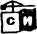
Москва Стройиздат 1985
Рекомендовано к изданию решением секции организации строительного производства ЦНИИОМТП Госстроя СССР.
Пособие по производству геодезических работ в строительстве (к СНиП 3.01.03-84) / ЦНИИОМТП. - М.: Стройиздат, 1985.
Рассмотрены вопросы организации геодезических работ при возведении зданий и сооружений, построения геодезической разбивочной основы. Приведены состав проекта производства геодезических работ, методы и средства разбивочных работ и контрольных измерений, а также методы проведения измерений за осадками и перемещениями строящихся зданий и сооружений.
Даны методики проведения геодезических съемок, составления исполнительной документации в процессе и после завершения строительства объекта.
Для инженерно-технических работников геодезических служб.
Разработано ЦНИИОМТП (кандидаты техн. наук В. С. Сытник, Б. Г. Борисенков, С. Е. Чекулаев, Ф. В. Андреева, А. Б. Клюшин и инж. С. В. Климанов) при участии НИИПГ ГУГК (канд. техн. наук Н. С. Чирятьев); НИИОСП им. Н. М. Герсеванова (канд. техн. наук Е. М Перепонова); ПТИОМЭС (инж. В. И. Зайцев); треста Мосоргстрой Главмосстроя (канд. техн. наук В. Д. Фельдман); Мосгоргеотреста (канд. техн. наук Б. И. Коськов); Туркменского политехнического института (инж. Н. С. Сулейманов); МИИТ (канд. техн. наук С. И. Матвеев); СамГАСИ (инж. А. И. Хайдаров).
1.1. Настоящее Пособие содержит справочный и вспомогательный материал к СНиП 3.01.03-84.
1.2. В связи с тем, что к объему, составу и содержанию отчетных материалов по геодезическим работам для каждого вида строительства предъявляются различные требования, в настоящем Пособии рассматриваются основные вопросы по геодезическим работам, выполняемым только при строительстве новых, расширении и реконструкции действующих предприятий, зданий и сооружений.
1.3. Пособие не охватывает специфики геодезических работ, выполняемых на уникальных объектах, крупных энергетических сооружениях, при монтаже технологического оборудования и других специальных видах строительства.
1.4. Геодезические работы на строительной площадке могут выполняться геодезическими службами заказчиков, подрядных и субподрядных организаций, специализированными геодезическими организациями.
1.5. Функции геодезической службы подрядчика определены «Положением о геодезической службе строительно-монтажных организаций», утвержденным постановлением Госстроя СССР от 14.XII.81 г. № 213 и могут быть уточнены ведомственными Положениями.
1.6. Число инженерно-технических работников, занятых на геодезических работах, может определяться исходя из объема строительно-монтажных работ, сложности объекта, специфики работ, числа самостоятельных строительных участков.
1.7. За каждым геодезистом в зависимости от характера и объема работ закрепляются один - два постоянных рабочих-замерщиков, прошедших специальную подготовку (см. Дополнения и изменения к «Единому тарифно-квалификационному справочнику работ и профессий рабочих», вып. 5, утвержденному постановлением Госкомтруда 23 сентября 1974 г. № 295).
1.8. Для выполнения геодезических работ в сложных по технике безопасности условиях строительные управления выделяют дополнительно рабочих, прошедших соответствующий инструктаж и имеющих допуск к данной работе.
1.9. Геодезические службы обеспечиваются приборами, инструментами, оборудованием, инвентарем и транспортными средствами, а также помещениями для проведения камеральных работ и хранения приборов, инструментов и документации.
1.10. При производстве работ геодезические службы руководствуются действующим законодательством о труде, строительными нормами и правилами, требованиями государственных стандартов и инструкций.
2.1. При строительстве сложных и крупных объектов, а также зданий выше девяти этажей подрядчиком (генподрядчиком или субподрядчиком, в зависимости от того, кто выполняет строительно-монтажные работы) или по его поручению специализированными проектными, проектно-конструкторскими и научно-исследовательскими организациями, а также проектно-технологическими трестами (институтами) «Оргтехстрой» («Оргстрой») разрабатывается проект производства геодезических работ (ППГР).
2.3. Основанием для разработки ППГР специализированной проектной или научно-исследовательской организацией является техническое задание, составленное по установленной форме (прил. 1), а при разработке в составе ППР - частное задание группы подготовки производства работ строительно-монтажной организации. Задание должно содержать данные об объемах и сроках разработки.
2.4. Содержание ППГР согласовывается с технической и экономической сторонами ПОС и ППР. При пересмотре проектно-сметной документации на производство строительно-монтажных работ все изменения вносятся в ППГР. Разработка производится за счет накладных расходов в строительстве.
2.5. ППГР разрабатывается на основе последних достижений науки и техники в области геодезического обеспечения строительно-монтажных работ и передовых методов геодезических работ.
2.6. Основными нормативными документами при разработке ППГР являются государственные стандарты, строительные нормы и правила, действующие инструкции, проекты и указания к проектированию, производству и обеспечению геометрической точности в строительстве.
2.7. ППГР согласовывается с геодезической службой строительно-монтажной организации, утверждается руководителями организации-исполнителя и заказчика проекта, подписывается главным инженером генподрядной строительно-монтажной организации и передается в производство за два месяца до начала работ.
2.8. Сроки разработки и передачи в производство ППГР регламентируются сметной стоимостью строительства и сложностью объекта. Так, например, при сметной стоимости объекта до 5 млн. руб., ППГР может быть выполнен за 3 - 4 мес, от 5 до 12 млн. руб. - за 5 - 6 мес.
2.9. Организация-разработчик несет ответственность за обоснованность включенных в ППГР положений и осуществляет авторский надзор за его внедрением.
2.10. ППГР следует разрабатывать на несколько периодов строительства (реконструкции) объекта: подготовительный; возведения объекта; наблюдения за перемещениями и деформациями зданий и сооружений, если это предусмотрено в проектной документации.
на подготовительный период строительства: схема расположения и закрепления знаков внешней разбивочной сети здания (сооружения), потребность в материальных и людских ресурсах, график выполнения геодезических работ;
на возведение объекта: точность и метод создания внутренней разбивочной сети здания (сооружения), схема расположения и закрепления знаков сети, типы центров знаков; точность и методы выполнения детальных разбивочных работ, контрольных измерений, исполнительных съемок; потребность в материальных и людских ресурсах, график выполнения геодезических работ;
на период наблюдения за перемещениями и деформациями зданий и сооружений: точность, методы, средства и порядок производства наблюдений за перемещениями и деформациями объектов строительства, схема геодезической сети, точность и методы ее построения, типы центров знаков, график выполнения работ.
2.12. Пояснительная записка ППГР содержит в краткой форме основные положения о взаимоотношениях между заказчиком проекта и исполнителем, общие сведения по объекту строительства, смету на производство геодезических работ, перечень государственных стандартов, строительных норм и правил, рабочих чертежей, которые использовались при разработке проекта.
2.13. Во введении к пояснительной записке приводятся обоснование разработки ППГР, наименование организации заказчика и проекта, разработчика и генерального подрядчика, осуществляющего строительство объекта.
2.14. В общих сведениях по объекту строительства приводятся:
административная принадлежность района работ;
краткие сведения об объекте строительства, его особенностях и топографо-геодезической изученности района строительства;
результаты экспертизы проектной документации.
2.15. В смете на производство геодезических работ приводятся обоснования расценок, норм времени, трудовых затрат и сводная таблица стоимости работ.
2.16. В заключении излагается порядок передачи материалов ППГР в производство, приводятся рекомендации по поверкам и юстировкам геодезических приборов и инструментов, прилагается альбом рекомендуемых образцов исполнительных схем и указывается наименование организации, осуществляющей авторский надзор за внедрением ППГР в производство.
2.17. К схеме внешней разбивочной сети здания (сооружения) прилагаются:
схема закрепления сети;
данные о точности и методика построения внешней разбивочной сети здания (сооружения) с учетом требований строительных норм и правил или государственных стандартов;
конструкции рекомендуемых знаков для закрепления разбивочных осей.
2.18. ППГР на строительство подземной части здания (сооружения) должен содержать помимо основных положений (п. 2.11) следующее:
точность детальных разбивочных работ;
методы выполнения детальных разбивочных работ;
технологию выноса и закрепления в натуре контура котлована здания (сооружения), трасс инженерных сетей;
технологию геодезического контроля при производстве земляных и строительно-монтажных работ;
технологию производства исполнительных съемок и составление исполнительской документации.
2.19. ППГР на монтаж надземной части здания (сооружения) должен содержать помимо основных положений, перечисленных в пп. 2.11 и 2.18, следующее:
точность построения внутренней разбивочной сети здания (сооружения) на монтажных горизонтах для многоэтажных зданий (сооружений);
методы передачи разбивочных осей на монтажные горизонты;
методику геодезических выверок при установке строительных конструкций и элементов в проектное положение.
2.20. Содержание ППГР должно удовлетворять требованиям передовой технологии, быть кратким, иметь описание методик геодезического обеспечения по этапам строительства, должно быть логичным и достоверным.
2.21. К построению разбивочной сети здания (сооружения) предъявляются требования удобства выполнения разбивочных работ и сохранности знаков на весь период строительства. Форма построения внешней разбивочной сети здания обычно повторяет конфигурацию возводимого здания (сооружения).
2.22. При построении внешней разбивочной сети здания (сооружения) должна предусматриваться необходимая и достаточная точность для производства детальных разбивочных работ.
Если точность выполненной ранее разбивочной сети строительной площадки не удовлетворяет требованиям внешней разбивочной сети здания (сооружения), то проектируется самостоятельная сеть. При этом за начало координат принимаются один из пунктов разбивочной сети строительной площадки и одно дирекционное направление.
2.23. В тех случаях, когда точность построения внешней разбивочной сети здания (сооружения) не регламентирована допусками СНиП 3.01.03-84, выполняют индивидуальный расчет исходя из требований точности построения минимального межосевого размера данного сооружения, при этом можно пользоваться таблицей или графиком, приведенными в прил. 3 и 4.
2.24. Конструкции знаков внешней разбивочной сети здания (сооружения) проектируют с учетом климатических условий строительства, используя типы тех знаков, которые нашли в данной зоне широкое применение.
Некоторые конструкции знаков приведены в прил. 5.
2.25. Редуцирование пунктов внутренней разбивочной сети здания (сооружения) в проектное положение производится после контрольных промеров на монтажном горизонте, поэтому в ППГР должна быть дана методика уравнивания и редуцирования построенной сети как на исходном, так и на монтажном горизонтах.
2.26. При разработке технологий геодезических выверок и контроля строительно-монтажных работ особое внимание необходимо уделять внедрению шаблонов и приспособлений, светодальномерной, электронной и лазерной техники, которые позволяют повысить производительность и качество геодезических работ.
2.27. Для передачи осей на монтажные горизонты следует рекомендовать методы, удовлетворяющие точности передачи, исходя из наличия технических средств и высоты сооружения.
2.28. Выполнение детальных разбивок следует предусматривать от основных или главных осей одним из известных способов с точностью, указанной в нормативном документе для данного вида сооружения.
2.29. Разбивочные оси необходимо закреплять знаками (рисками), окрашенными трудносмываемыми масляными красками ярких цветов.
2.30. В качестве исполнительной документации следует рекомендовать на каждый вид работ формуляры, образцы которых должны прикладываться отдельным альбомом как приложение к ППГР.
2.31. При разработке ППГР на монтаж технологического оборудования точность установки и выверки должна быть задана проектной организацией в рабочих чертежах и в техническом задании, если таких требований нет в строительных нормах и правилах или в государственных стандартах.
2.32. Технология наблюдений за деформациями в процессе строительства геодезическими методами (проект опорной геодезической сети, типы осадочных марок и реперов, программа наблюдений, методика геодезических измерений) разрабатывается в соответствии с требованиями ГОСТ 24846-81 «Руководства по наблюдениям за деформациями оснований и фундаментов зданий и сооружений» (М.: Стройиздат, 1975).
2.33. В ППГР как на отдельные объекты, так и на все строительство в целом по производственным подразделениям должны указываться нормокомплекты геодезических приборов и приспособлений (прил. 6).
2.34. Методы геодезических работ следует предусматривать с учетом соблюдения правил гигиены труда и производственной санитарии.
2.35. В отдельных случаях, когда это необходимо и целесообразно, разрабатываются методы фотограмметрического обеспечения строительно-монтажных работ.
2.36. Помимо краткости изложения и полноты содержания, ППГР должен быть наглядно оформлен, иметь штамп с указанием реквизитов организации, разработавшей ППГР, и штампы согласований с организациями заказчиков.
3.1. Геодезическая разбивочная основа для строительства состоит из разбивочной сети строительной площадки и внешней разбивочной сети здания (сооружения).
3.2. Для строительства промышленных комплексов разбивочную сеть создают в виде строительной сетки.
Для строительства уникальных сооружений, требующих высокой точности производства разбивочных работ, строятся специальные линейно-угловые сети, микротриангуляция, микротрилатерация в виде систем прямоугольников, центральных или радиально-кольцевых сетей.
Для строительства жилых и гражданских зданий (сооружений) разбивочная сеть строительной площадки создается в виде сетей красных или других линий регулирования застройки, для строительства подземных инженерных сетей - в виде сетей теодолитных ходов (примерные схемы построения разбивочной сети строительной площадки приведены в прил. 7).
3.3. Чертеж разбивочной сети строительной площадки составляется в масштабе генерального плана. К нему прилагаются:
данные о точности построения разбивочной сети с учетом существующих пунктов геодезической сети и требований строительных норм и правил, государственных стандартов;
описание типов центров геодезических пунктов и методики их заложения.
3.4. Системы координат для строительных площадок устанавливаются в период проектирования объектов и показываются на проектных чертежах. Привязки элементов зданий, сооружений, необходимые данные для производства разбивочных работ на проектных чертежах даются относительно осей в установленной для данной строительной площадки системе координат.
3.5. Высотные разбивочные сети создаются ходами нивелирования II, III, IV классов, а также ходами геометрического или тригонометрического нивелирования.
Строительная сетка
3.6. Разбивочная сеть строительной площадки может создаваться в виде строительной сетки. Она представляет собой систему квадратов или прямоугольников, покрывающих строительную площадку. Направление осей строительной сетки выбирают параллельно осям зданий и сооружений или красных линий застройки.
3.7. В зависимости от назначения строительная сетка строится из основных и дополнительных фигур. Длины сторон основных фигур составляют 50, 100, 200 и 400 м. При строительстве многоэтажных зданий стороны основной строительной сетки принимаются равными 25, 30, 50 м. При проведении работ по вертикальной планировке строительную сетку дополнительно разбивают на квадраты со сторонами 20 - 40 м в зависимости от характера рельефа и размещения застройки. Стороны строительных сеток должны быть кратными длине мерных приборов - проволок, лент, рулеток и т.д.
3.8. Строительная сетка может использоваться для решения задач горизонтальной и вертикальной планировки, создания внешней разбивочной сети здания, сооружения, производства контрольных наблюдений и ведения исполнительной съемки.
3.9. Пункты сетки намечают в местах, обеспечивающих их достаточную устойчивость и удобство выполнения геодезических работ вне зоны производства земляных работ.
Рис. 1. Схема строительной сетки
3.10. Для выполнения геодезических работ координаты пунктов строительной сетки могут вычисляться в государственной системе координат. Для этого от пунктов государственной сети координаты передают на пункты строительной сетки.
3.11. Для удобства составления разбивочных чертежей и ведения геодезических работ пункты строительной сетки чаще всего вычисляют в условной системе координат. Одной из вершин присваивают условные координаты так, чтобы координаты всех остальных пунктов сети были положительными. Направление главных осей сетки совмещают с направлениями осей абсцисс и ординат. Пунктам сетки присваивают порядковую нумерацию. Перевычисление координат из условной системы в государственную и наоборот выполняют по формулам аналитической геометрии.
3.12. Вынос точек строительной сетки в натуру производится от пунктов геодезической сети или от твёрдых местных предметов и контуров. Сначала на местности определяют исходное направление методами: полярным, угловых или линейных засечек, промеров от твердых контуров. Для контроля выносят не менее трех точек исходного направления. Линейные измерения выполняют с точностью 1:1000 - 1:2000, угловые - 30 - 60". Точки исходного направления закрепляют деревянными или бетонными знаками.
3.13. При осевом способе разбивки строительной сетки на местности в точке А (рис. 1) строят две перпендикулярные оси MD и EH. По ним в створе линии откладывают отрезки, равные сторонам сетки. В точках М, Н, Е и D строят прямые углы и вдоль полученных направлений разбивают точки сети. По величинам невязок в пунктах F, K, L и Р судят о точности разбивочных работ.
Временные знаки заменяют постоянными железобетонными и по ним прокладывают полигонометрические ходы, уравнивают их и вычисляют окончательные координаты точек. Между соответствующими пунктами основных полигонов разбивают заполняющие пункты сети, по которым прокладывают полигонометрические ходы второго порядка. Этот метод приемлем, в основном, для небольших по размеру строительных площадок площадью до 10 га.
3.14. При способе редуцирования от исходного направления в натуре намечают положение пунктов строительной сетки с точностью 1:1000 - 1:2000 и закрепляют их временными знаками. Если строительная сетка больших размеров, то координаты угловых пунктов и некоторых центральных определяют методом триангуляции или полигонометрии. Между ними, по периметру строительной сетки, прокладывают полигонометрические ходы первого порядка. По остальным пунктам сетки прокладывают полигонометрические ходы второго порядка. Затем вычисляют точные значения координат временных знаков и сравнивают их с проектными. Решая обратные геодезические задачи, вычисляют значения редукций, на которые смещают центры пунктов строительной сетки, и закрепляют их постоянными знаками. По закрепленным пунктам выборочно в шахматном порядке выполняют контрольные измерения углов и линий. Расхождения в длинах сторон не должны превышать 10 - 15 мм, а в значениях углов 10 - 15".
3.15. В процессе строительства строительную сетку сгущают, прокладывая дополнительные ходы вдоль площадочных коммуникаций с точностью основных ходов между пунктами триангуляции и полигонометрии первого порядка. Допускается применение метода геодезических засечек или метода геодезических четырехугольников.
Геодезические сети сгущения
3.16. Геодезические сети сгущения создаются на стадии производства топографо-геодезических работ при инженерных изысканиях и разбивочных работах при выносе зданий и сооружений в натуру.
3.17. На стадии изысканий геодезические сети сгущения проектируются так, чтобы они по точности могли удовлетворять требованиям съемки строительной площадки в крупных масштабах и переносу разбивочных осей зданий и сооружений в натуру.
3.18. При построении сетей сгущения методом триангуляции следует руководствоваться требованиями «Инструкции по топографо-геодезическим работам при инженерных изысканиях для промышленного, сельскохозяйственного, городского и поселкового строительства» СН 212-73. (табл. 1).
3.19. Плотность пунктов государственной геодезической сети и геодезических сетей сгущения должна быть не менее: на застроенных территориях - 4 пункта на 1 км2; на незастроенных - 1 пункт на 1 км2; на вновь осваиваемых территориях и в труднодоступных районах плотность пунктов может быть меньше в 1,5 раза.
3.20. Геодезические сети сгущения 1 и 2 разрядов строятся любым из методов: триангуляции, трилатерации и полигонометрии.
Таблица 1
|
Триангуляция |
|||
|
4-го класса |
1-го разряда |
2-го разряда |
|
|
Длина стороны треугольника, км |
1 - 5 |
0,5 - 5 |
0,25 - 3 |
|
Относительная средняя квадратическая погрешность: |
|||
|
базисной (выходной) стороны, не более |
1:100000 |
1:50000 |
1:20000 |
|
определяемой стороны сети в наиболее слабом месте, не более |
1:50000 |
1:20000 |
1:10000 |
|
Наименьшее значение угла треугольника между направлениями данного класса (разряда) |
20° |
20° |
20° |
|
Предельная невязка в треугольнике |
8" |
20" |
40" |
|
Средняя квадратическая погрешность измеренного угла (вычисленная по невязкам треугольников), не более |
2" |
5" |
10" |
|
Предельная длина цепи треугольников, км |
10 |
5 |
3 |
3.21. Метод триангуляции применяют в открытой, холмистой и горной местностях. В зависимости от характера территории, конфигурации и размеров строительной площадки триангуляцию развивают в виде сплошной сети (цепочки) треугольников, вставок отдельных пунктов или их групп в треугольники, образованные пунктами сетей высших классов, и засечками.
3.22. Измерение горизонтальных углов на пунктах триангуляции выполняют способом круговых приемов. Точность измерения горизонтальных углов должна характеризоваться показателями, приведенными в табл. 2 (СН 212-73).
3.23. Если на пунктах триангуляции возникает большое число направлений, то измерения ведут по группам с включением в каждую группу не более восьми направлений. Начальное направление остается во всех группах одним и тем же.
3.24. Наблюдения на пунктах триангуляции 4-го класса, 1-го и 2-го разрядов разрешается производить с земли (при установке теодолита на штатив). Визирный луч должен проходить не ближе 1,5 м от земной поверхности.
Таблица 2
|
Теодолиты |
||
|
2Т2 и равноточные ему |
2Т5 и равноточные ему |
|
|
Число приемов: |
||
|
4 класс |
6 |
- |
|
1 разряд |
3 |
4 |
|
2 « |
2 |
3 |
|
Средняя квадратическая погрешность измерения угла одним приемом |
3" |
7" |
|
Расхождение в результатах наблюдений направления на начальный предмет в полуприеме, не более |
8" |
12" |
|
Колебания в отдельных приемах направлений, приведенных к общему нулю, не более |
8" |
12" |
3.25. При наблюдениях на визирные цилиндры наружных геодезических знаков графически определяют элементы приведений. Расхождения между двумя определениями линейных элементов не должны превышать 10 мм.
3.26. При невозможности применения графического способа определения центрировки и редукции вследствие значительной величины линейных элементов определение центрировки и редукции производится непосредственным измерением или аналитическим способом.
3.27. При работах на коротких сторонах строительной площадки следует избегать центрировок и редукции, устанавливая визирные марки на месте теодолита.
3.28. Измерение базисных (выходных) сторон в самостоятельных сетях триангуляции производится светодальномерами различных типов или базисными приборами типа БП-2М.
Длина базисной (выходной) стороны триангуляции должна быть не менее: 2 км - для 4-го класса, 1 км - для 1-го разряда и 0,5 км - для 2-го разряда.
3.29. Предельные расхождения в длинах базисных (выходных) сторон триангуляции, определенных светодальномером на разных частотах, не должны превышать: 4 см при длине стороны до 1 км; 5 см - от 1 км до 2 км; 6 см - не более 2 км.
3.30. При измерении базисов и базисных сторон инварными проволоками последние компарируются дважды на стационарных компараторах не ранее чем за два месяца до начала и не позднее 2 мес после измерений базиса.
Таблица 3
|
Трилатерация |
|||
|
4-го класса |
1-го разряда |
2-го разряда |
|
|
Длина стороны треугольника, км |
1 - 5 |
0,5 - 5 |
0,25 - 3 |
|
Относительная средняя квадратическая погрешность измерения сторон (по внутренней сходимости), не более |
1: 100000 |
1:50000 |
1:20000 |
|
Предельная длина цепи треугольников, км |
10 |
5 |
3 |
|
Наименьшее значение угла треугольника |
20° |
20° |
20° |
3.31. Измерение базисов с применением базисного прибора выполняется по штативам, а на малоустойчивом грунте по кольям.
3.32. В измеренную длину базисов вводятся поправки за уравнения проволок, температуру, приведение к горизонту, проектирование на эллипсоид и редуцирование на плоскость.
3.33. При выполнении линейных измерений в полигонометрии 4-го класса, 1-го и 2-го разрядов следует руководствоваться требованиями Инструкции СН 212-73.
Таблица 4
|
Полигонометрия |
|||
|
4-го класса |
1-го разряда |
2-го разряда |
|
|
Предельная длина хода, км: |
|||
|
отдельного |
10 |
5 |
3 |
|
между исходной и узловой точками |
7 |
3 |
2 |
|
Между узловыми точками |
5 |
2 |
1,5 |
|
Предельный периметр полигона, км |
30 |
15 |
9 |
|
Длина сторон хода, км |
0,25 - 0,8 |
0,12 - 0,6 |
0,08 - 0,3 |
|
Число сторон в ходе, не более |
15 |
15 |
15 |
|
Относительная погрешность хода, не более |
1:25000 |
1: 10000 |
1:5000 |
|
Средняя квадратическая погрешность измерения угла (по невязкам в ходах и полигонах), не более |
3" |
5" |
10" |
3.34. Построение сетей методом трилатерации с применением светодальномеров следует выполнять в соответствии с требованиями СН 212-73 (табл. 3).
3.35. Методом полигонометрии сгущают государственную геодезическую сеть до плотности, обеспечивающей проложение съемочных ходов.
3.36. При построении разбивочной сети методом полигонометрии должны соблюдаться требования СН 212-73 (табл. 4).
3.37. Проект полигонометрической сети составляется с учетом допустимой длины теодолитных ходов, прокладываемых для топографической съемки.
3.38. Вновь закладываемые пункты полигонометрии привязываются промерами расстояний не менее чем до трех точек местных предметов или контуров с составлением абриса.
3.39. Углы в полигонометрических сетях измеряются способом круговых приемов по трехштативной системе с соблюдением требований СН 212-73 (табл. 5).
Таблица 5
|
Тип теодолита |
||
|
Т2 и равноточные ему |
Т5 и равноточные ему |
|
|
Расхождение между результатами наблюдений направления на начальный предмет в начале и в конце полуприема, не более |
8" |
0,2' |
|
Колебания в отдельных приемах направлений, приведенных к общему нулю, не более |
8" |
0,2' |
|
Число приемов в полигонометрии: |
||
|
4 класса |
6 |
- |
|
1 разряда |
2 |
3 |
|
2 « |
1 |
2 |
3.40. Допустимые значения угловых невязок в ходах и полигонах полигонометрии подсчитываются по формулам для 4-го класса и 1-го и 2-го разрядов соответственно: 5"√n; 10"√n и 20"√n, где n - число углов в ходе или полигона (включая привычные углы).
3.41. Стороны полигонометрии 4-го класса измеряют электронными дальномерами. В зависимости от требуемой точности и условий работы могут быть использованы свето- и радиодальномеры различных типов.
3.42. В полигонометрии 1-го и 2-го разрядов линейные измерения производят светодальномерами, параллактическим методом, оптическими дальномерами, длиномером АД-1М, АД-2, инварными проволоками.
3.43. Для определения сторон параллактическим методом используются оптические теодолиты Т2 и равноточные им, инварные двух- и трехметровые базисные жезлы и визирные марки.
Базисные жезлы компарируются на полевых компараторах с погрешностью не более 1:200000.
Таблица 6
|
Классы нивелирования |
|||
|
II |
III |
IV |
|
|
Периметр полигона или линии нивелирования, км |
500 - 600 |
150 - 200 |
50 |
|
Средняя квадратическая погрешность на 1 км хода, мм: |
|||
|
случайная |
2 |
4 |
10 |
|
систематическая |
0,4 |
0,8 |
2 |
|
Нормальная длина визирного луча, м |
65 - 75 |
75 - 100 |
100 - 150 |
|
Неравенство расстояний, м: |
|||
|
на станции |
1 |
2 |
5 |
|
в ходе |
2 |
5 |
10 |
|
Высота визирного луча над поверхностью земли, м |
0,5 |
0,3 |
0,2 |
|
Допустимые расхождения в превышениях, мм: |
|||
|
хода до 15 станций на 1 км |
5√L |
10√L |
20√L |
|
хода свыше 15 станций |
6√L |
2,6√n |
5√n |
|
Допустимые расхождения в превышениях на станции, мм: |
|||
|
по прецизионным рейкам |
0,7 |
1,5 |
- |
|
по шашечным рейкам |
- |
3 |
5 |
|
Допустимые невязки превышений в полигонах, мм: |
- |
10√L |
20√L |
|
до 15 станций на 1 км хода |
2,5√L |
- |
- |
|
свыше 15 станций |
3√L |
- |
- |
|
Увеличение трубы нивелира |
40 - 44* |
30 - 35* |
25 - 30* |
|
Цена деления цилиндрического уровня |
12" |
15" |
25" |
|
Допустимые погрешности метрового интервала рейки, мм |
±0,3 |
±0,5 |
±1 |
|
Обозначения: L - длина хода, км; n - число станций. |
|||
3.44. Для измерения длины сторон полигонометрии 2-го разряда дальномерно-базисным методом используется редукционный тахеометр «Редта-002», дальномеры Д-2, ДНР-5. Линии измеряют в прямом и обратном направлениях.
3.45. Длины сторон полигонометрии 1-го и 2-го разрядов можно измерять длиномером АД-1М и АД-2. Измерения сторон в полигонометрии 1-го разряда выполняют двумя приемами, в полигонометрии 2-го разряда - одним.
3.46. При использовании инварных проволок в ходах 4-го класса полигонометрии измерения производят двумя проволоками (лентами) в одном направлении; в ходах 1-го разряда - одной инварной или стальной проволокой в прямом и обратном направлениях, или в одном направлении двумя проволоками; в ходах 2-го разряда - одной проволокой (лентой) в одном направлении.
В процессе работ мерные приборы проверяются на полевом компараторе не реже одного раза в месяц.
3.47. Высоты пунктов полигонометрии определяют из геометрического или тригонометрического нивелирования. В качестве сгущения высотной основы на территориях городов, поселков и промышленных площадок регламентируется развитие сетей нивелирования II, III и IV классов.
При построении высотной основы следует руководствоваться требованиями СН 212-73 (табл. 6 и 7).
Таблица 7
|
Класс нивелирования |
|||
|
II |
III |
IV |
|
|
Длина ходов, км, между узловыми точками |
15 - 20 |
10 - 15 |
- |
|
Расстояние между знаками на территориях, км: |
|||
|
застроенных |
2 |
0,2 - 0,3 |
0,2 - 0,3 |
|
незастроенных |
3 |
0,5 - 2 |
0,5 - 2 |
3.48. Нивелирные сети сгущения создаются в виде отдельных ходов, систем ходов (полигонов) или в виде самостоятельных сетей и привязываются не менее чем к двум исходным государственным нивелирным знакам (маркам, реперам) высшего класса.
3.49. Высотная разбивочная основа на территории строительства должна быть закреплена постоянными знаками с таким расчетом, чтобы отметки передавались на объекты строительства от двух реперов не более чем с трех станций нивелирного хода.
3.50. Нивелирные знаки закладываются в стены капитальных зданий и сооружений, построенных не менее чем за два года до закладки знака. Марки закладываются на высоте 1,5 - 1,7 м, а реперы на высоте 0,3 - 0,6 м над поверхностью земли (тротуара, отмостки и т.д.). Грунтовые реперы закладываются только при отсутствии капитальных зданий и сооружений.
3.51. Стенные марки и реперы нивелируются через трое суток, а грунтовые через 10 сут после их закладки. В районах вечной мерзлоты грунтовые реперы нивелируются: при котлованном способе закладки в следующий полевой сезон; при закладке бурением через 10 дней; при закладке с протаиванием грунта через 2 мес.
3.52. Нивелирование II класса выполняется нивелирами Н-05, Н-05К и равноточными им. Нивелирование выполняется по рейкам с инварной полосой способом совмещения по одной паре костылей в прямом и обратном направлениях.
При применении нивелиров с самоустанавливающейся линией визирования неравенство расстояний от нивелира до реек на станции допускается до 3 м, а в секции до 5 м.
Вычисление превышений на станциях и между марками (реперами) округляют до 0,05 мм, а среднее превышение - до 0,01 мм.
Нивелиры и рейки с инварной полосой подвергаются лабораторным и полевым поверкам и исследованиям в соответствии с Инструкцией по нивелированию.
3.53. Нивелирование III класса выполняют нивелирами Н-3, Н-3К и другими по одной паре костылей в прямом и обратном направлениях. Рейки применяют шашечные двусторонние, с сантиметровыми делениями и штриховые односторонние, с делениями через 0,5 см. Нивелирование выполняют нивелирами с оптическим микрометром способом «совмещения». В остальных случаях отсчеты по рейкам берут по средней нити.
3.54. Нивелирование IV класса выполняют нивелирами Н-3, Н-3К, и равноточными им. Применяют двусторонние шашечные рейки длиной 3 м с сантиметровыми делениями. Нивелирные ходы прокладывают в одном направлении.
3.55. Перед вычислением невязок нивелирных ходов проверяют вычисления средних превышений, определяют накопления неравенств расстояний от нивелира до реек, в сумму превышений вводят поправки за среднюю длину 1 м пары реек.
3.56. Вертикальные углы при тригонометрическом нивелировании измеряют одним приемом при двух положениях вертикального круга (КЛ и КП) с отсчетами по трем нитям. Допускается измерение вертикального угла тремя приемами по одной средней нити.
Измерение вертикальных углов необходимо выполнять в условиях лучшей видимости, в период от 8 - 9 до 17 ч. Измерение выполняют последовательно по всем направлениям при одном положении, а затем при втором положении вертикального круга. Колебание значений вертикальных углов и места нуля, вычисленных из отдельных приемов, не должны превышать 15".
Высоты визирной цели и приборы измеряют компарированной рулеткой два раза с точностью до 0,01 м.
3.57. При тригонометрическом нивелировании и сетях сгущения можно не учитывать поправку за отклонение отвесной линии от нормали к эллипсоиду и поправку за переход от измеренной разности высот к разности нормальных высот.
Отметки центров пунктов в сетях сгущения определяют тригонометрическим нивелированием по всем сторонам сети в прямом и обратном направлениях.
Уравнивание геодезической разбивочной основы для строительства
3.58. Разбивочные сети строительной площадки должны обеспечивать высокую точность разбивочных построений, поэтому чтобы исключить ошибки исходных данных, уравнивать такие сети рекомендуется как свободные с одним твердым пунктом и одним твердым направлением.
3.59. Ошибки координат в свободных геодезических сетях возрастают пропорционально удалению от твердого пункта, поэтому значительные по размеру сети в целях лучшего согласования с местной системой координат следует привязывать к нескольким твердым пунктам и направлениям.
Для ослабления деформации сети строительной площадки из-за ошибок исходных данных и редукционных поправок рекомендуется проводить трансформирование сети по способу Ришави [1]. При величине масштабного коэффициента, отличающегося от 1 больше, чем на 10-5, следует выполнить только разворот и параллельное смещение сети без растяжения.
3.60. При ширине зоны прямоугольных координат объекта строительства, не превышающей 40 км, поправки за переход на плоскость проекции Гаусса в измеренные расстояния не вводят. В противном случае на объекте выбирают осевой меридиан зоны и вводят поправки ∆S в расстояния в соответствии с формулой
∆S = y2срS/2R2, (1)
где yср - ордината средней точки линии (от осевого меридиана); S - длина линии; R - средний радиус кривизны Земли.
При перепаде высот более 32 м измеренные расстояния следует редуцировать на поверхность относимости, совпадающую со средним уровнем строительной площадки. Поправку в линию ∆н за редуцирование на средний уровень определяют по формуле
∆н = Hs/R, (2)
где Hs - высота средней точки линии над средним уровнем.
3.61. При создании разбивочной сети строительной площадки возникает необходимость в перевычислении координат из местной системы в систему строительной площадки. Для решения этой задачи необходимо иметь не менее двух удаленных друг от друга точек с координатами в двух указанных системах. Перевычисление рекомендуется осуществлять по формулам аналитической геометрии. Первые три программы уравнивания плановых геодезических сетей, перечисленные в п. 3.66, предусматривают решение и этой задачи.
3.62. Уравнивание плановых разбивочных сетей производят преимущественно на ЭВМ в соответствии с методом наименьших квадратов. Уравнивание сетей триангуляции, трилатерации, полигонометрии, строительных сеток, комбинированных линейно-угловых построений следует выполнять по программам уравнивания комбинированных геодезических сетей. Большинство из них реализует параметрический способ уравнивания. В отраслевом фонде алгоритмов и программ института ЦНИИПРОЕКТ Госстроя СССР имеются: пакеты программ предварительной математической обработки геодезических сетей (ГЕОПС-1А) [2], составление уравнений погрешностей, нормальных уравнений, оценки качества; уравнивание параметрическим методом (ГЕОПС-2А) приведено в работе [3]. Эти программы обеспечивают одновременное уравнивание сетей, включающих до 1600 пунктов, с выдачей необходимой информации в виде каталога установленной формы. Пакеты разработаны на языке АЛГОЛ-60, используются на ЭВМ М-222, БЭСМ-6 и могут быть использованы на ЕС ЭВМ.
Программа уравнивания комбинированных линейно-угловых сетей планового обоснования на ЭВМ ЕС-1022 из комплекса программ автоматизированной системы обработки топографо-геодезической информации (АСОТ), функционирующей в системе ДОС ЕС [4], позволяет уравнивать сети, включающие до 200 определяемых пунктов.
Хорошо зарекомендовала себя на практике программа расчета инженерно-геодезических и аналитических сетей на ЭВМ «МИНСК-22» (РИГАС) [5] А. С. Сафонова.
3.63. Уравнивание полигонометрических сетей выполняют по программам уравнивания комбинированных геодезических сетей, однако специфика полигонометрических построений (менее жесткие связи, большое число пунктов и др.) делает более эффективным применение специальных программ, таких, как:
программа уравнивания полигонометрических сетей на ЭЦВМ «БЭСМ-6» [6];
программа уравнивания сетей планового обоснования для ЭВМ «МИНСК-22» [7];
программа уравнивания сетей полигонометрии и теодолитных ходов на ЭВМ ЕС-1022 [8] и др.
3.64. При отсутствии ЭВМ уравнивание геодезических сетей, содержащих большое число исходных данных и комбинированные построения, рекомендуется производить параметрическим способом. Свободные сети триангуляции, трилатерации и сети полигонометрии лучше уравнивать коррелатным способом.
3.65. Для ориентирования и масштабирования свободной сети достаточно иметь два твердых пункта или один твердый пункт, одно твердое направление и базис.
3.67. Общее число независимых условий r подсчитывают по формуле:
при уравнивании триангуляции по углам
r = n - 2q;
ry = n1 - k1,
в том числе угловых
где n - число измеренных углов, сторон и дирекционных углов; q - число определяемых пунктов; n1, - число измеренных и дирекционных углов; k1 - число ориентируемых сторон;
при уравнивании по направлениям
r = N - 3q - Q,
в том числе угловых, ry = N1 - k1 - q - Q,
где N - число измеренных направлений, сторон и дирекционных углов; Q - число отнаблюденных твердых пунктов; N1 - число измеренных направлений и дирекционных углов.
3.68. Допустимые величины свободных членов Wдоп, условных уравнений в сетях триангуляции вычисляют по формулам:
а) в условии фигур и горизонтов
Wдоп = 2,5mβ√n,
где mβ - средняя квадратическая погрешность измерения угла; n - число углов в условном уравнении;
б) в условии дирекционных углов
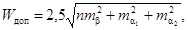
где mα1, mα2 - средние квадратические погрешности дирекционных углов;
в) в полюсном условии
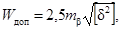
где [δ2] - сумма квадратов изменения логарифмов синусов углов β - при изменении их на 1";
г) в условии сторон (базисов)
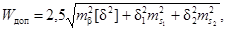
где ms1, ms2 - средние квадратические погрешности сторон s, дм; δ1, δ2 - перемены логарифмов сторон при изменении их на 1 дм;
д) в условии координат
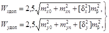
где mx, my - средние квадратические погрешности координат исходных пунктов, дм; δx, δy - коэффициенты перед поправками углов участвующих в условиях абсцисс и ординат.
3.69. В сетях трилатерации число независимых условий r, как правило, невелико r = п2 - 2q + 3, где п2 - число измеренных сторон.
В центральной системе, например, имеется только условие горизонта, а в геодезическом четырехугольнике - условие суммы углов. В сплошной свободной сети трилатерации, состоящей из геодезических четырехугольников, имеются условия только этих двух видов. Число условий горизонта равно числу центральных систем, а число условий сумм углов - числу независимых геодезических четырехугольников.
Допустимую величину свободных членов условных уравнений горизонта и суммы углов следует определять по формуле
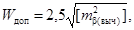
где mβвыч = mA - средняя квадратическая погрешность, вычисленная по сторонам треугольника ABC угла А, которую можно получить как
m2A = 2ρ2(ctg2B + ctg2C + ctgB·ctgC)/T2, (8)
при одинаковой относительной ошибке 1/T измерения сторон, либо как
m2A = ρ2m2a(ctgB + ctgC)2(1 + cos2B·+ cos2C)/a2, (9)
где a - величина стороны треугольника, лежащей против угла А; при одинаковой средней квадратической погрешности измерения сторон треугольника, т.е. при
ma = mb = mc.
3.70. Уравнивание небольших систем полигонометрических ходов 4-го класса, 1-го и 2-го разрядов целесообразно выполнять по способу приближений, получая уравнение значения дирекционных углов узловых направлений и координаты узловых пунктов. После этого входящие в систему хода следует уравнивать строгим способом, составляя для каждого хода три условных уравнения - дирекционных углов, абсцисс и ординат.
3.71. Условные уравнения решают методом наименьших квадратов, составляя систему нормальных уравнений коррелат. Для оценки точности стороны, дирекционного угла или координаты в наиболее слабом месте сети, аналогично соответствующему условному уравнению, составляют весовую функцию F. Обратный вес функции получают в результате решения нормальных уравнений коррелат по схеме Гаусса, как
1/PF = [FFr].
Среднюю квадратическую погрешность функции mF определяют по формуле
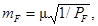
где μ
средняя квадратическая погрешность единицы веса 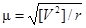
3.72. Уравнивание триангуляции коррелатным способом по углам можно выполнять двухгрупповым способом Крюгера-Урмаева. В этом случае в первую группу следует отнести все независимые условия фигур. Способ эффективен, когда число условий первой группы значительно больше числа условий второй.
3.73. При параметрическом уравнивании плановых геодезических и разбивочных сетей за неизвестные следует принимать поправки ξ и η в приближенные координаты х°, у° определяемых пунктов.
Поправки υij в измеренные направления составляют в соответствии с выражением
υij = -δzi + aijξi + bijηi - aijξj - bijηj + tij, (10)
где
aij = sinα0ijρ"/S0ij; bij = -cosα0ijρ"/S0ij,
tij = α0ij - α'ij.
Здесь δzi - поправка ориентирования на пункте i; α0ij, S0ij - дирекционный угол и сторона, см, вычисленные по приближенным координатам; α'ij - приближенно ориентированное направление стороны i-j.
Для поправки в угол βkij имеем
υkij = (aki - akj)ξk + (bki - bkj)ηk - akiξi - bkiηi + akjξj + bkjηj + lkij, (11)
где
lkij = (α0ki - α0kj) - βkij.
Уравнение поправки в измеренное расстояние Si-j имеет вид
υij = -cosα0ijξi + sinα0ijηi + cosα0ijξj + sinα0ijηj + lij, (12)
где
lij = S0ij - Sij.
При наличии в сети твердого дирекционного угла стороны i-j из уравнения поправок необходимо исключить один из четырех параметров, например ξj, и определить его после решения системы нормальных уравнений как зависимый [10]
ξj = ξi - ηictgαij + ctgαij. (13)
Если пункт i при этом имеет твердые координаты, то, очевидно,
ξj = ηjctgαij.
Наличие твердой стороны i-j учитывается аналогично, путем исключения одного из параметров, например ηj, тогда
ηj = ηi + ξictgαij - ξjctgαij. (14)
При твердых координатах пункта i, очевидно,
ηj = -ξjctgαij.
Если твердая сторона i-j имеет твердый дирекционный угол, то исключаются оба параметра одного из пунктов, например ξj и ηj, поскольку ξj = ξi и ηj = ηi.
3.74. Решение системы уравнений поправок находят методом наименьших квадратов при условии [pυ2] = min. При этом чаще всего переходят к системе нормальных уравнений, из решения которой получают искомые параметры и производят оценку точности, вычисляя средние квадратические погрешности единицы веса μ, уравненных координат тхi, туi и их функций mr, в соответствии с формулами:
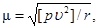
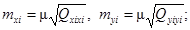
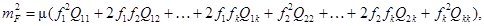
где Qij - коэффициенты матрицы, обратной к матрице системы нормальных уравнений; fi - частные производные функции F по параметрам.
3.75. Строительные сетки рекомендуется уравнивать на ЭВМ параметрическим способом. При этом за приближенные координаты следует принимать их проектные значения, что позволяет получить элементы редукции пунктов сетки в проектное положение непосредственно из уравнивания.
3.76. Уравнивание высотной сети строительной площадки рекомендуется производить на ЭВМ. Из существующих для этих целей программ, можно использовать программу уравнивания нивелирных сетей на ЭВМ ЕС-1022 [12], программу NIVEL [13] и др.
При отсутствии ЭВМ задача может быть решена известными способами узлов, полигонов или эквивалентной замены.
Внешняя разбивочная сеть здания (сооружения)
3.77. Внешняя разбивочная сеть здания (сооружения) создается в виде сети плановых (осевых) и высотных знаков, закрепляющих разбивочные оси (главные, основные) и нивелирные пункты на местности.
3.78. При сложной конфигурации зданий, при значительных размерах, а также, когда здания или сооружения одной группы тесно связаны между собой технологическими процессами, разбиваются главные оси. При строительстве небольших зданий и сооружений разбиваются основные оси.
3.79. Разбивку главных и основных осей здания и сооружения следует выполнять на основании генерального плана строительной площадки, на котором должны быть указаны привязки осей зданий и сооружений к пунктам плановой и высотной разбивочных сетей (красным линиям, пунктах строительной сетки и др.).
3.80. Главные или основные оси разбиваются на местности от пунктов плановой разбивочной сети строительной площадки. Пример разбивки и закрепления осей показан в прил. 4.
3.81. Разбивку осей начинают с выноса двух крайних точек, определяющих положение наиболее длинной продольной оси. Вынос осуществляется способом прямоугольных или полярных координат, линейных или угловых засечек.
Поперечные оси разбиваются с ранее вынесенных точек оси путем построения прямых углов. Точки пересечения вынесенных поперечных осей с продольной осью определяются линейными измерениями.
3.82. Для контроля перенесения в натуру разбивочных осей прокладывают полигонометрический или теодолитный ход, или выполняют контрольные промеры до сторон и пунктов основы, а также измерением диагоналей и сторон прямоугольника, образованного осями.
3.83. При возведении современных промышленных сооружений, когда возникает необходимость увязки высокой точности технологических линий и целых комплексов зданий, следует развивать специальные разбивочные сети, пункты которых совмещаются с точками закрепления главных и основных осей.
3.84. Метод определения координат точек сети (микротриангуляция, микротрилатерация, полигонометрия, засечки, параллактический) зависит от требуемой точности разбивочных работ, размеров строительной площадки, условий работы на ней и формы сооружения.
3.85. После уравнивания результатов выполненных геодезических измерений и вычисления координат точек закрепления осей их сравнивают с проектными значениями и находят величины линейных редукций. В случае недопустимых значений редукций изменяют положения центров осевых знаков на местности. После редуцирования производятся угловые и линейные контрольные измерения.
3.86. Линейные измерения следует производить подвесными мерными приборами, светодальномерами, компарированными рулетками и другими приборами соответствующей точности.
Угловые измерения выполняют теодолитами 2Т2, 2Т5 и другими.
3.87. Главные и основные оси зданий могут быть закреплены знаками в виде забетонированных рельс, штырей, труб, вбитых в землю деревянных кольев с гвоздями, специальных марок на капитальных зданиях (см. прил. 5).
3.88. Число постоянных знаков, закрепляющих главные и основные оси зданий и сооружений, должно определяться в ППГР.
3.89. Осевые знаки следует закреплять от контура здания на расстоянии не менее 15 м от здания в местах, свободных от размещения временных и постоянных подземных и надземных сооружений, складирования строительных материалов и т.д.
Место закрепления знака должно быть удобным для установки на знаке геодезических приборов и ведения наблюдения с них.
3.90. Точность производства разбивочных работ по выносу главных и основных осей, тип знаков закрепления осей, методика производства разбивочных работ обосновываются и разрабатываются в проекте производства геодезических работ (ППГР) или в отдельном разделе в проекте производства работ (ППР).
Точность разбивки назначается по СНиП 3.01.03-84 (табл. 2), обосновывается в ППГР и согласовывается с проектной организацией или непосредственно ею рассчитывается и задается.
3.91. По окончании разбивочных работ по выносу в натуру главных и основных осей здания должны составляться акт разбивки осей и исполнительный разбивочный чертеж (схема).
Особенности разбивки оболочек
3.92. На расчет и разбивку оболочек влияют следующие факторы: форма основания, перекрываемого оболочкой, отношение высоты подъема f оболочки (рис. 2) к размерам опорного основания а и b, отношение сторон прямоугольного основания, конструктивное решение железобетонной скорлупы и опорного контура.
3.93. По форме перекрываемого основания применяются оболочки: круглые, прямоугольные, квадратные, треугольные и многоугольные.
Пологими называют оболочки, имеющие небольшой подъем над опорным планом, в которых стрела подъема f равна не более одной шестой наибольшего размера основания a или b. При круглом основании l ≤ ~а/b, где a - диаметр опорного края оболочки.
Рис. 2. Виды оболочек
а - круговая; б - цилиндрическая
К подъемистым оболочкам относятся такие системы, в которых высота подъема больше одной шестой размера оболочки.
В современном строительстве наибольшее применение получили оболочки из сборных элементов.
3.94. Точности разбивки длин сторон опорного контура и измерения углов и линий при выносе его в натуру должны быть обусловлены подъемностью оболочек и допустимыми отклонениями в плане и по высоте монтажа сборных элементов оболочки.
3.95. Разбивка длины стороны опорного контура соответственно вдоль направляющих и образующих дуг оболочек должна выполняться со средней квадратической погрешностью
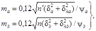
где δа и δb - допустимые отклонения установки одного сборного элемента в плане соответственно вдоль направляющих и образующих дуг оболочки; n и n' - число сборных элементов вдоль направляющих и образующих дуг оболочки; ψа и ψb - отношение длины направляющей Sa и образующей Sb дуг к длине стороны опорного контура (ψа = Sa/a, ψb = Sb/b).
Таблица 8
|
Дуга параболы |
Дуга окружности |
Гипотенуза прямого треугольника |
|||
|
N |
ψa(b) |
N |
ψa(b) |
N |
ψa(b) |
|
2 |
1,48 |
2 |
1,57 |
1 |
1,41 |
|
3 |
1,25 |
3 |
1,28 |
2 |
1,12 |
|
4 |
1,15 |
4 |
1,16 |
3 |
1,05 |
|
5 |
1,10 |
5 |
1,11 |
4 |
1,03 |
|
6 |
1,07 |
6 |
1,08 |
5 |
1,02 |
|
7 |
1,05 |
7 |
1,06 |
6 |
1,01 |
|
8 |
1,04 |
8 |
1,04 |
10 |
1,01 |
|
9 |
1,03 |
9 |
1,04 |
||
|
10 |
1,03 |
10 |
1,03 |
||
3.96. Точность разбивки длины стороны опорного контура рассчитывается в зависимости от формы направляющих и образующих поверхностей оболочек. Значения коэффициентов ψa и ψb берутся исходя из формы образующих и направляющих дуг по табл. 8, которые составлены в зависимости от соотношения высоты подъема оболочек к длине их опорного контура f/a = 1/N, где N изменяется от 2 до 10.
Таблица 9
|
n1n' |
(δ2a + δ2ha) = (δ2b + δ2nb) |
|||||||
|
20 |
25 |
30 |
35 |
40 |
45 |
60 |
55 |
|
|
1 |
0,5 |
0,6 |
0,7 |
0,7 |
0,7 |
0,8 |
0,8 |
0,9 |
|
5 |
1,2 |
1,3 |
1,5 |
1,6 |
1,7 |
1,8 |
1,9 |
2 |
|
20 |
1,7 |
1,9 |
2,1 |
2,2 |
2,4 |
2,5 |
2,3 |
2,8 |
|
15 |
2,1 |
2,3 |
2,5 |
9,6 |
2,9 |
3,1 |
3,3 |
3,4 |
|
20 |
2,4 |
2,7 |
2,9 |
3,2 |
3,4 |
3,6 |
3,8 |
4 |
|
25 |
2,7 |
3 |
3,3 |
3,5 |
3,8 |
4 |
4,2 |
4,4 |
|
30 |
2,9 |
3,3 |
3,6 |
3,9 |
4,2 |
4,4 |
4,7 |
4,9 |
Продолжение табл. 9
|
n1n' |
(δ2a + δ2ha) = (δ2b + δ2hb) |
||||||||
|
60 |
65 |
70 |
75 |
80 |
85 |
90 |
95 |
100 |
|
|
1 |
0,9 |
1 |
1 |
1,1 |
1,1 |
1,1 |
1,1 |
1,2 |
1,2 |
|
5 |
2,1 |
2,2 |
2,2 |
2,3 |
2,4 |
2,5 |
2,5 |
2,6 |
2,7 |
|
10 |
2,9 |
3 |
3,1 |
3,3 |
3,4 |
3,5 |
3,6 |
3,7 |
3,8 |
|
15 |
3,6 |
3,7 |
3,9 |
4 |
4,2 |
4,3 |
4,4 |
4,5 |
4,6 |
|
20 |
4,2 |
4,3 |
4,5 |
4,6 |
4,8 |
4,9 |
5,1 |
5,2 |
5,3 |
|
25 |
4,6 |
4,8 |
5 |
5,2 |
5,4 |
5,5 |
5,7 |
5,8 |
5,9 |
|
30 |
5,1 |
5,3 |
5,5 |
5,7 |
5,9 |
6,1 |
6,2 |
6,4 |
6,6 |
3.97. Для упрощения вычисления ma и mb следует пользоваться значениями
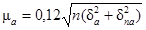 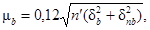
приведенными в табл. 9. Формулы (17) примут вид
ma = μ/ψa; mb = μ/ψb. (18)
Пример. Сборная оболочка с круговыми направляющими и образующими имеет длины сторон опорного контура a = b = 60 м и высоты подъема fa = 15 м и fb = 8 м. Пусть ±δа = ±δb = ±δha = ±δhb = 10 мм. Для соотношений fa/a = 15/60 и fb/b = 8/60 находим, что ψa = 1,16 и ψb = 1,05. Если оболочка собирается из плит размером 3 × 3 м, то число сборных элементов по сторонам оболочки будет
n = Sa/l = ψаа/l = 1,16·60/3 = 23,2 ≈ 23,
n' = Sb/l = ψbb/l = 1,05·60/3 = 21,
где l - длина стороны плиты.
Тогда средние квадратические погрешности разбивки сторон опорного контура будут
ma = μ/ψa = 5,7/1,16 = 4,9 мм
mb = μ/ψb = 5,5/1,05 = 5,2 мм.
Для плит размером 6 × 6 м при тех же остальных исходных данных имеем:
ma = 3,4 мм; mb = 3,6 мм.
3.98. Коэффициент ψ влияет на точность разбивки сторон опорного контура, в основном, при больших значениях f/a. При пологих формах направляющих и образующих дуг оболочек, т.е. когда f/a ≤ 1/6, коэффициент ψ можно не учитывать и принять
ma = mb = μ. (19)
3.99. Если сооружение состоит из нескольких однотипных секций с промежуточными колоннами, погрешность разбивки длины стороны опорного контура рассчитывается для каждой секции в отдельности по формулам (18) и (19). Тогда средняя квадратическая погрешность общей длины сооружения mL будет равна
mLa = та√υ; mLb = тb√υ,
где υ - число секций.
3.100. Положения пунктов опорного контура вдоль продольной и поперечной осей сооружения определяются погрешностями
тра = та/√2; трb = тb/√2.
Общее положение пункта опорного контура в плане будет
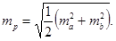
3.101. Точность элементов разбивки при выносе пунктов опорного контура с пунктов разбивочной сети строительной площадки определяется в зависимости от способа разбивки по следующим формулам.
а) Полярный способ (рис. 3а)
mβ ≤ ηmpρ/d, (21)
md ≤ η'mp,
где mβ и md - средние квадратические погрешности выноса в натуру соответственно угла β и линии d;
Рис. 3. Способы разбивки точек сети
а - полярных; б - прямоугольных координат; в - прямой угловой засечки
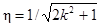 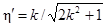
Значения η и η' берутся в зависимости от величины k из табл. 10.
Таблица 10
|
1 |
1,5 |
2 |
2,5 |
3 |
3,5 |
|
|
η |
0,58 |
0,44 |
0,33 |
0,27 |
0,23 |
0,2 |
|
η' |
0,58 |
0,65 |
0,67 |
0,68 |
0,68 |
0,09 |
б) Способ прямоугольных координат (рис. 3б)
mβ ≤ η1mρρ/d1 = η'1mρρ/d2; (22)
md1 ≤ η2mρ; md2 ≤ η'2mρ,
где 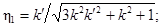 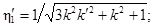
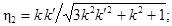 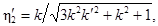
где k' = d1/d2 = md1/md2.
Значения коэффициентов η1, η'1, η2 и η'2 приведены в табл. 11.
Таблица 11
|
k' |
|||||||
|
1/6 |
1/4 |
1/2 |
1 |
2 |
3 |
4 |
|
|
Коэффициенты η1 |
|||||||
|
1 |
0,12 |
0,17 |
0,3 |
0,45 |
0,53 |
0,56 |
0,57 |
|
2 |
0,07 |
0,1 |
0,18 |
0,24 |
0,27 |
0,28 |
0,29 |
|
3 |
0,05 |
0,07 |
0,12 |
0,16 |
0,18 |
0,19 |
0,19 |
|
Коэффициенты η'1 |
|||||||
|
1 |
0,69 |
0,68 |
0,6 |
0,45 |
0,27 |
0,19 |
0,14 |
|
2 |
0,43 |
0,42 |
0,35 |
0,24 |
0,14 |
0,09 |
0,07 |
|
3 |
0,3 |
0,29 |
0,24 |
0,16 |
0,09 |
0,06 |
0,05 |
|
Коэффициенты η2 |
|||||||
|
1 |
0,12 |
0,17 |
0,30 |
0,45 |
0,53 |
0,56 |
0,57 |
|
2 |
0,15 |
0,21 |
0,35 |
0,49 |
0,55 |
0,57 |
0,57 |
|
3 |
0,16 |
0,22 |
0,27 |
0,49 |
0,55 |
0,57 |
0,57 |
|
Коэффициенты η'2 |
|||||||
|
1 |
0,69 |
0,68 |
0,60 |
0,45 |
0,27 |
0,19 |
0,14 |
|
2 |
0,86 |
0,83 |
0,71 |
0,49 |
0,27 |
0,19 |
0,14 |
|
3 |
0,91 |
0,88 |
0,73 |
0,49 |
0,28 |
0,19 |
0,14 |
в) Прямая угловая засечка (рис. 3в)
mβ1 < mpρsinγ/(1,58dsinβ2); (23)
mβ2 < mpρsinγ/(1,58dsinβ1).
3.102. После выноса пунктов опорного контура в натуру правильность геометрической формы построенного контура проверяется по формулам.
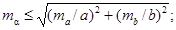
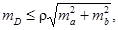
где mα и mD - средние квадратические погрешности соответственно углов поворота контура и диагонали опорного контура.
Примеры
Расчет mβ и md при полярном способе разбивки. Если mp = 5 мм, d = 30 м и k = 2, то
mβ = 0,33·5·206265"/30000 = 11,3";
md = 0,67·5 = 3,4 мм.
Расчет mβ, md1 и md2 при разбивке способом прямоугольных координат. Если mp = 5 мм, d1 = 15 м, d2 = 10 м и k = 2, то
mβ = 0,26·5·206265/15000 = 0,17·5·206265/10000 = 17,9";
md1 = η2mp = 0,53·5 = 2,7 мм;
md2 = η2mp = 0,36·5 = 1,8 мм.
Расчет mβ1 и mβ2 при разбивке прямой угловой засечкой. Если γ = 70°, β1 = 40°, β2 = 70° d = 50 м, то
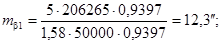
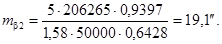
Методы перенесения сетей инженерных коммуникаций в натуру
4.1. Перенесению в натуру подлежат: места подключений и присоединений коммуникаций, углы поворота сети, колодцы, камеры, а для совмещенных прокладок дополнительно ось основной сети. Обязательному перенесению подлежат места пересечения коммуникаций с другими сетями.
4.2. Для осуществления выноса в натуру необходимо иметь:
координаты и отметки точек государственной геодезический или разбивочной сети на район трассы;
координаты точек начала и конца трассы, вершин углов ее поворота;
длины прямых участков трассы;
элементы привязок.
4.3. Выбор метода перенесения зависит от характера застройки, протяженности трассы, заданной точности и от наличия пунктов и знаков геодезической сети или разбивочной сети строительной площадки.
4.4. При графическом методе в качестве данных для перенесения трасс в натуру используются угловые и линейные величины, непосредственно полученные с топографического плана, используемого для проектирования.
4.5. В качестве твердых контуров используются углы и выступы капитальных зданий, точки вдоль фасадов зданий, положение которых определяется промерами от углов зданий или других твердых контуров Линейные промеры берутся только от контуров, снятых инструментально.
При отсутствии твердых контуров между полигонометрическими знаками вблизи трассы прокладывается теодолитный ход.
4.6. При аналитическом методе вынос в натуру осуществляется от геодезических сетей, красных линий, точек теодолитных ходов, от оси проезда или от строительной сетки.
При наличии закрепленных в натуре осей проездов или красных линий перенесение производится непосредственно от них.
4.7. Необходимые данные для перенесения трассы - длины полярных расстояний и углы поворота - вычисляют по координатам точек поворота трассы и геодезической сети.
Промежуточные точки выносятся, как створные. Дирекционные углы и длины сторон между точками поворота вычисляются по координатам, полученным графически.
Геодезические работы по перенесению подземных сетей
4.8. Геодезические работы по перенесению подземных сетей на местность начинаются с выноса точек поворота и продольной оси прокладки.
4.9. Перенесение в натуру осуществляется полярным способом с контролем от ближайшей вынесенной в натуру точки; способом линейных или створных засечек и способом перпендикуляров.
4.10. Полярный способ применяется при разбивках на открытой местности и возможности производства угловых и линейных измерений с одной точки стояния прибора.
Для измерения расстояний могут использоваться мерные ленты, металлические рулетки, оптические и нитяные дальномеры.
4.11. При выносе точек трассы, близко расположенных к пунктам геодезической или разбивочной сети, к капитальной застройке, рекомендуется способ линейных засечек. При этом длина стороны засечки не должна быть более длины мерного прибора, а число засечек должно быть не менее трех. Углы при вершине засечки должны быть в пределах от 30 до 120°.
При наличии достаточного числа точек с известными координатами может применяться способ створных засечек.
4.12. Способ перпендикуляров рационален в случае расположения трасс вдоль геодезической сети, специально проложенного теодолитного хода или створной линии между зданиями.
Длина перпендикуляра не должна превышать 4 м. При длине перпендикуляров более 4 м вынос в натуру должен контролироваться засечкой.
4.13. При построении на местности отрезков линий заданной длины, полученных по координатам или непосредственно взятых с плана, в них вводят поправки за наклон (при угле наклона более 1,5°), температуру и компарирование.
Перенесение отрезков линий в натуру должно быть осуществлено с относительной ошибкой не более 1:2000.
Ось трассы, углы поворота и места пересечения их с существующими подземными сетями и сооружениями в натуре закрепляются штырями, кольями и т.д., а их положение фиксируется параллельными выносками или створными знаками (примерная схема закрепления оси трассы трубопровода приведена в прил. 8).
4.14. Допускается закрепление положения оси прокладок с использованием обноски, устраиваемой на прямолинейных участках, устанавливаемой вдоль трассы на расстоянии 40 - 50 м одна от другой, а также в местах поворота.
4.15. Правильность выполнения разбивки трассы в натуре контролируется от красных линий, осей проездов, от существующих твердых контурных точек и от специально проложенных теодолитных ходов.
4.16. Ось трассы проектируется в траншею теодолитом или отвесом от натянутой проволоки между створными точками оси или точками поворота.
4.17. Разбивка проектного уклона дна траншеи производится с помощью постоянных и ходовых визирок, оптических нивелиров и лазерных уклонофиксаторов. Отметки постоянных визирок, прикрепленных к обноске гвоздями, выносятся нивелиром с учетом проектного уклона дна траншеи. Разность отметок постоянных визирок определяется по формуле ∆h = il, где i - проектный уклон траншеи; l - расстояние между визирками.
Высота (длина) ходовой визирки определяется как разность отметок верха постоянной визирки и дна траншеи.
Разбивка по высоте основания под укладку трубопроводов с уклонами не более 0,001 производится с помощью нивелира.
4.18. Разбивка котлована колодца включает закрепление центра колодца, установку обноски, закрепленной на расстоянии 0,6 - 0,7 м от бровки траншеи, и передачу отметок и осей на обноску.
4.19. Укладка труб по высоте при строительстве на подготовленном основании (по маякам) осуществляется по уровню, с помощью ходовых и постоянных визирок, устанавливаемых в местах будущих колодцев и поворотных точек, и с помощью нивелира и рейки.
4.20. Укладка по уровню осуществляется установкой каждой трубы в отдельности. При укладке по уровню в обязанности геодезической службы вменяются установка на дне траншеи временных реперов, выверка накладных или шланговых уровней и инструктаж бригадиров и звеньевых о способах выверки и точности установки.
4.21. При укладке труб с помощью визирок последние устанавливаются в местах будущих колодцев, в поворотных точках. На обноски (обрезные доски, прикрепленные горизонтально к двум столбам над траншеей) выносится ось трассы. Между смежными обносками по оси натягивается проволока, с которой отвесами ось проектируется на дно траншеи. Отметки для укладки труб получают от полочек, закрепляемых на обноске. Полочку закрепляют на обноске обычно на высоте, кратной 1 м от верха проектной отметки трубы.
4.22. При укладке труб по маякам геодезические работы заключаются в выносе осей трассы и отметок. При этом отметки даются по верху маяков, при устройстве которых особое внимание должно обращаться на их сохранность.
4.23. Укладка труб разрешается лишь после проверки соответствия отметок проектной документации: дна траншеи - при бесканальной прокладке; дна канала - при канальной прокладке; отметки опорных конструкций - при надземной прокладке.
4.24. Прямолинейность оси труб в горизонтальной плоскости проверяется по шнуру, теодолитом, по лазерному или световому пучку; правильность уклонов - по визиркам, нивелиром или лазерным уклонофиксатором.
4.25. Расстояния в плане от подземных инженерных сетей до зданий и сооружений и между сетями принимаются в соответствии с требованиями главы СНиП II-60-75.*
4.26. Укладка трубопроводов «змейкой» в вертикальной или горизонтальной плоскости не допускается. Отклонение трубопроводов от проектного положения должно быть в соответствии с требованиями нормативных документов.
4.27. При взаимном пересечении магистральных трубопроводов расстояние между ними в свету должно приниматься не менее 350 мм.
4.28. Для трубопроводов диаметром 1000 мм и более в зависимости от рельефа местности должна предусматриваться предварительная планировка строительной полосы.
4.29. По трассе трубопроводов следует предусматривать установку постоянных реперов на расстоянии не более 0,5 км друг от друга и на углах поворота трассы.
4.30. При устройстве сетей канализации наименьшие уклоны трубопроводов должны приниматься: для труб диаметром 150 мм - 0,008; 200 мм - 0,005.
4.31. При приемке трубопроводов и сооружений водоснабжения и канализации в эксплуатацию производится инструментальная проверка.
Приемка безнапорных трубопроводов и коллекторов сопровождается проверкой прямолинейности с соблюдением проектного положения в горизонтальной и вертикальной плоскости и инструментальной проверкой отметки лотков в колодцах. При этом отклонение отметок лотков от проектных не должно превышать ±5 мм.
При прокладке сетей газопровода правильность укладки труб проверяется нивелированием всех узловых точек и мест пересечения газопровода с подземными сооружениями.
4.32. Расстояния по вертикали в свету при пересечении подземных газопроводов всех давлений с другими подземными сооружениями принимаются в соответствии с требованиями СНиП 37-76 по табл. 12.
Таблица 12
|
Расстояние по вертикали в свету при пересечении подземного газопровода с сооружениями и коммуникациями, м |
|
|
Водопровод, канализация, водосток, телефонная канализация и т.п. |
0,15 |
|
Канал теплосети |
0,2 |
|
Электрокабель, телефонный бронированный кабель |
0,5 |
|
Электрокабель маслонаполненный 110 - 220 кВ |
1 |
4.33. Минимальная глубина заложения газопроводов в местах с усовершенствованными покрытиями (асфальтобетонными, бетонными и др.) должна быть не менее 0,8 м, а на участках без усовершенствованных дорожных покрытий не менее 0,9 м от верха дорожного покрытия до верха трубы. В местах, где предусматривается движение транспорта, глубина заложения может быть уменьшена до 0,6 м.
При прокладке двух и более газопроводов в одной траншее должны выдерживаться следующие минимальные расстояния между ними: при диаметре труб до 300 мм - не менее 0,4 м; более 300 мм - 0,5 м.
4.34. Заглубление тепловых сетей от поверхности земли или дорожного покрытия при приемке должно приниматься не менее:
до верха перекрытий каналов и тоннелей - 0,5 м;
до верха перекрытий камер - 0,3 м;
до верха оболочки бесканальной прокладки - 0,7 м.
В непроезжей части допускаются выступающие над поверхностью земли перекрытия камер и вентиляционных шахт на высоту не менее 0,4 м.
При надземной прокладке тепловых сетей на низких опорах расстояние в свету от поверхности земли до низа тепловой изоляции трубопроводов должно быть не менее 0,35 м.
Уклон силовых сетей независимо от направления движения теплоносителя и способа прокладки должен быть не менее 0,002.
4.35. Пересечение газопроводами тепловых сетей, рек, железных и автомобильных дорог, трамвайных путей и других сооружений различного назначения должно предусматриваться под прямым углом.
4.36. Минимальные расстояния в свету между строительными конструкциями непроходных каналов и поверхностью теплоизоляционной конструкции трубопроводов, между строительными конструкциями тоннелей или коллекторов и трубопроводами, а также между поверхностью теплоизоляционных конструкций смежных трубопроводов при прокладке в тоннелях, коллекторах и при надземной прокладке, принимаются в соответствии с требованиями СНиП II-36-73.
4.37. Контроль правильности укладки тепловых сетей осуществляется инструментальной проверкой расположения трубопровода в плане, а также нивелировкой всех узловых точек уложенного трубопровода и мест его пересечения с подземными сооружениями.
4.38. Электрокабели напряжением до 1000 В прокладываются на глубине 0,7 - 0,8 м, напряжением свыше 1000 В - 1 м.
При прокладке трасс в трубах их укладывают с уклоном 0,001 к ближайшему колодцу.
4.39. При строительстве кабельной канализации (телеграфные и телефонные сети) расстояние от поверхности грунта или усовершенствованного покрытия до верхнего ряда труб на вводах в колодцы должно быть не менее 0,7 м под пешеходной частью улиц, 0,8 м под проезжей частью улиц.
Величина уклона к смотровым колодцам для каждого участка должна быть не менее 3 - 4 мм на 1 м.
4.40. В процессе строительства сооружений кабельной канализации должен осуществляться пооперационный контроль за укладкой трубопроводов и установкой смотровых устройств, заключающийся в проверке глубины заложения и качества стыков труб, прямолинейности трубопровода, горизонтальности и вертикальности установки смотровых устройств.
4.41. На трассах подземных кабельных линий связи вне городской черты устанавливаются замерные столбики, фиксирующие положение трассы на местности.
4.42. При прокладке кабеля должны соблюдаться следующие требования:
глубина прокладки кабеля не должна отклоняться более чем на ±10 см от принятой в проекте;
кабели, проложенные в траншее, не должны перекрещиваться;
радиус изгиба кабеля должен быть не менее допустимого по ГОСТ или ТУ на данный тип кабеля.
Технология работ с применением лазерных приборов
4.43. Применение лазерных приборов при сооружении подземных коммуникаций наиболее эффективно при необходимости строгого соблюдения проектных уклонов и прямолинейности.
4.44. Для задания проектного направления и уклона в процессе строительства и контроля точности коммуникаций (канализация, водопровод, газопровод, магистральные трубопроводы) рекомендуется применять прибор ЛВ-5М или ПЛ-1 с комплектом приспособлений ПЛВ.
4.45. Точность геодезических разбивочных работ при строительстве объектов линейного характера с применением лазерных приборов и комплекта приспособлений ПЛВ составляет около 1 см на расстоянии 50 - 100 м.
4.46. Сооружение подземных сетей с помощью лазерных приборов может осуществляться двумя способами в зависимости от технологии строительно-монтажных работ: в подготовленной траншее между двумя предварительно вынесенными в натуру точками трассы и непосредственно за проходом экскаватора.
4.47. При первом способе на дне траншеи разбиваются и закрепляются постоянными знаками начальная и конечная точки прямолинейного участка трубопровода.
4.48. Лазерный прибор устанавливают на дне траншеи и ориентируют по оси будущего трубопровода. Для ориентирования лазерного пучка используются точки, ранее вынесенные и закрепленные на дне траншеи.
4.49. В зависимости от используемого прибора проектный уклон лазерному пучку задается либо по шкале микрометра (прибор ЛВ-5М), либо с помощью подъемных винтов по нивелирной рейке, последовательно устанавливаемой перед прибором и в конце прямолинейного участка, и фиксирующей высоту лазерного пучка над дном траншеи (прибор ПЛ-1).
4.50. В торце подготовленной к укладке секции трубопровода закрепляют контрольную марку, центр которой устанавливается строго по геометрической оси трубы, после чего трубоукладчик опускает секцию на дно траншеи. Секцию одним концом присоединяют к элементу трубопровода, уложенному ранее, а свободный конец перемещают до тех пор, пока лазерный пучок не попадет в центр контрольной марки (рис. 4). В этом положении труба закрепляется, из нее извлекается контрольная марка и устанавливается в следующую секцию [14].
Рис. 4. Укладка секций трубопровода по лазерному лучу
4.51. При втором способе на дно частично отрытой траншеи (не менее 50 м) теодолитом переносят проектную ось трубопровода и закрепляют ее через 20 м деревянными кольями. Прибор устанавливают на дне траншеи и ориентируют по проектной оси. По лазерному пучку одновременно производятся зачистка дна траншеи, подготовка бетонного основания и укладка секций трубопровода.
Трубопровод укладывают в той же последовательности, что описана в первом способе.
Рис. 5. Установка навесных контрольных марок на секции трубопровода
а - на подставке внутри трубы; б - на трубе; в - на деревянной распорке внутри трубы
Рис. 6. Консольный штатив для установки геодезических приборов
1 - металлическая плита; 2 - стойка; 3 - столик штатива; 4 - подъемные винты
4.52. Наиболее простой и удобной в работе является схема положения лазерного прибора, при которой его пучок совпадает с проектным положением оси трубопровода. Если лазерный прибор нельзя установить по оси трубопровода (диаметр трубы более 800 мм, траншея залита водой и т.д.), прибор перемещают на штативе выше или ниже оси трубы, и лазерный пучок проходит параллельно оси внутри трубы или над ней.
4.53. В соответствии с положением лазерного пучка контрольные марки могут устанавливаться внутри и сверху трубы на подставках различной конструкции (рис. 5).
4.54. Для установки лазерного прибора на дне траншеи применяется штанговый штатив (см. рис. 4), позволяющий изменять высоту прибора в диапазоне от 30 до 200 см, консольный штатив (рис. 6) и штанга с распоркой, позволяющая устанавливать прибор внутри смонтированной трубы.
4.55. Для обеспечения точности ориентирования пучка по оси трубопровода и фиксации лазерного пятна на экране марки лазерный прибор рекомендуется переставлять через 100 - 150 м. Во избежание накопления ошибок за счет рефракции необходимо исключить попадание в трубопровод выхлопных газов строительных машин.
Детальная разбивка осей
5.1. Для устройства фундаментов зданий и сооружений необходимо произвести детальную разбивку осей с закреплением их на обносках и выносках.
5.2. Обноску делают сплошную, разреженную или створную. Сплошная обноска окаймляет все сооружение. Ее применяют при устройстве монолитных фундаментов с большим объемом опалубочных работ, при сложной конфигурации опалубки, при значительном числе устанавливаемых анкерных болтов, закладных деталей, арматурных выпусков.
Разреженную или створную обноску устанавливают по основным и межсекционным осям, температурным швам на расстоянии 18 - 24 м одна от другой. Такие обноски применяют при устройстве сборных и свайных фундаментов, а также при возведении столбчатых монолитных фундаментов, расположенных на расстоянии 12 м и более один от другого.
Обноску устанавливают в 2 - 3 м от верхней бровки котлована. При котлованах глубиной 3 м и более обноску часто располагают в котловане вдоль его нижней бровки.
5.3. Детальную разбивку промежуточных осей производят двумя способами.
Первый способ - разбивка промежуточных осей по обноске. Способ в основном применяется при сплошной обноске, стороны которого устанавливают прямолинейно и параллельно соответствующим продольным и поперечным осям сооружения, а верх обрезной доски располагают на одной отметке. При сплошной обноске легко производить линейные измерения.
На построенную обноску с точек закрепления осей выносят при помощи теодолита главные, или основные оси. От вынесенных на обноску осей производят линейные измерения. Промежуточные оси на обноске по мере производства линейных измерений фиксируют карандашом и краской.
Второй способ - разбивка промежуточных осей по дну котлована с производством линейных измерений по деревянным кольям с последующим выносом осей на разреженную или створную обноску. Способ не требует соблюдения условий прямолинейности сторон обноски и параллельности ее разбивочным осям.
При этом способе линейные измерения, в основном, производят по главной продольной оси здания, положение которой определяют от вынесенных на дно котлована основных осей. По створу главной продольной оси на расстоянии длины мерного прибора и в местах прохождения промежуточных осей, которые будут выноситься на обноски, забивают деревянные колья. По кольям производят линейные измерения. Промежуточные оси на кольях фиксируют карандашом.
При закрепленных главных осях зданий, линейные измерения производят от центральной точки пересечения главных осей, которую предварительно определяют с точек закрепления главных осей.
Над точками пересечения главной оси с промежуточными, полученными в результате линейных измерений, центрируют теодолит, наводят на крайнюю, наиболее удаленную точку закрепления главной оси и откладывают угол 90° при двух положениях вертикального круга с закреплением проекции визирного луча на разреженной или створной обноске по обе стороны котлована. За окончательное положение промежуточной оси берут среднее из двух проекций.
Рис. 7. Исполнительная схема детальной разбивки осей
5.4. Линейные измерения при детальной разбивке необходимо производить 20 - 30-метровой компарированной стальной рулеткой с введением поправок за компарирование, температуру, наклон и постоянным натяжением 98 Н (10 кгс).
5.5. Вынесенные на обноску оси подписывают и закрепляют гвоздем или окраской на обноске, а также штырем под обноской.
5.6. Оси, которые будут использоваться при переносе плановой сети здания, сооружения с исходного горизонта на монтажный при возведении надземной части, закрепляют выносками - постоянными и временными знаками.
5.7. Детальная разбивка осей оформляется актом разбивки и исполнительной схемой (рис. 7).
Высотное обеспечение детальных разбивок
5.8. На строительной площадке для каждого здания закрепляют не менее двух строительных (рабочих) реперов, а для многосекционных зданий - не менее одного строительного репера на две секции. Рабочие реперы целесообразно совмещать со знаками внешней разбивочной сети здания, сооружения.
5.9. Рабочие реперы закладывают на глубину 1 - 1,2 м в виде забетонированных штырей, труб и деревянных столбов, а также стенных марок различных конструкций. Широко используют под рабочие реперы пробные сваи, а также откраску в виде горизонтальной черты на колоннах и стенах зданий.
Рабочий репер должен находиться на удобном для пользования им месте и давать возможность с одной стоянки нивелировать наибольшую площадь строительного объекта.
5.10. При котлованах глубиной более 22,5 м рабочие реперы необходимо дополнительно закладывать и в котлованах. Высотную отметку на реперы передают по въезду в котлован или с помощью компарированной рулетки, подвешенной на кронштейне, и двух нивелиров.
5.11. Передачу высотных отметок на рабочие реперы производят замкнутым ходом, опирающимся на два репера высотной основы.
5.12. Тип рабочих реперов, места их установки указываются в геодезическом разделе ППР или в ППГР.
Геодезические работы при монтаже сборных фундаментов
5.13. Между одноименными осями, закрепленными на обноске, натягивают струны (тонкая проволока, леска). От отвесов, подвешенных на струнах, линейным отмером определяют положение осей и закрепляют их на дне котлована колышками.
5.14. От осей, обозначенных на дне котлована висящими отвесами или колышками, определяют плановое положение угловых и маячных фундаментных блоков, затем струны снимают и блоки монтируют. По граням угловых и маячных блоков натягивают шнур-причалку и монтируют все промежуточные блоки (рис. 8).
5.15. Вдоль осей натягивают струны по обноске и от отвесов на струнах определяют и закрепляют откраской на фундаментных блоках местоположение граней угловых и маячных фундаментных блоков. Струны снимают и по вынесенным граням монтируют стеновые блоки. По шнурам-причалкам производят монтаж всех промежуточных стеновых блоков (рис. 9).
5.16. После монтажа фундаментных блоков, а также каждого последующего ряда блоков производят их нивелирование с целью выравнивания монтажного горизонта с помощью маяков и подстилающего бетонного слоя.
Соосность рядов укладываемых блоков, а также вертикальность их кладки проверяют при помощи отвеса.
Рис. 8. Перенос разбивочных осей на дно котлована
1 - маячные блоки; 2 - скамеечные обноски; 3 - стальные проволоки (лески); 4 - отвесы; 5 - теодолит
Рис. 9. Перенос разбивочных осей на фундаментные блоки с помощью теодолита
1 - теодолит; 2 - створный знак; 3 - обноска; 4 - рулетка; 5 - причалка; 6 - отмер от причалки; 7 - марка для фиксации осей на инвентарной обноске
5.17. Плановое положение бетонной подготовки под сборный фундамент стаканного типа определяется линейным промером от отвесов на струнах, натянутых по основным и промежуточным осям.
На внутренние стороны установленной опалубки бетонной подготовки выносят и закрепляют откраской или гвоздем отметку верха бетона, по которой и производят его выравнивание (затирку).
Если башмак сборного фундамента укладывается на плиту заводского изготовления, то ее устанавливают в плане относительно висящих на струнах отвесов, а по высоте - под нивелир на проектную отметку.
5.18. Размечают стаканы фундаментов, для чего три их стороны делят пополам, а четвертую размечают по крестообразному прямоугольному шаблону. Три стороны шаблона совмещают с рисками размеченных сторон, а по четвертой наносят риску на неразмеченной стороне стакана фундамента.
5.19. Монтаж сборных фундаментов одного из рядов ведут при помощи двух теодолитов, установленных и ориентированных по двум взаимно перпендикулярным осям. Фундамент передвигают по бетонной подготовке в двух взаимно перпендикулярных направлениях до тех пор, пока риски, нанесенные на фундаменте, не совпадут с линиями визирования теодолитов. Далее монтаж производят при помощи теодолита и рулетки. По теодолиту устанавливают фундамент относительно одной (продольной или поперечной) оси, а по другой взаимно перпендикулярной оси фундамент устанавливают по линейному отмеру, который производится от рисок ранее установленного фундамента.
Через 2 - 3 ряда установленных фундаментов производят контроль их монтажа теодолитом по двум взаимно перпендикулярным осям, закрепленным на обноске.
Геодезические работы при устройстве монолитных фундаментов
5.20. При устройстве монолитных фундаментов арматуру и опалубку в плане устанавливают в соответствии с их привязкой к осям. По осям, закрепленным на обноске, натягивают струны, подвешивают отвесы, от которых линейным отмером находят плановое положение арматуры и опалубки.
Оси, по которым воздвигают отдельные столбчатые фундаменты, предварительно разбивают, если они не закреплены на разреженной створной обноске. Разбивку производят со знаков закрепления осей теодолитом и рулеткой. Местоположение разбитых осей фиксируют штырями непосредственно на верхней бровке котлована фундамента. По штырям натягивают струну, на которую подвешивают отвесы.
5.21. Нивелированием проверяют установку арматуры по высоте, а также выносят на опалубку и закрепляют с внутренней ее стороны гвоздем или откраской отметку верха бетонирования (рис. 10).
5.22. При наличии в фундаменте анкерных блоков, арматурных выпусков и закладных деталей их установку производят по микрообноске. Для создания микрообноски на установленную и закрепленную обноску фундамента выносят продольные и поперечные разбивочные оси и закрепляют их гвоздями и откраской. По закрепленным осям на опалубке натягивают проволоку, от которой непосредственно и определяют местоположение элементов фундамента в плане. Для установки анкерных болтов рекомендуется применять шаблоны.
5.23. Установка анкерных болтов и закладных деталей по высоте производится с использованием нивелира.
5.24. Для соблюдения горизонтальности поверхности бетонирования при устройстве монолитных плит к арматуре приваривают штыри-маяки, верхние торцы которых устанавливают на отметку бетонирования. При наличии арматурных выпусков на них также выносится проектная отметка бетонирования (рис. 11).
5.25. Перед бетонированием производят исполнительную планово-высотную съемку установленной опалубки, а также элементов фундамента (анкерных болтов, арматурных выпусков, закладных деталей).
При бетонировании следят за планово-высотным положением опалубки и элементов фундамента.
Рис. 10. Высотная разбивка опалубки монолитных фундаментов
1 - рейки; 2 - нивелир; 3 - обноска; 4 - проволоки, фиксирующие оси; 5 - короб опалубки
Рис. 11. Подготовка фундамента для монтажа стальных колонн
а - до проектной отметки; б - с последующей подливкой бетона; 1 - швеллеры; 2 - проектная плоскость; 3 - анкерные болты; 4 - якорь анкерного болта; 5 - подливка бетона, выполняемая после установки колонны
5.26. При устройстве фундаментов стаканного типа опалубку стакана устанавливают так, чтобы после бетонирования дно стакана не доходило до проектной отметки на 2 - 3 см. После снятия опалубки на стенки стакана фундамента выносят нивелиром проектную отметку бетонирования и производят подливку цементным раствором до данной отметки.
Геодезические работы при устройстве свайных фундаментов
5.27. Разбивку свайного поля производят от точек пересечения осей, вынесенных теодолитом на колышки в котлован.
Теодолит последовательно центрируют над точками пересечения осей, ориентируют по створу оси и по данному направлению откладывают проектные расстояния до центров свай. Местоположение свай закрепляют металлическими штырями. Для свай, расположенных не на осях, положение центров определяют от осей способом перпендикуляров.
При кустовом расположении свай разметку их в кусте рекомендуется производить по шаблону.
5.28. Сваи перед забивкой должны быть установлены вертикально. Вертикальность проверяют по теодолиту в двух взаимно перпендикулярных плоскостях или по рейке-отвесу и контролируют в процессе забивки.
5.29. При устройстве безростверковых свайных фундаментов все сваи забивают на проектную отметку, которую контролируют с помощью нивелира или лазерного прибора.
При устройстве монолитных ростверков несколько свай забивают на проектную отметку. Данные сваи служат своеобразными визирками для забивки остальных свай на отметку, близкую к проектной.
5.30. По окончании забивки свай производят их нивелировку до срубки и, зная длину свай, определяют отметку погружения свай. Определение отметки погружения свай оформляют исполнительной схемой.
5.31. Для устройства монолитного ростверка на сваи выносят отметку срубки. После срубки свай выполняют планово-высотную съемку свайного поля, и на сваи, находящиеся на пересечении осей, выносят разбивочные оси. Относительно вынесенных осей устанавливают опалубку и укладывают арматуру. На внутреннюю сторону установленной опалубки выносят отметку бетонирования (верх ростверка), которую закрепляют откраской или гвоздями.
5.32. При устройстве безростверковых свайных фундаментов после забивки свай на них выносят отметку низа оголовков. По данной отметке крепятся поддерживающие оголовки хомуты. Установка оголовков на сваи в плане производится с учетом планового смещения свай.
Вынос осей на фундамент
5.33. При возведении фундамента главные (основные) и промежуточные оси, закрепленные на местности и на обноске, сразу же выносят на фундаменты. Закрепление осей на фундаменте осуществляют откраской.
5.34. Оси на фундамент выносят при помощи теодолита, для чего он должен быть установлен в створе данной оси и ориентирован по соответствующим знакам ее закрепления.
5.35. Контроль выноса осей на фундамент необходимо осуществить линейным промером между рисками.
Геодезические работы при монтаже подвальной части зданий
5.36. Геодезическое обеспечение при возведении подвальной части из крупных блоков такое же, как и при монтаже блоков ленточных сборных фундаментов.
По окончании монтажа блоков выполняют их планово-высотную съемку. Данные высотной съемки используют для выравнивания горизонта перекрытия подземной части подстилающим раствором.
5.37. При устройстве цокольной части крупнопанельных зданий на фундаменте производят детальную разбивку осей.
Монтажные риски под внутренние стеновые панели выносят со смещением от осей, равным половине толщины стеновых панелей, и окрашивают на перекрытии по концам устанавливаемой панели. Монтажные риски под наружные стеновые панели наносят со смещением от осей, равным величине привязки их внутренних граней к осям, по которым они устанавливаются. При разбивке монтажных рисок используется марка (рис. 12).
Стеновые панели устанавливают на маяки. Толщина маяка определяется как разность отметок опорной поверхности под стеновую панель и монтажного горизонта. Монтажный горизонт определяют из нивелировки опорной поверхности фундамента по концам устанавливаемых панелей. Он равен отметке наивысшей точки фундамента, увеличенной на толщину растворного шва.
Установка стеновых панелей в вертикальное положение производится по рейке-отвесу.
После перекрытия цокольного этажа производят его планово-высотную съемку.
Рис. 12. Марка для нанесения рисок
1 - опоры для установки марки; 2 - марка со штрихами; 3 - стержень марки; 4 - закрепительный винт; 5 - стойка
5.38. При монтаже колонн подвальной части здания на каждом стакане фундамента, с четырех сторон, выносят и закрепляют краской разбивочные оси. Все колонны так же размечают. В верхней части колонны размечают две взаимно перпендикулярные плоскости колонны, на которые наносят риски их геометрических осей. Нижняя часть колонны размечается с четырех сторон, риски геометрических осей колонны даются на расстоянии от основания колонны, равном глубине стакана фундамента. При установке колонны в стакан фундамента она передвигается до тех пор, пока риски на колонне не будут совмещены с рисками на стакане фундамента. Контроль за совмещением рисок необходимо производить по прямоугольному шаблону. Колонна в вертикальное положение устанавливается при помощи одного или двух теодолитов, располагаемых в двух взаимно перпендикулярных плоскостях, проходящих по разбивочным осям. При установке колонны в вертикальное положение верхняя и нижняя разметочные риски геометрических осей колонны должны находиться в одной вертикальной плоскости, создаваемой теодолитом.
5.39. При выполнении подвальной части в монолитном исполнении на фундаментной плите (монолитном ростверке) производят разметку откраской мест установки опалубки. Разметку производят от осей, закрепленных на фундаменте, путем отложения проектных расстояний.
При скользящей опалубке проверяют геометрические параметры коробок опалубки, конусность щитов опалубки, а также горизонтальность рабочего пола опалубки. Опалубку устанавливают по маякам с учетом отметки самой высокой точки фундаментной плиты.
Геометрические параметры (прямоугольность, размеры) коробов опалубки проверяют теодолитом и рулеткой, конусность - при помощи отвеса, а горизонтальность рабочего пола - нивелированием.
После установки опалубки производят планово-высотную съемку и оформляют исполнительную схему.
Для высотного контроля за устройством проемов, технологических отверстий, установкой закладных деталей между щитами скользящей опалубки вертикально устанавливают не менее трех деревянных реек, которые крепят к арматуре. Рейки изготовляют из брусьев сечением 30 × 30 мм и длиной 3 м. На рейки нивелиром наносят одну и ту же отметку, от которой рейки размечаются на метры и сантиметры в соответствии с проектными отметками. Рейки систематически наращивают по мере движения опалубки, в результате на монтажном горизонте всегда имеются высотные реперы.
Местоположение проемов, технологических отверстий, закладных деталей определяют от граней щитов коробок опалубки и закрепляют яркой краской на рабочем полу опалубки.
Контроль за вертикальностью движения опалубки в подвальной части осуществляют теодолитом методом наклонного проектирования.
5.40. Высотная съемка плит перекрытий подвальной (цокольной) части здания производится по четырем углам каждой плиты, при монолитном перекрытии - по углам и в центре перекрываемой монолитной шахты.
6.1. Внутренняя разбивочная сеть здания (сооружения) создается в виде сети осевых и высотных знаков на здании (сооружении) и служит для производства детальных разбивочных работ на монтажных горизонтах, а также для исполнительных съемок.
Вид, схема, способ закрепления знаков внутренней разбивочной сети здания (сооружения) указываются в ППГР или геодезической части ППР.
6.2. Точность построения внутренней разбивочной сети здания (сооружения) следует принимать в соответствии с требованиями СНиП 3.01.03-84 (табл. 2).
6.3. При строительстве сравнительно простых по геометрической форме промышленных и гражданских зданий (сооружений) такие сети строят в виде четырехугольников, рядов из ромбов, центральных систем. Измерения в них выполняются методом трилатерации или линейно-угловым.
6.4. При строительстве уникальных зданий и сложных сооружений развивают специальные высокоточные радиально-кольцевые и линейные сети (рис. 13). Методика построения таких сетей обосновывается в ППГР.
Рис. 13. Схемы внутренних разбивочных сетей зданий и сооружений
а - радиально-кольцевые; б - кольцевые; в - линейные
6.5. В линейных и кольцевых сетях взаимное поперечное положение смежных пунктов определяют с высокой точностью. С увеличением числа треугольников точность определения пунктов понижается. Для повышения точности взаимного поперечного положения удаленных пунктов дополнительно измеряют углы, создавая линейно-угловые сети.
6.6. Построение плановой внутренней разбивочной сети здания (сооружения) начинается с перенесения разбивочных осей на исходный горизонт. Исходным горизонтом считается плоскость, проходящая через опорные площадки последних по высоте несущих конструкций подземной части перекрытия подвала, бетонная подготовка или блоки фундамента. Выбор точек плановой разбивочной сети здания, сооружения, принимаемых в качестве исходных, для передачи на монтажные горизонты, определяется возможностью вертикального проектирования.
Число опорных точек, передаваемых на монтажные горизонты, должно быть не менее трех.
При переносе осей методом вертикального проектирования точки допускается закреплять вне корпуса здания и проектировать их по вертикали на площадки (палетки), укрепленные на выносных кронштейнах.
При наклонном проектировании осей на монтажные горизонты разбивочная сеть создается на исходном горизонте таким образом, чтобы точки пересечения продольных и поперечных осей располагались как можно ближе к внешним габаритам здания.
6.7. Базисные фигуры разбивочных сетей строятся на исходном горизонте так, что по своей форме повторяют конфигурацию здания и состоят, в основном, из типовых правильных геометрических фигур, стороны которых располагают параллельно осям здания так, чтобы разбивка осей выполнялась непосредственно линейными промерами вдоль сторон базисной фигуры или методом построения створов.
6.8. Построение плановой разбивочной сети на исходном горизонте выполняется в следующем порядке:
построение основных (угловых) точек плановой сети;
проложение основного хода по исходным точкам (или измерение сторон и диагоналей при трилатерационных способах);
редуцирование основных точек плановой разбивочной сети;
контрольные измерения;
построение промежуточных точек.
6.9. Взаимное положение вершин базисной фигуры определяется в результате выполнения измерений. Длины сторон базисной фигуры измеряются компарированной рулеткой с миллиметровыми делениями. Угловые измерения выполняются оптическими теодолитами. Длина сторон базисной фигуры обычно не превышает 50 м.
Рис. 14. Редуцирование точек разбивочной сети здания на исходном горизонте
а - проектные данные; б - схема введения редукции
Рис. 15. Откраска осей (а, б) и отметок (в) на конструкциях зданий и сооружений
1 - карандашная риска
6.10. На прямоугольных фундаментах разбивочную плановую сеть удобнее строить в виде прямоугольных четырехугольников, вершины которых находятся на пересечениях параллельно смещенных основных осей.
6.11. Для редуцирования точек базисной фигуры в проектное положение прокладывается полигонометрический ход или координаты точек определяются методом микротрилатерации. Для упрощения вычислений применяют условную систему координат, принимая координаты одной из точек сети за начальные, а направление осей координат параллельное продольной и поперечной осям.
6.12. В полигонометрических ходах измерение углов и линий выполняется в зависимости от класса точности построения базисной сети. Для получения значений редукций вычисляются теоретические и фактические координаты точек сети.
6.13. Для введения редукций составляются редукционные листы на миллиметровой бумаге, содержащие номер точки, фактическое положение точки, теоретическое положение точки, направление не менее чем на два пункта сети, линейное и угловое значение редукций.
6.14. Редукции вводят в натуру, совмещая изображение действительного положения точки на редукционном листе с положением точки в натуре. Далее редукционный лист ориентируют по одному направлению, а контролируют ориентировку по другим направлениям.
Теоретическое положение точки с редукционного листа переносят на пластины. По линейному и угловому значениям редукции контролируют положение точки на исходном горизонте и окончательно закрепляют ее (рис. 14).
6.15. По отредуцированным точкам сети прокладывается контрольный полигонометрический ход, точность которого такая же, как и основного полигонометрического хода.
6.16. По результатам измерений контрольного хода вычисляются окончательные значения координат точек плановой разбивочной сети на исходном горизонте.
Расхождение проектных координат и полученных по данным контрольного хода δx,y не должно превышать величины
δx,y = S/2T,
где S - расстояние по оси между наиболее удаленными точками; Т - знаменатель предельной относительной погрешности построения сети.
6.17. При строительстве зданий башенного типа, когда стороны базисной фигуры на исходном горизонте не превышают длины мерного прибора, и возникают трудности в измерении горизонтальных углов из-за коротких линий, рекомендуется создавать и редуцировать базисную сеть на исходном горизонте методом трилатерации, т.е. измерять все линии и диагонали в базисной сети.
6.18. Окончательно определенные точки внутренней разбивочной сети на исходном горизонте надежно закрепляются и маркируются несмываемой краской (рис. 15).
Передача плановой и высотной сети здания на монтажный горизонт
6.19. Передачу плановой сети с исходного горизонта на монтажный производят методом наклонного проектирования теодолитом при возведении зданий малой и средней этажности, а также при наличии больших свободных территорий в границах строительной площадки.
6.20. Среднюю квадратическую погрешность проектирования точки плановой сети на монтажный горизонт mпр при двух положениях вертикального круга теодолита вычисляют по формуле
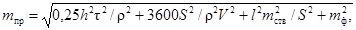
где h - высота, на которую проектируется точка; S - расстояние от теодолита до проектируемой точки; τ - цена деления цилиндрического уровня при горизонтальном круге теодолита; l - отклонение проектируемой точки от вертикали, проходящей через точку плановой основы; V - увеличение зрительной трубы теодолита; тств, mф - средние квадратические погрешности установки теодолита в створ и фиксации проектируемой точки на монтажном горизонте; ρ = 206265".
Рис. 16. Ловушка, схема ее установки
1 - ловушка; 2 - труба
6.21. Передачу плановой сети с исходного горизонта на монтажный в условиях стесненной строительной площадки, а также при возведении зданий и сооружений повышенной этажности и высотных производят методом вертикального проектирования.
Для передачи точек плановой сети на монтажный горизонт методом вертикального проектирования, если они располагаются внутри здания, необходимо иметь отверстия в плитах перекрытия, расположенные над точками плановой основы.
Проектирование выполняют приборами вертикального проектирования (PZL, ПОВП, ОЦП, ЛЗЦ), а также лазерными геодезическими приборами.
Над приборами вертикального проектирования при их расположении внутри здания, сооружения для предохранения их от строительного мусора устанавливают ловушку над первым от прибора отверстием (рис. 16). При расположении приборов вне контура здания над местами их установки оборудуются защитные навесы.
Передачу проекции точки плановой основы с исходного горизонта на монтажный производят путем отсчитывания по палетке, установленной на монтажном горизонте.
Палетка представляет собой координатную сетку, нанесенную на кальку и наклеенную на органическое стекло разграфкой вниз.
Проектирование точки выполняют при четырех положениях прибора: 0°, 90°, 180° и 270°. Найденное из четырех отсчетов положение плановой точки фиксируют на палетке и закрепляют створными рисками на перекрытии.
Среднюю квадратическую погрешность положения спроектированной точки mпр можно вычислить по формуле
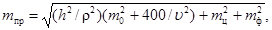
где h - превышение между исходным и монтажным горизонтами; υ - увеличение зрительной трубы; m0 - погрешность приведения визирной оси прибора в отвесное положение; mц - погрешность центрирования прибора над проектируемой точкой; mф - погрешность фиксации точки на палетке.
Погрешность приведения визирной оси в отвесное положение для приборов с компенсаторами берут из паспорта прибора, для приборов с цилиндрическим уровнем вычисляют по формуле m0 = 0,5τ, где τ - цена деления уровня.
Точность передачи точек плановой основы контролируют путем сравнения измеренного расстояния между полученными точками на монтажном горизонте Sм с расстоянием между этими же точками на исходном горизонте Sи. Контрольные измерения должны быть выполнены с той же точностью, что и разбивка плановой основы на исходном горизонте. Допустимое расхождение ∆ε между расстояниями Sм и Sи определяют по формуле
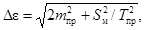
где mпр - средняя квадратическая погрешность передачи точки плановой основы на монтажный горизонт; 1/Tпр - относительная средняя квадратическая погрешность разбивки осей на исходном горизонте [15].
При недопустимом расхождении проектирование точек повторяют.
6.22. Перенесение осей на монтажный горизонт с помощью лазерного прибора производится в такой последовательности:
прибор приближенно устанавливают над знаком и приводят его в рабочее положение;
направляют лазерный пучок прибора в «надир» и с помощью центрировочного столика наводят этот пучок на центр знака;
переключают пентапризму прибора и направляют лазерный пучок в «зенит», в этот момент лазерный пучок попадает на экран мишени, закрепленной на монтажном горизонте. Центр лазерного пятна на экране марки есть проекция центра знака на монтажном горизонте.
Для повышения точности перенесения осей и исключения ошибок за наклон лазерного пучка проектирование выполняют четырьмя приемами с перестановкой прибора на 90°.
Точность вертикального проектирования т лазерным геодезическим прибором с визуальной регистрацией пятна, вычисляется по формуле:
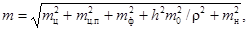
где mц - погрешность центрирования прибора; mц.п - погрешность определения центра пятна; mф - погрешность фиксации центра пятна на мишени; m0 - погрешность приведения лазерного пучка в отвесное положение; mн - погрешность наклона оси вращения прибора.
Например, при проектировании точки на высоту 50 м лазерным прибором ПИЛ-1 средняя квадратическая погрешность равна 3,9 мм.
6.23. Отметки на монтажный горизонт следует передавать только от марок и реперов высотной основы, заложенной на исходном горизонте.
На монтажном горизонте должно быть не менее двух рабочих реперов. Рабочими реперами служат закладные детали в смонтированных конструкциях, монтажные петли плит перекрытий, дюбели, горизонтальные открашенные риски на арматуре, конструкциях (рис. 17).
6.24. При перенесении отметок с исходного горизонта на монтажный отметки исходного горизонта принимаются стабильными, независимо от осадок основания. Перенесение отметок осуществляется или непосредственным измерением по вертикально установленным конструкциям от репера на исходном горизонте до монтажного горизонта, или методом геометрического нивелирования с помощью двух нивелиров и подвешенной рулетки (рис. 18).
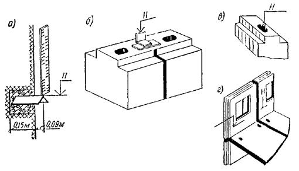
Рис. 17. Знаки закрепления высотной разбивочной сети
а - стенной репер в виде угольника; б - металлическая плашка; в - монтажная петля; г - откраска на панели
Рис. 18. Передача отметок на монтажный горизонт
Отметку рабочего репера на монтажном горизонте Hb определяют по формуле
Hb = Ha + a + (c2 - c1) - b, (30)
где Ha - отметка репера на исходном горизонте; a - отсчет по рейке, установленной на репере исходного горизонта; c2 - отсчет по рулетке на монтажном горизонте; c1 - отсчет по рулетке на исходном горизонте; b - отсчет по рейке, установленной на репере монтажного горизонта.
При подсчете отметки репера на монтажном горизонте необходимо учитывать поправки за компарирование и температуру рулетки при измерении.
6.25. Для передачи отметок на монтажные горизонты может быть использован лазерный прибор ПИЛ-1 с фотоприемником и стальной рулеткой, подвешенной к кронштейну. На монтажном горизонте измерения производят по рулетке визуально и по фотоприемнику, укрепленному на специальной рейке, установленной на репере.
На каждой станции измерения производятся при двух горизонтах прибора ПИЛ-1.
В отсчеты, сделанные по рулетке, вводят поправки за компарирование, растяжение и температуру.
Поправка за растяжение рулетки от груза, подвешенного к ней, ∆1 определяется как
∆1 = Ql/(Ef),
где Q - масса груза; l - длина рулетки; E - модуль упругости (для стали E = 2·106 кг/см2); f - площадь поперечного сечения рулетки см2.
Поправка за температуру ∆t определяется из выражения:
∆t = α(t - t0)l,
где α - коэффициент термического расширения рулетки (для стали α = 0,0000125); t - температура рулетки в процессе измерений; t0 - температура компарирования.
Температуру t определяют на первой и второй станциях и за окончательное ее значение принимают среднее.
Средняя квадратическая погрешность определения превышения между исходным и монтажным горизонтом mh включает погрешность определения превышения на исходном mh1 и монтажном mh2 горизонтах, а также погрешность mt определения температуры рулетки
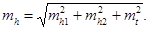
Например, при перенесении отметки лазерным прибором ПИЛ-1 на высоту 50 м средняя квадратическая погрешность равна 2,8 мм.
Уравнивание внутренней разбивочной сети здания (сооружения)
6.26. Уравнивание внутренней разбивочной сети здания (сооружения) на исходном горизонте выполняется любым из способов, изложенных в разд. 3.
6.27. Уравнивание разбивочной сети на исходном горизонте необходимо для получения наиболее надежных значений параметров сети и приведения ее геометрической формы к проектному очертанию.
6.28. Проектирование точек внутренней разбивочной сети здания с исходного на монтажные горизонты приводит к смещению точек базисной фигуры, поэтому на монтажных горизонтах выполняют повторные измерения. В этой ситуации возможны три случая:
отклонения всех измеренных элементов от соответствующих измерений, выполненных на исходном горизонте, не выходят за пределы погрешностей измерений;
отклонения измеренных элементов выходят за пределы погрешностей измерений, но остаются в границах совместного действия погрешностей измерений и погрешностей проектирования;
хотя бы одно измерение отличается от измерения, выполненного на исходном горизонте, на величину, выходящую за пределы погрешностей измерений и проектирования.
В первом случае рекомендуется оставить точки базисной фигуры на монтажном горизонте без изменения; во втором - выполнить уравнивание измерений на монтажном горизонте и редуцировать фигуру до проектной; в третьем случае необходимо повторить проектирование с исходного горизонта.
6.29. При уравнивании внутренней разбивочной сети зданий на монтажных горизонтах рекомендуются алгоритмы уравнивания свободных геодезических сетей при условии, что в сети нет абсолютно твердых пунктов, сторон и направлений [11, 16, 17]. При этом за неизменные элементы принимаются координаты центра тяжести фигуры и ее средний дирекционный угол. Решение (в данном случае редукционные поправки в координаты точек базисной фигуры) является статистически оптимальным.
6.30. Рекомендуется и упрощенный вариант такого уравнивания, когда сеть уравнивают, как свободную в обычном смысле, с одним твердым пунктом и одним твердым направлением, а затем осуществляют разворот и параллельный ее сдвиг. При этом вначале вычисляют угол разворота δα:
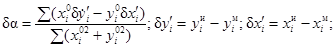
где хiи, yiи, хiм, yiм - координаты точек базисной фигуры на исходном и монтажном горизонтах; x0i, y0i - центральные координаты точек базисной фигуры, определяемые через координаты центра тяжести ее по формулам
x0 = Σxiи/n; y = Σyiи/n
x0i = хiм - х0; y0i = yiи - y0, (33)
где n - число точек базисной фигуры.
После исправления дирекционных углов сторон фигуры на угол δα
вычисляют новые
координаты хмi(н); yмi(н) и параметры сдвига 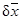
. (34)
Окончательные координаты xi, yi точек базисной фигуры на монтажном горизонте и элементы редукции rxi; ryi вычисляют по формулам:
xi = хмi(н) - ; yi = yмi(н) - ; (35)
rxi = хiи - xi = - δxi; ryi = yiи - yi = - δyi. (36)
Средняя квадратическая величина редукции mr, вычисляемая как
(37)
по существу, является характеристикой точности переноса точек базисной фигуры на монтажный горизонт. С ее помощью определяют и средние квадратические погрешности параметров δα, и
(38)
Рис. 19. Схема внутренней разбивочной сети на монтажном горизонте
Пример. При строительстве уникального сооружения на монтажном горизонте проведено уравнивание геодезического четырехугольника трилатерации, в котором стороны измерены с предельной относительной ошибкой 1:25000, а проектирование точек с исходного горизонта проведено со средней квадратической погрешностью mn = 1 мм. Значения уравненных длин сторон, а также координаты точек и дирекционные углы, вычисленные при условии, что координаты точки 1 и дирекционный угол стороны 1 - 4 являются твердыми, приведены на схеме сети (рис. 19).
На исходном горизонте точки сети имеют координаты:
xи1 = yи1 = yи2 = xи2 = 0,0000 м; xи2 = xи3 = 18,000 м; yи3 = yи4 = 48,000. При этих данных координаты центра тяжести фигуры x0 = 9,000 и y0 = 24,000.
Вычисление параметров δα, и приведено в табл. 13 и 14.
Таблица 13
|
хiм, м |
yiм, м |
δy'i, м |
δх'i, м |
х0i, м |
y0i, м |
х0iδy'i |
y0iδх'i |
|
|
1 |
0 |
0 |
0 |
0 |
-9,0000 |
-24,0000 |
0 |
0 |
|
2 |
18,0012 |
9,0025 |
0,0025 |
0,0012 |
9,0000 |
-24,0000 |
0,0225 |
-0,0288 |
|
3 |
18,0009 |
48,0032 |
0,0032 |
0,0009 |
9,0000 |
24,0000 |
0,0288 |
0,0216 |
|
4 |
0 |
48,0014 |
0,0014 |
0 |
-9,0000 |
24,0000 |
-0,0120 |
0 |
|
Σ(x0)2 = 324 Σ(y0)2 = 2304 Σ = 0,0387 - 0,0071 δα = 3,6" |
||||||||
Максимальное отклонение значений rx и ry от тех же величин, полученных из строгого уравнения (11), не превышает 0,01 мм, что говорит о достаточной точности приближенного способа.
Детальные разбивочные работы
6.31. Детальные разбивочные работы на исходном и монтажном горизонтах заключаются в нанесении разбивочных осей, монтажных рисок на смонтированные опорные поверхности конструкций, в определении отметок опорных поверхностей.
Таблица 14
|
S, м |
σиспр |
∆x, м |
∆y, м |
xмi(н), м |
yмi(н), м |
δх, мм |
δy, мм |
rx, мм |
ry, мм |
|
|
0 |
0 |
0 |
0 |
+0,94 |
+ 1,61 |
|||||
|
1 |
18,0012 |
0°00'25,0" |
18,00120 |
0,00218 |
18,00120 |
0,00218 |
1,20 |
2,18 |
-0,26 |
-0,57 |
|
2 |
48,0007 |
89°59'57,7" |
0,00054 |
48,00070 |
18,00174 |
48,00288 |
1,74 |
2,88 |
-0,80 |
-1,27 |
|
3 |
18,0009 |
180°00'17,0" |
-18,00090 |
-0,00148 |
0,00084 |
48,00140 |
0,84 |
1,40 |
+0,10 |
+0,21 |
|
4 |
48,0014 |
269°59'56,4" |
-0,00084 |
-48,00140 |
||||||
|
1 |
0 |
0 |
||||||||
|
Σ +0,02 -0,02 ΣS = 234,5280
|
||||||||||
Под каждую стеновую панель в крупнопанельном строительстве дается не менее двух монтажных рисок и двух отметок для расчета толщины маяков. Для контроля установки панелей в плане относительно осей и облегчения процесса их плановой съемки одновременно с монтажными рисками выносят контрольные риски. Контрольные риски параллельны монтажным и даются на расстоянии 100 мм от них.
Под каждую колонну многоярусного каркаса выносят на оголовок ранее смонтированной колонны риски закрепления осей со всех четырех сторон оголовка, а также делают отметку оголовка. При применении групповых кондукторов для монтажа колонн необходимо разбить и закрепить на оголовках колонн предшествующего яруса только среднюю продольную ось и одну поперечную ось.
При монтаже колонн одноэтажных промышленных зданий или неразрезных колонн на всю высоту здания на стаканы фундамента выносит разбивочные оси со всех его четырех сторон.
При возведении надземной части зданий, сооружений в кирпичном исполнении на плиты перекрытий выносят и закрепляют рисками внутренние грани стен в местах пересечения осей.
Для возведения монолитных зданий и сооружений в скользящей опалубке детальную разбивку выполняют только перед установкой опалубки в проектное положение на фундаменте.
Для возведения монолитных зданий и сооружений в объемно-переставной и крупноблочной опалубке детальную разбивку производят на каждом монтажном горизонте. Выносят риски для установки элементов опалубки и определяют высотные отметки опорных поверхностей для расчета маяков.
6.32. Детальные разбивочные работы выполняют от переданной на монтажный горизонт плановой сети с помощью теодолита и линейных промеров рулеткой.
Определение отметок опорных плоскостей, а также вынос проектных отметок на возводимые конструкции осуществляют нивелированием.
6.33. Для выполнения детальных разбивочных работ на монтажном горизонте могут быть использованы лазерная приставка ПЛ-1, консольный штатив, ориентирная марка и разбивочная марка.
Лазерный прибор устанавливается на консольном штативе и центрируется над одной из точек, закрепляющей разбивочную ось. Ориентирная марка центрируется над другой точкой, закрепляющей эту ось. Прибор устанавливается по высоте и ориентируется в пространстве таким образом, чтобы лазерный пучок, выходящий из объектива коллиматора прибора, попадал точно на центр ориентирной марки. Предварительное наведение прибора осуществляется от руки, а точное - с помощью элевационного и наводящего винтов. После ориентирования прибора приступают к разбивочным работам.
6.34. Разбивочные работы заключаются в фиксации осей на строительных конструкциях и выполняются с помощью разбивочной марки. По створу, заданному лазерным пучком, от точки, закрепляющей разбивочную ось, рулеткой откладывают проектное расстояние и в этом месте устанавливают разбивочную марку таким образом, чтобы лазерный пучок попадал в центр ее экрана. Подставка марки выполнена в виде уголка, вершина которого расположена на одной оси с центром экрана марки.
Одна из граней уголка расположена в одной плоскости с прямой, проходящей через центр экрана марки, а другая - строго перпендикулярна первой. Такая конструкция разбивочной марки позволяет фиксировать оси, расположенные перпендикулярно по отношению одна к другой. Фиксацию осей производят на монтажном горизонте по граням подставки разбивочной марки в момент совмещения центра лазерного пучка с центром ее экрана.
6.35. На точность детального построения разбивочной оси с помощью лазерной приставки ПЛ-1 оказывают влияние погрешности центрирования прибора m0 и редукции (центрирования) экрана ориентирной марки mp, наведения лазерного пучка на экран ориентирной марки mн.о, введения экрана разбивочной марки в створ лазерного пучка mн.р, перефокусировки лазерного пучка mф и фиксации оси лазерного пучка на монтажном горизонте mфик.
(39)
Например, при длине створа 100 м и расстоянии до разбивочной марки 96 м средняя квадратическая погрешность положения риски (оси) будет равна 3,3 мм.
Геодезические работы при возведении конструкций надземной части зданий и сооружений
6.36. Монтируемые строительные конструкции в нижнем сечении устанавливают по соответствующим рискам, вынесенным на опорную поверхность перекрытия, оголовки колонн или стаканы фундаментов.
В вертикальное положение конструкции устанавливают при помощи реек-отвесов (стеновые панели) или теодолитов (колонны).
При монтаже колонн при помощи группового кондуктора предварительно проверяют его геометрические параметры, а также производят по теодолиту установку кондуктора по разбивочным осям.
Общие положения
7.1. Процесс возведения всех конструкций здания или сооружения сопровождается контрольными геодезическими измерениями.
Геодезический контроль включает определение действительного планового, высотного и относительно вертикали положений конструкций как на стадии временного закрепления конструкций (операционный контроль), так и после окончательного их закрепления (приемочный контроль).
Геодезической основой контрольных измерений при установке конструкций в проектное положение являются знаки разбивочной сети здания (сооружения), разбивочные оси и линии, им параллельные, установочные риски на боковых гранях конструкций, реперы, марки и маяки.
7.2. Плановым геодезическим контролем проверяется фактическое положение продольных и поперечных осей или граней конструкций относительно разбивочных осей или линий, им параллельных.
Высотным геодезическим контролем проверяется положение опорных плоскостей конструкций здания или сооружения по высоте.
Геодезическим контролем за вертикальностью проверяется положение монтируемых конструкций относительно вертикальной или наклонной плоскости.
7.3. Геодезический контроль, выполняемый в процессе строительства, оформляется геодезической документацией, в которую входят: исполнительные геодезические схемы, чертежи, профили, разрезы и т.д.; журналы геодезического контроля, акты геодезической проверки, полевые журналы.
7.4. Геодезический контроль точности геометрических параметров зданий (сооружений) производят:
при освоении новых технологий монтажа конструкций или серий зданий (сооружений);
при введении статистических методов определения уровня качества работы участка (потока), бригады, звена;
по требованию арбитражных органов, а также администрации управления строительством или вышестоящих органов. Во всех остальных случаях контроль точности выполнения строительно-монтажных работ должен входить в технологический процесс производства.
7.5. Не реже одного раза в месяц правильность, своевременность и достоверность контроля должны быть освидетельствованы ответственным исполнителем геодезических работ с письменным подтверждением его производства, которое должно фиксироваться в журналах, актах, служебных докладных записках или иных формах, утвержденных в данной строительной организации.
7.6. Конечным результатом контроля точности должна быть информация о качестве строительно-монтажных работ, после анализа которой могут быть разработаны мероприятия для оценки и регулирования правильности работы и точности технологических процессов.
7.7. К началу работ по контролю точности должен быть уточнен перечень контролируемых параметров, применяемый метод контроля, план контроля, график и порядок его проведения, измерительные приборы, инструменты, схемы измерений. Эти вопросы, как правило, отражаются в ППГР.
7.8. Геодезический контроль точности должен вестись, как правило, на основе стандартов предприятий, карт, ведомостей контроля и других технологических документов, устанавливающих методы и схемы измерений, правила сбора, хранения, обработки и использования информации о результатах контроля.
7.9. Контроль точности следует выполнять преимущественно выборочный. Сплошной контроль выполняют при ограниченных объемах измерений, при внедрении новых технологий контроля и при решении нестандартных инженерных задач.
7.10. Правила назначения контроля точности геометрических размеров конкретных видов измерений должны соответствовать требованиям, приведенным в ГОСТ 21616-79.
7.11. При контроле точности геодезических построений: осей, отметок и т.п. ориентиров выборку образуют, как правило, из результатов измерений, количество которых n = 5 - 10; контроль точности изготовления поставляемых на монтаж изделий осуществляют выборками малого объема n ≥ 40 единиц контроля. При контроле точности монтажа предпочтение следует отдавать представительной выборке n ≥ 240.
7.12. Средняя квадратическая погрешность измерений т и допустимое отклонение контролируемого параметра δ находятся в следующей зависимости
m ≤ 0,2δ. (40)
При этом цена наименьшего деления шкалы или отсчетного устройства средств измерений должна быть не более 0,1 от допуска контролируемого параметра.
7.13. Исходной документацией для выполнения контроля точности строительно-монтажных работ являются схемы размещения знаков закрепления осей или их створов, планы разбивочных ориентиров на монтажных горизонтах, а также чертежи конструктивных элементов с привязкой их к координатным осям.
Если оси элементов сборных конструкций расположены таким образом, что их привязка от внешних координационных осей (плоскостей) элементов отлична от нуля, то контролю подлежат наружные грани, торцы, плоскости этих элементов.
7.14. Следует контролировать точность только тех элементов, узлов и конструкций, от положения которых зависят их несущие и ограждающие способности, а также точность монтажа (укладки) на последующих этапах работы.
7.15. Действительное положение элементов узлов и конструкций в плане, по высоте, их вертикальность, соосность, горизонтальность, уклон, совмещение плоскостей, размеры швов, зазоров или уступов, положение закладных элементов, отверстий, ниш или штраб должны определяться на всех этапах геодезистами строительных организаций или соответствующими специалистами.
При контроле сопоставляются измеренные размеры с размерами и отметками, указанными на чертежах, и величинами допусков, установленных в строительных нормах и правилах или проектах.
7.16. Геодезический контроль положения конструкций зданий и сооружений в плане осуществляют, как правило, непосредственными измерениями расстояний между осями, установочными или монтажными рисками, а также гранями (плоскостями) монтируемых деталей, применяя эталонированные мерные приборы или специальные шаблоны.
7.17. Контроль точности производства земляных работ при благоустройстве, вертикальной планировке, устройстве корыт под полотно дорог, траншей, котлованов, насыпей и т.п. следует осуществлять как в плане, так и по высоте.
Объемы контроля в плане принимают не менее 10 % от числа точек, выносимых при разбивке возводимого сооружения (вершин квадратов картограммы, габаритов котлованов, углов поворота траншей и т.п.).
Если возникает необходимость контроля земляных оснований под фундаменты, зачищаемых вручную, то применяют сплошной контроль.
Контроль точности высотного положения земляных работ производят геометрическим (рис. 20) или тригонометрическим нивелированием.
7.18. Контроль точности устройства фундаментов следует производить в плановом (рис. 21) и высотном положениях.
В плановом положении проверяют расстояния между осями (фундаментами), места пересечения несущих стен, оснований закладных деталей и анкерных болтов и контролируют не менее 5 % от общего объема устанавливаемых фундаментов по данной захватке (очереди) работ.
Рис. 20. Контроль после зачистки оснований для фундаментов
1 - нивелир; 2 - визирный луч; 3 - рейка; 4 - контролируемые точки
Рис. 21. Контроль укладки фундаментов в плане
1 - осевая риска; 2 - измерение между осями рулеткой; 3 - то же, между фундаментами
Проверку выполняют измерением расстояний от ранее вынесенных ориентиров до геометрических осей фундаментов и после сравнения с проектными значениями вычисляют допущенные отклонения.
В высотном отношении проверяют одну отметку со 100 м2 проверяемого участка.
7.19. Контроль вертикальности конструкций фундаментов производят при высоте элементов или рядов однотипных элементов более 1 м (если иные требования специально не оговорены в проектной документации) рейкой с отвесом или уровнем (рис. 22). Контролю подлежат те же элементы, которые контролировались и при плановой съемке.
7.20. Контроль точности устройства надземных частей зданий или сооружений осуществляют в плане и по высоте. В плане измеряют расстояния между смонтированными элементами и с учетом проектных привязок и расстояний между осями вычисляют допущенные отклонения.
7.21. Вид прибора и способ контроля за установкой колонн в вертикальное положение выбирают в зависимости от их высоты. При высоте колонн до 3 м применяют отвес, свыше 3 м - теодолит или лазерный прибор. Для контроля монтажа колонн лазерными приборами применяют насадки вертикального визирования и приспособления, которые включают диафрагму и экран.
7.22. При выверке колонн определяют: смещение колонн в нижнем сечении относительно разбивочных осей; отклонения осей колонн от вертикали; высотное положение колонн.
Рис. 22. Контроль вертикальности (а) и специальные рейки: с уровнем (б), телескопическая (в), маятниковый отвес (г)
1 - монтажная риска; 2 - рейка-отвес; 3 - упор; 4 - рейка с уровнем; 5 - рейка с маятником; 6 - металлическая труба; 7 - ампула уровня; 8 - электрический фонарь; 9 - маятниковый отвес; 10 - шкала показаний
7.23. Вертикальность ряда колонн следует проверять боковым нивелированием с помощью теодолита, установленного параллельно линии оси колонн, и рейки.
7.24. Теодолит устанавливают со смещением с оси ряда колонн на произвольную величину (не более 1000 мм) так, чтобы визирная ось выходила за ребро колонны не менее чем на 100 мм. На противоположном конце ряда колонн с осью совмещают пятку нивелирной рейки, обращенной делениями к теодолиту (рейка устанавливается перпендикулярно оси ряда).
Совместив вертикальную нить сетки трубы с отсчетом, равным величине смещения теодолита с оси ряда, закрепляют зажимные винты горизонтального круга и приступают к проверке каждой колонны.
Начиная с последней в ряду колонны, реечник поочередно переносит в направлении к теодолиту рейку, держа ее горизонтально и прижимая пятку рейки к грани колонны.
7.25. В результате этих измерений получают величины смещения низа колонн с оси ряда и величину отклонения оголовка колонн, которая определяется как разность отсчетов по низу и по верху.
7.26. Для удобства рихтовки металлических колонн, смонтированных выше или ниже проектной отметки, на анкерные болты фундаментов выше опорных плит колонн наносят отметку. От отметки откладывают проектные расстояния до опорных плит колонн и отмечают их рисками, по которым ведут рихтовку.
7.27. Положение консолей железобетонных колонн по высоте проверяют сразу после установки колонны в стакан до ее замоноличивания. В стаканы устанавливают заранее замаркированные колонны и нивелированием определяют не положение консолей, а положение маркировочных отметок.
7.28. Отметки на колонне делают от закладных планок на консолях в сторону пяты. Рулеткой отмеряют целое число метров с таким расчетом, чтобы до пяты колонны оставалось 1,5 - 2 м. На боковой грани каждой колонны это целое число метров отмечают горизонтальной чертой и маркируют трудносмываемой краской.
Если проектные высоты колонн различны, то величины, откладываемые для их маркировки, также принимают разными с таким расчетом, чтобы была возможность нивелировать все маркированные риски после установки колонн в стаканы.
Для нивелировки консолей невысоких колонн (до 5 - 6 м) применяют уголки, надежно скрепленные с нивелирной рейкой.
7.29. Высотное положение элементов монтажного горизонта, панелей перекрытий, верхних торцов наружных и внутренних панелей, лестничных площадок и лифтовых шахт определяют геометрическим нивелированием.
7.30. На монтажном горизонте (в пределах захватки монтажа или между температурными швами) нивелируют все опорные площадки под установку последующих элементов.
Пятку рейки устанавливают на четырех углах панелей перекрытий, на выступ наружных стеновых панелей, на верхний торец объемных элементов лифтовых шахт.
7.31. За исходную точку нивелирования принимают один из рабочих реперов. В качестве рабочих реперов используют приваренные к закладным деталям плит перекрытий уголки, арматурные стержни. Их следует располагать таким образом, чтобы обеспечивалась связь нивелирными ходами между всеми захватками монтажа.
7.32. Отсчеты по рейке, устанавливаемой на рабочий репер в начале и по завершении нивелирования, производят по черной и красной сторонам. Разность отсчетов по рейке в начале и по завершении нивелирования не должна быть более 5 мм.
7.33. Определение отметок монтажного горизонта производится от рабочих реперов монтажного горизонта со средней квадратической погрешностью, не превышающей 2 мм.
Средняя квадратическая погрешность установки двух смежных маяков допускается не более 2 мм, а в пределах одной секции (захватки) 3 мм.
7.34. Местоположение лифтовых шахт определяют промерами от монтажных рисок или разбивочных осей. В процессе строительства шахты контролируют ее внутренние размеры и вертикальность ствола. Размеры диагоналей проверяют стальной рулеткой, вертикальность - с помощью отвеса, оптических центриров или лазерных приборов вертикального проектирования.
7.35. Для стропильных и подстропильных стальных ферм контроль прямолинейности поясов и вертикальности плоскости ферм проверяется натяжением шнура или проволоки между опорными узлами и отвесом.
7.36. Для контроля положения подвесных потолков применяют лазерные приборы, устанавливаемые на определенном уровне от подвесного потолка. Световой пучок лазера вращается с помощью специального оптико-механического устройства и оставляет постоянно видимую черту, которой пользуются все монтажники одновременно.
7.37. Вертикальность кладки стен в пределах двух этажей рекомендуется проверять отвесом, а для более высоких стен следует применять прибор-отвес на блоке. От нити отвеса перпендикулярными измерениями следует определять расстояние до стены. Измерения следует выполнять линейкой в наиболее характерных точках стены или через равные промежутки. Постоянство расстояний от нити отвеса до соответствующих частей стены здания будет указывать на вертикальность плоскости стены. Вертикальность поверхностей и углов кладки, горизонтальность ее рядов следует проверять не реже двух раз на 1 м высоты кладки.
По окончании кладки каждого этажа необходимо проверять геометрическим нивелированием через 5 - 6 м соответствие полученного горизонта проектному.
7.38. При возведении здания, сооружения в кирпичном исполнении проверяют толщину возводимых стен (шаблоном-рейкой с вырезом на толщину стены).
Горизонтальность рядов кладки контролируют порядовками, размеченными по толщине кирпича и растворного шва. Между порядовками натягивают шнур, который показывает линию кладки.
Контроль планового положения кладки стен следует осуществлять линейными измерениями от продольных и поперечных разбивочных осей здания (сооружения).
Геодезический контроль монтажа оборудования
7.39. Для производства геодезического контроля монтажа оборудования необходима следующая документация:
планы осей здания, фундаментов, расположения оборудования, конструкций;
разрезы характерных частей фундаментов и оборудования;
схема исполнительной съемки фундаментов под оборудование и других опорных поверхностей;
схема разбивочной сети на опорных поверхностях.
7.40. Перед началом монтажа оборудования и конструкций на их грани, плоскости и сферические поверхности наносят установочные риски, фиксирующие геометрические оси, высоты и центры симметрий.
7.41. Контроль планового положения монтируемых элементов оборудования и конструкций осуществляют линейными промерами от плоскостей и осей монтируемых элементов до осей, нанесенных на фундаменте.
7.42. Контроль взаимного положения монтируемых элементов в плане осуществляется шаблонами, концевыми мерами, металлическими рулетками и теодолитами методом бокового нивелирования.
7.43. Горизонтальность плоскостей проверяют методом геометрического или гидростатического нивелирования с использованием соответствующих приборов или специальных контрольных уровней.
7.44. При монтаже большого количества сложного оборудования промышленных предприятий (прокатные станы, доменные печи и т.д.) в проекте производства работ должны быть разделы, описывающие контроль монтажа оборудования.
7.45. В процессе контроля за монтажом и состоянием подкрановых путей необходимо определять расстояние между рельсами, их прямолинейность, разности отметок между головками двух рельсов и разности отметок рельса на соседних колоннах.
7.46. Для контроля монтажа и определения элементов рихтовки подкрановых путей рекомендуется применять лазерный прибор ЛВ-5М и комплект приспособлений ПЛВ или приставку лазерную ПЛ-1.
7.47. Лазерный пучок, направленный на некоторой высоте вдоль оси подкранового рельса, является базисной линией, относительно которой с помощью экрана-марки определяется правильность монтажа и деформации головки рельса как в плане, так и по высоте.
7.48. При контроле точности монтажа элементов подкрановых путей по лазерному пучку на подготовленной к монтажу подкрановой балке или рельсе закрепляют магнитную марку таким образом, чтобы центр марки совпадал с осью монтируемого элемента.
7.49. При монтаже частей подкранового пути марку переставляют и по отклонениям лазерного пучка от центра марки определяют положение рельсов.
Контроль точности монтажа опалубки
7.50. Перед монтажом опалубки выполняется контроль размеров ее отдельных элементов. Отклонения от проектных размеров опалубки не должны превышать значений, приведенных в СНиП III-15-76.
7.51. Монтаж опалубки производится предварительно собранными крупноразмерными блоками (коробами). Короба устанавливают горизонтально на подкладках так, чтобы низ щитов был на 2 - 3 см выше самой высокой отметки фундамента. Наивысшую отметку получают из предварительного нивелирования фундаментной плиты.
7.52. В процессе монтажа опалубки контролируется смещение установочных осей опалубки относительно разбивочных осей, нанесенных на фундаментной плите [18].
Контроль смещения производится с помощью теодолита или лазерного геодезического прибора методом створов.
7.53. В процессе монтажа проверяют высотные отметки и горизонтальность кружал. Проверка выполняется при помощи нивелира или лазерного прибора, задающего горизонтальную плоскость. Рейка устанавливается в местах крепления кружал. Горизонтальность кружал добиваются при помощи подкладок. Положение верхних и нижних кружал относительно вертикальной плоскости проверяют отвесом во время сборки.
7.54. В процессе установки щитов проверяют конусность опалубки рейкой-отвесом, на нижнюю часть которой нанесена миллиметровая шкала. Регулировка конусности производится с помощью прокладок.
7.55. После монтажа щитов опалубки на них устанавливают и закрепляют домкратные рамы, выдерживая вертикальность рам и места их посадки. Контроль установки производится с помощью отвеса и теодолита. После установки домкратных рам еще раз проверяют конусность щитов опалубки и расстояние между рамами. Проверку конусности выполняют около домкратных рам, а на круглых формах также и между рамами.
Контроль вертикальности подъема скользящей опалубки
7.56. Контроль вертикальности движения скользящей опалубки осуществляется методом вертикального проектирования с помощью зенит-приборов (оптических или лазерных), механических отвесов и методом наклонного проектирования.
7.57. При выполнении контроля механическими отвесами по периметру на корпусе опалубки жестко укрепляют кронштейны с блоками. Через блоки пропускают трос или струну с подвешенным грузом массой 8 - 10 кг. Для гашения возникающих колебаний груз опускают в сосуд с вязкой жидкостью.
По мере подъема опалубки трос удлиняется, разматываясь с барабана.
7.58. Для снятия отсчетов на исходном горизонте к стене укрепляют кронштейн с рамкой. Прямоугольная рамка имеет две подвижные планки и оцифрованные счетные шкалы для измерения координат нити отвеса. Стороны установленной рамки должны быть параллельны стенам здания. По положению отвеса получают уклонения стен от вертикали в условной координатной системе.
7.59. Контроль вертикальности движения опалубки с помощью механических отвесов трудоемок. Точность такого способа составляет 10 мм на 20 м высоты.
7.60. Контроль вертикальности методом наклонного проектирования выполняют с помощью теодолита. До начала возведения здания на щитах опалубки закрепляют визирные марки (риски), а на уровне исходного горизонта на возведенном участке стены укрепляют отсчетные шкалы (линейки). Ноль шкалы совмещают с риской на опалубке.
7.61. По мере подъема опалубки теодолит устанавливают в плоскость, перпендикулярную к стене. При двух положениях круга теодолита проектируют риску на шкалу, средний отсчет по шкале показывает величину отклонения опалубки от вертикали. В зависимости от знака отсчета судят о направлении отклонения.
7.62. Контроль вертикальности подъема опалубки методом вертикального проектирования производят с помощью зенит-приборов.
7.63. До начала бетонирования и подъема опалубки на исходном горизонте закладывают контрольные знаки (в зависимости от формы опалубки). При прямоугольной форме здания знаки располагают по его углам, при круглой - внутри опалубки, используя при этом технологические отверстия (лифтовые шахты, мусоропроводы и т.д.). Во всех случаях знаки закладывают с учетом удобства работы и свободного доступа к прибору, центрируемому над ними.
7.64. На жесткой раме опалубки устанавливают кронштейны, на которых крепят визирные палетки. Визирную палетку крепят таким образом, чтобы центр совпал с вертикальной осью контрольного знака. Визирную палетку изготовляют из листа белого или полупрозрачного плотного материала размером 250 × 250 × 5 мм, на который нарезают и подкрашивают координатную сетку со стороной квадрата 10 мм и разделяют на четыре четверти (каждую из частей номеруют соответственно 1, 2, 3, 4).
Визирную палетку прикрепляют так, чтобы ее первая четверть была расположена в углу жесткой рамы опалубки.
7.65. Вертикальность движения опалубки контролируют зенит-прибором в следующем порядке:
прибор центрируют над контрольным знаком и приводят в рабочее положение;
при четырех положениях окуляра прибора (0°, 90°, 180°, 270°) по горизонтальной линии сетки нитей выполняют четыре отсчета по координатной сетке палетки;
по измеренным координатам получают положение проекции контрольного знака на палетке как среднее значение координат из четырех измерений.
7.66. Направление сдвига опалубки определяют по условным координатам, измеренным по визирным палеткам.
В зависимости от того, в какую четверть визирной палетки попадает отсчет, ему придается знак плюс или минус.
7.67. Контроль вертикальности движения опалубки производится через каждые 1 - 3 м подъема. После каждого измерения вертикальности движения необходимо составлять исполнительную схему, на которую наносятся векторы планового смещения опалубки.
7.68. Согласно требованиям СНиП III-15-76 для стен зданий и сооружений, возводимых в скользящей опалубке, при отсутствии промежуточных перекрытий допускается отклонение от вертикали на 1/500 высоты сооружения, но не более 100 мм, а при наличии промежуточных перекрытий на 1/1000 высоты сооружения, но не более 50 мм.
Контроль горизонтальности рабочего пола опалубки
7.69. Контроль горизонтальности рабочего пола опалубки осуществляется с помощью оптического или лазерного нивелира (удобно применять лазерный прибор, задающий горизонтальную плоскость).
В процессе нивелирования рейку устанавливают на траверсы домкратов. Отклонения домкратов по высоте определяют относительно одного из них, отметку которого принимают за условный нуль.
7.70. Домкраты для нивелирования выбирают с таким расчетом, чтобы они равномерно располагались по всему рабочему полу и давали наиболее достоверную картину его наклона.
7.71. Устранение отклонений от горизонтальной плоскости производят последовательным отключением движения домкратов, имеющих превышения относительно условного нуля со знаком плюс, до тех пор, пока домкраты, имеющие превышения относительно условного нуля со знаком минус, не достигнут условного горизонта.
Рис. 23. Метод контрольно-монтажных измерений в процессе установки плит в проектное положение
Рис. 24. Определение положения плит по высоте
1 - накладная деталь; 2 - скоба; 3 - измерительная лента
Рис. 25. Схема измерений при контроле планового положения сборных пят оболочки
Контроль горизонтальности рабочего пола выполняют ежедневно, но не реже, чем через 1 - 3 м высоты здания.
Контроль деформаций опалубки
7.72. В процессе подъема опалубки определяют ее деформацию, измеряя стороны и диагонали каждой ячейки, расстояния между щитами и определяя конусность, а также общие габариты опалубки.
7.73. Контроль точности определения деформаций и соосности скользящей опалубки осуществляется повторным измерением ее габаритов вдоль сторон плановой разбивочной сети на монтажном горизонте.
7.74. Измерения проводят стальной компарированной рулеткой до начала или сразу после окончания контроля за вертикальностью подъема опалубки.
7.75. Точность определения деформаций должна соответствовать точности детальных разбивочных работ.
Контроль точности монтажа оболочек
7.76. Геодезический контроль оболочек начинают с проверки установки колонн в вертикальное положение, контроль выполняют с помощью одного или двух теодолитов, устанавливаемых в продольной и поперечной плоскостях осей колонн, или методом бокового нивелирования, при котором специальные небольшие реечки прикладывают горизонтально к граням колонн при помощи облегченных шестов. При высоте колонн до 10 м вертикальность проверяют одним теодолитом, установленным под углом 45° к сетке осей.
7.77. Высотное положение колонн опорного контура оболочек контролируют геометрическим нивелированием с использованием подвешенной стальной рулетки.
7.78. Величины соосности ригелей опорного контура контролируют методом бокового нивелирования.
7.79. Для контроля монтажа сборных элементов оболочек создается внутренняя разбивочная сеть (рис. 23).
7.80. Плановое положение сборных элементов оболочки в пространстве определяют методом бокового нивелирования. Для этого на стороне плановой опорной сети с помощью специальных скоб закрепляют измерительную ленту. Одну из скоб снабжают динамометрическим устройством, позволяющим натягивать ленту с определенным натяжением 49, 98 и 147 Н (5, 10, 15 кгс). Установив теодолит в точке плановой сети IV (рис. 23), наводят вертикальную нить сетки нитей трубы на контрольную точку предварительно установленной плиты, после чего опускают трубу теодолита вниз и делают отсчет вертикальной нитью на измерительной ленте. Эту операцию выполняют при двух положениях вертикального круга теодолита. Погрешность установки плиты оболочки в проектное положение будет равна разности измеренных и проектных координат. Измерения выполняют двумя теодолитами, одновременно установленными в точках II и IV (рис. 23).
В случае недопустимых отклонений положение плиты корректируют, после чего производят повторный контроль положения плиты.
7.81. Контроль установки сборных элементов по высоте осуществляется с помощью подвесной рулетки - отвеса и нивелира (рис. 24). Контрольные точки одноименных симметрично монтируемых плит должны находиться в одной горизонтальной плоскости. Разница в отметках не должна превышать ±5 мм.
7.82. В условиях, не позволяющих вести контрольные измерения внутри сооружения, точки базисной сети переносят на опорный контур. В зависимости от условий, применяют метод наклонного или вертикального проектирования. При методе вертикального проектирования первый исполнитель устанавливает зенит-прибор и контролирует фиксацию положения разбивочной оси на опорном контуре. Второй исполнитель на опорном контуре фиксирует положение разбивочной оси на нижней внутренней (внешней) грани опорного контура и при помощи нитяного отвеса переносит ось на верхний уровень.
7.83. Сборные элементы оболочки первого ряда устанавливают по перенесенным на опорный контур разбивочным осям. Контроль точности монтажа элементов остальных рядов следует производить при помощи лентоизмерительного устройства по схеме, приведенной на рис. 25.
Результаты контрольных геодезических измерений заносят в специальный журнал.
8.1. Исполнительные геодезические съемки выполняются организациями, осуществляющими строительно-монтажные работы. При возведении особо сложных объектов съемки могут выполняться с привлечением специализированных организаций.
8.2. Места, точки, параметры, методы, порядок проведения и объем съемок устанавливают в соответствии с проектной документацией или проектом производства работ.
8.3. Объем исполнительных чертежей устанавливается в соответствии с требованиями СНиП III-3-81 и «Перечня основных документов, предъявляемых государственными комиссиями по приемке объектов строительства».
8.4. Права, обязанности и ответственность между организациями при исполнении работ устанавливаются на основании «Положения о взаимоотношениях организаций генеральных подрядчиков с субподрядными организациями».
8.5. Исполнительной съемке при возведении зданий и сооружений подлежат: зазоры между элементами, длины опирания монтируемых элементов на ранее уложенные, несоосность стыкуемых элементов, несовпадения поверхностей элементов и невертикальности отвесно монтируемых элементов или их отклонения от проектных наклонов.
8.6. В качестве исходной геодезической основы для исполнительной съемки принимаются знаки геодезической разбивочной основы для строительства, знаки закрепления осей, монтажные риски на конструкциях. До начала съемки проверяют неизменность знаков исходной основы.
8.7. Зазоры (расстояния) между элементами, длины площадок опирания монтируемых элементов, несоосности элементов или несовпадения поверхностей, невертикальности, а также правильность положения закладных деталей следует проверять непосредственным измерением расстояний между осями или гранями.
8.8. Для составления исполнительных схем используют рабочие чертежи проектов. В составе проектов должны выпускаться дополнительные листы (планы этажей, коммуникаций, профили и т.п.), на которые наносятся данные исполнительной съемки.
8.9. По результатам исполнительных съемок при необходимости может выполняться оценка точности. В качестве характеристик точности применяют среднее арифметическое δ и квадратическое отклонение S малой или объединенной выборки, а при ограниченном количестве намеренных отклонений - их размах R.
(41)
(42)
R = δmax - δmin, (43)
где δmax, δmin - измеренные отклонения; n - число измеренных отклонений.
8.10. При распределении действительных отклонений, близких к нормальным, и определении характеристик точности S допускается их сравнение с допуском ∆ по следующему условию:
∆ ≥ 2tS, (44)
где t - коэффициент, принимаемый в зависимости от значения приемочного уровня дефектности q. При q = 0,25 % t = 3 и при q = 0,65 % t = 2,7. Во всех остальных случаях измеренные отклонения сравнивают с допусками и допускаемыми отклонениями, предусмотренными в строительных нормах и правилах.
8.11. При объеме выборки равном 5 - 10 размах должен сравниваться с учетом выражения
R ≤ AS, (45)
где A - коэффициент, выбираемый по табл. 15.
Таблица 15
|
А |
Объем мгновенной выборки |
А |
|
|
5 |
4,89 |
8 |
5,26 |
|
6 |
5,04 |
9 |
5,34 |
|
7 |
5,16 |
10 |
5,43 |
8.12. Исполнительная съемка элементов конструкций осуществляется в объемах и в сроки, необходимые для качественного и своевременного осуществления последующих работ, предусмотренных проектом.
8.13. Исполнительные съемки элементов конструкций должны выполняться с точностью, вычисляемой по формуле (40).
8.14. При исполнительной съемке земляных сооружений подлежат съемке в плане: бровки котлованов, траншей, границы планировочных оформляющих плоскостей. Верхняя и нижняя бровки снимаются при глубине выемок или высоте насыпей свыше 3 м. В остальных случаях допускается снимать только нижнюю бровку.
Съемке по высоте подлежат контуры котлованов, перепады (изменения) отметок оснований под фундаменты, трубы и т.п.
Пример графического оформления результатов съемки котлована приведен на рис. 26.
Рис. 26. Места исполнительной съемки котлована и примеры записи результатов. Размеры (кроме отметок) приведены в миллиметрах; -18, -26 - отклонение отметки дна котлована от проектной; δ17, δ20 - отклонения верхней и нижней бровок от проектного положения
8.15. Отклонения размеров земляного сооружения от проектных сравнивают с допускаемыми величинами, приведенными в СНиП III-8-76.
При исполнительной съемке оснований для фундаментов:
на первом этапе определяются размеры (габариты) оснований и привязки к осям, отметки оснований до их зачистки или подливки;
на втором этапе определяют те же геометрические параметры после доведения их до проектных значений. Так, например, для технологического оборудования фундаменты устраиваются с отметкой на 50 - 60 мм ниже проектной отметки опорной поверхности оборудования, поэтому исполнительную съемку первого этапа производят до подливки, а второго - после подливки основания бетоном (раствором).
Рис. 27. Исполнительная схема планово-высотного положения стаканов фундаментов под железобетонные колонны. Проектные размеры приведены в миллиметрах; (+) завышенные, (-) заниженные от проектной отметки дна стакана
Примеры графического оформления результатов съемок сборных фундаментов приведены на рис. 27 и 28.
8.16. При устройстве свайных фундаментов и однорядном расположении свай съемке подлежат все сваи с измерением их отклонений относительно их продольной оси, а крайние - относительно продольных и поперечных осей.
При двух- и трехрядном расположении свай съемке подлежат крайние сваи с измерением их отклонений относительно продольных осей, а сваи, расположенные в начале и конце рядов, - относительно продольных и поперечных осей.
При сплошном свайном поле съемке подлежат крайние сваи относительно осей контура массива поля, а располагаемые по углам - относительно продольных и поперечных свай.
Рис. 28. Исполнительная схема положения блоков подвальной части здания. Стрелками показаны смещения блоков с осей; цифрами со знаком (+) или (-) обозначены отклонения от проектной отметки в миллиметрах
Рис. 29. Исполнительная схема свайного поля. Стрелками показаны смещения центров свай от проектного положения, цифра обозначает их величину в миллиметрах, а цифра со знаком (-) - отклонение оголовка сваи от проектной отметки
Съемке относительно продольных и поперечных осей подлежат круглые сваи диаметром более 0,5 м, буронабивные сваи и сваи-оболочки, погружаемые через кондукторы при строительстве мостов.
8.17. Отклонения сваи от их проектного положения определяют с точностью до сантиметров. Измеренные отклонения сравнивают с требованиями к точности забивки (погружения) свай, регламентированной нормативными документами.
Пример графического оформления результатов съемок свайного поля приведен на рис. 29.
8.18. При исполнительной съемке опускных колодцев и кессонов съемку в плане выполняют в два этапа: на первом этапе измеряют габариты (длину ширину, радиус закругления, диагонали) поперечных сечений, а при дополнительных требованиях проекта и толщину стен.
При съемке на втором этапе измеряют отклонения осей колодцев и кессонов от закрепленных и натуре разбивочных осей. Смещения от вертикали осей колодцев определяют погоризонтально, в сечениях с интервалом, кратным 0,1 глубины погружения, но не более чем через 1 м, а также на конечной глубине.
Съемку по высоте выполняют геометрическим нивелированием от реперов, расположенных вне зон возможных осадок и перемещений грунта.
Места съемки по высоте указывают в проектной документации.
8.19. Смещения и отметки определяют с точностью до сантиметров, или в процентах от размеров и габаритов колодцев и кессонов.
8.20. При исполнительной съемке опалубки и поддерживающих лесов снимают и на схемах показывают отклонения:
в расстояниях между опорами изгибаемых элементов, связями вертикальных поддерживающих конструкций на 1 м длины и на весь пролет с интервалом через 1 м;
расстояний от вертикали или проектного наклона плоскостей опалубки и линий их пересечений на 1 м и на всю высоту конструкций с интервалом не реже, чем через 1 м;
осей опалубки фундаментов, стен, колонн, балок, прогонов, арок;
в положении стоек домкратных рам и осей домкратов от вертикали;
осей перемещаемой или переставляемой опалубки относительно осей сооружения;
внутренних размеров опалубок балок, колонн, стен от проектных размеров.
8.21. На схемах показывают разность отметок плоскостей верхних кружал или поверхности рабочего пола скользящей опалубки, конусность скользящей опалубки, а в особо оговоренных в проекте случаях - местные неровности опалубки на двухметровых интервалах. Замеры в последнем случае производят от плоскости двухметровой рейки с одновременным запиранием плоскостности в определяемом направлении, прикладывая двухметровую рейку к проверяемой плоскости в такой последовательности: 0 - 2-й метр, 1-й - 3-й метр; 2-й - 4-й и т.д.
8.22. При исполнительной съемке монолитных железобетонных конструкций снимают и на схемах показывают отклонения плоскостей и линий их пересечения от вертикали или от проектного наклона конструкций фундаментов, стен, колонн, горизонтальных плоскостей. Съемку выполняют на всю высоту или плоскость участка. Интервал между точками съемки ограничивают одним метром, если иные требования не предусмотрены проектом.
В монолитных жилых зданиях, возводимых методом скользящей опалубки, снимают и на схемах показывают: в плане - места пересечения стен, по высоте - отметки проемов штраб, отверстий и полов.
Отклонения габаритов и отметок от проектных значений сравнивают с величинами допусков, регламентированных СНиП III-15-76.
8.23. При исполнительной съемке сборных элементов снимают и на схемах показывают отклонения относительно разбивочных осей, проектных отметок осей фундаментных блоков и стаканов, а также осей или граней сборных элементов.
В случаях, специально оговоренных в проектах, определяют величины площадок опирания и зазоры между элементами конструкций.
8.24. В объемно-блочных зданиях исполнительную съемку следует производить: в плане - продольных граней блоков (при линейном опирании), углов (при опирании блоков по углам); по высоте - опорных площадок несущих стен.
Рис. 30. Исполнительная схема планово-высотного положения конструкций цокольного этажа
а - направление и величина смещения панели от проектного положения (над чертой - верх панели, под чертой - низ); б - точки нивелирования перекрытия над подвалом и их отклонения (в миллиметрах)
Рис. 31. Места съемки элементов конструкций зданий
В производственных и промышленных зданиях и сооружениях исполнительной съемке дополнительно подлежит в плане - расстояние от колонн до оси балки, смещение оси пути от оси балки; по высоте определяют отклонения балок и головок рельсов от проектных.
8.25. В крупнопанельных зданиях исполнительная съемка производится в плане - панелей несущих и ограждающих стен, лифтовых, санитарно-технических и других объемных элементов, панелей (плит) перекрытий. По высоте следует определять горизонтальность плит (панелей) перекрытий в пределах между температурными швами и перепад отметок смежных в плане элементов, образующих опорную площадку. Пример записи результатов съемки приведен на рис. 30.
8.26. В каркасных зданиях производится исполнительная съемка в плане - колонн, ригелей, балок, распорных плит, диафрагм жесткости. По высоте следует определять горизонтальность опорных плоскостей (оголовков) колонн в пределах между температурными швами, навесных панелей наружных стен (примеры записи результатов съемки см. на рис. 29 и 30).
Отклонения, смещения и разности отметок, зафиксированные в процессе съемки, сравнивают с величинами, регламентированными СНиП III-16-80.
Места съемки элементов конструкций зданий приведены на рис. 31.
8.27. Исполнительная съемка лифтов выполняется в два этапа. На первом этапе снимается строительная часть шахты по всей высоте. При съемке измеряют отклонения:
стен шахт от вертикальной плоскости, по ширине и длине (глубине) шахты;
разности диагоналей в плане в сечениях каждого яруса;
отверстий в стенах - шахты в полах машинного и блочного помещения, а также закладных деталей (кромок лестничных площадок и маршей, примыкающих к металлокаркасной плоскости) по всей высоте шахты;
нижней рамы и поясов металлокаркасной шахты от горизонтальной плоскости, стояков - от вертикали;
осей проемов дверей шахты относительно общей вертикальной оси;
опорных поверхностей тумб для установки буферов от горизонтальной плоскости;
вертикальных осей, оставляемых в тумбах колодцев для анкерных буферных подставок (из плоскости направляющих).
На втором этапе съемки измеряют отклонения:
направляющих кабины и противовеса от вертикали;
размеров между головками направляющих кабины (противовеса);
вертикальной оси буфера (из плоскости направляющих) и от отвесной линии и т.п.
Измеренные отклонения сравнивают с допускаемыми по ГОСТ 22845-77.
Пример графического оформления съемки и записи результатов измерений приведен на рис. 32.
Рис. 32. Исполнительная схема строительной части шахты лифта
А, А1, А2, Б, Б1, и В - размеры, определяемые монтажным (установочным) чертежом. Размер В равен расстоянию между направляющими кабины минус 50 мм; А2, Г3 и Г4 - размеры для лифта с проходной кабиной; Е1 и Е2 - размеры для лифта с раздвижными дверями шахты
8.28. При исполнительной съемке каменных конструкций снимают и на схемах показывают отклонения:
по размерам (толщинам) конструкций, опорным поверхностям, ширинам простенков, проемов, вертикальных осей оконных и других проемов, штраб;
от осей углов кладки в нижнем сечении, от вертикали в пределах каждого этажа и на все здание при его высоте более двух этажей;
рядов кладки от горизонтали не реже, чем через 1 м длины.
В кирпичных зданиях исполнительная съемка производится в плане - мест пересечения капитальных стен; по высоте - площадок опирания перекрытий на стены (пример записи результатов исполнительной съемки см. на рис. 28).
Отклонения габаритов и отметок от проектных значений надлежит сравнивать с величинами допусков, регламентированных главой СНиП III-17-78.
8.29. Исполнительную съемку металлических конструкций (кроме металлических каркасов и кожухов печей и труб) выполняют преимущественно в два этапа.
На первом этапе снимают и на схемах показывают отклонения в отметках и смещение опорных мест фундаментов, закладных деталей, анкерных болтов, а в необходимых случаях, специально оговоренных в проектах, - габаритов конструкций после укрупнительной сборки.
В некоторых видах производственных зданий и сооружений колонны и иные опоры, фермы, ригели, пролетные строения, подкрановые балки, стальные настилы, башни и башенные сооружения, трубы, бункера, кожухи различных устройств, копры, тяги, пояса, траверсы и т.п. снимаются дважды (до и после проведения производственных или приемочных испытаний).
8.30. Исполнительная съемка второго этапа проводится после окончания всех испытаний вне зависимости от их числа.
Места съемки, форма отражения результатов съемки, точность измерений устанавливаются проектной документацией.
8.31. Отклонения отметок, габаритов, привязок к осям и другие геометрические назначения сравнивают с допускаемыми СНиП III-18-75, если иные требования не приведены в проектной документации.
8.32. При исполнительной съемке деревянных конструкций снимают и на схемах показывают отклонения в размерах несущих конструкций: по длине, высоте, в расстояниях между осями; отклонения в смещениях вертикали, центров опорных узлов от центров опорных площадок, в глубине врубок, размерах поперечных смещений.
8.33. Отклонения отметок и габаритов сравнивают с требованиями, регламентированными СНиП III-19-76, при этом величины допускаемых отклонений могут быть назначены в миллиметрах, процентах или в относительной мере длины (высоты) конструкций.
8.34. Исполнительную съемку полов выполняют в два этапа. На первом этапе определяют и фиксируют отметки элементов пола: оснований, подстилающих слоев, стяжек, сборных элементов (и том числе плит перекрытий) и др.
На втором этапе фиксируют отметки поверхности полов вне зависимости от материала, из которого они сделаны. На этом этапе проверяется ровность поверхности каждого элемента пола во всех направлениях с частотой съемки не реже, чем через 1 м, если иная не предусмотрена проектной документацией.
8.35. Критерием правильности выполненных работ являются величины просвета между двухметровой рейкой и плоскостью полов. Допустимые величины просветов, зафиксированные при исполнительной съемке, сравниваются с требованиями СНиП III-B.14-72.
8.36. Исполнительную съемку фундаментов, возводимых под монтаж оборудования и трубопроводов, выполняют в два этапа.
На первом этапе выполняют высотную съемку до подливки раствора, приварки (укладки) прокладок фундаментов. По результатам съемки первого этапа определяют высоту подливки.
8.37. Высотную исполнительную съемку фундаментов, закладных деталей, прокладок и анкерных болтов, установленных под монтаж технологического оборудования, выполняют с точностью до миллиметров, если иные требования не регламентированы проектной документацией.
Высотную съемку выполняют геометрическим нивелированием от реперов, размещенных вне зон возможных осадок грунтов, контуров опорных строительных конструкций устанавливаемого на нем оборудования.
8.38. Исполнительная съемка в плане фундаментов, возводимых под монтаж оборудования и трубопроводов, выполняется от осей или линий им параллельных. Эти ориентиры наносят на закладные металлические изделия слесарными чертилками или кернами.
Особенности исполнительной съемки подкрановых путей с помощью лазерных приборов
8.39. Производство съемок подкрановых путей включает в себя следующие виды работ: определение расстояния между осями рельсов, прямолинейности рельсов, разности отметок между головками двух рельсов и разности отметок головок одного рельса.
8.40. Расстояние между осями рельсов определяется с помощью компарированной рулетки или косвенным методом.
Метод косвенного измерения состоит в том, что ширина колеи вычисляется аналитически по координатам точек рельсовых осей, определенных с пунктов внутренней разбивочной сети, создаваемой в цехе.
8.41. Прямолинейность и высотное положение рельсов определяются методом параллельных створов с помощью лазерных приборов ЛВ-5М, ЛВ-78, ПЛ-1.
8.42. При производстве исполнительных съемок подкрановых путей лазерный прибор устанавливается на специальной подставке и ориентируется по проектной оси рельса.
Рис. 33. Съемка подкрановых путей с помощью лазерного прибора
Ориентированный лазерный пучок должен располагаться в строго вертикальной плоскости, проходящей через проектное положение рельса на высоте 20 - 30 см над оголовком.
Точное совмещение лазерного пучка с отвесной плоскостью, проходящей через проектное положение оси рельса, выполняют в 2 - 3 приближения. При этом отклонение лазерного пучка не должно превышать 1 - 2 мм.
8.43. Наблюдения за прямолинейностью рельсов и их высотным положением выполняют одновременно по лазерному пучку с помощью экран-марки.
Экран-марка имеет сетку квадратов размером 5 × 5 мм, круглый уровень для установки в вертикальное положение и подставку, обеспечивающую надежное крепление на оголовке рельса.
8.44. После ориентирования лазерного пучка по оси рельса берут отсчет по контрольной рейке, установленной в створе лазерного пучка и закрепленной на весь период съемок.
8.45. Съемку начинают с конечной точки пролета и заканчивают в начальной, последовательно устанавливая экран-марку в местах, подлежащих съемке (рис. 33) [14].
8.46. В каждой контролируемой точке берут два отсчета, один, характеризующий положение лазерного пятна относительно горизонтальных линий сетки экрана, другой - характеризующий отклонение лазерного пятна от осевой вертикальной линии сетки. Первый отсчет записывается в журнал нивелирования, второй в журнал определения прямолинейности рельса.
8.47. Наблюдения на каждом рельсе выполняют в два приема в прямом и обратном направлениях.
Расхождения между первым и вторым приемами не должны превышать 2 - 3 мм. Из двух значений вычисляют среднее.
8.48. Съемка подкрановых путей с помощью лазерных приборов производится с достаточной точностью при длинах пролетов до 100 м.
8.49. Исполнительные съемки подземных инженерных сетей и сооружений выполняют, опираясь на знаки геодезической или разбивочной сети строительной площадки [19].
8.50. Производство съемок включает в себя следующие виды работ:
выяснение наличия геодезической или разбивочной сети и восстановление знаков этой сети;
съемку и нивелирование элементов инженерных сетей и сооружений;
составление исполнительных чертежей и планов.
8.51. По каждому отдельному виду подземных сетей и сооружений съемке подлежат:
по канализации, водостоку, дренажу - оси трасс, колодцы, углы поворота, изломы сетей в профиле, места присоединений и выпусков;
по газопроводу - оси трассы, углы поворота, камеры, места подключений, вводы, изломы в профиле;
по водопроводу - ось трассы, колодцы, вводы, аварийные выпуски, артезианские скважины;
по теплосети - ось трассы, камеры, углы поворота, компенсаторы, места подключений, вводы;
по телефонным сетям - ось трассы, колодцы, распределительные шкафы, места ввода и подключений;
по силовым кабельным сетям - ось трассы кабелей (независимо от способа укладки), колодцы, тоннели и коллекторы, трансформаторные подстанции, киоски.
8.52. При съемках должны быть собраны данные о количестве прокладок, отверстий, материале труб, колодцев, каналов, о размерах диаметров труб и каналов, давлении в газовых и напряжении в кабельных сетях.
8.53. При расположении подземных сетей в блоках и тоннелях снимается только одна их сторона, другая же наносится по данным промеров. Выходы подземных сетей и элементы их конструкций должны быть связаны между собой или привязаны к твердым контурам застройки контрольными промерами.
8.54. При съемке кабелей в пучках замеры производятся до крайних кабелей.
8.55. Обязательной съемке подлежат все подземные сооружения, пересекающие прокладку или идущие параллельно с ней, вскрытые траншеей. Одновременно со съемкой указанных элементов инженерных сетей должны быть сняты все здания, прилегающие к проезду или к трассам прокладок.
8.56. Ширина полосы, охватываемой съемкой, должна быть не менее 20 м в обе стороны от оси трассы или устанавливаться заданием.
При производстве работ рекомендуется давать единую нумерацию колодцев, камер и др.
У круглых колодцев снимается центр крышки решеток, у люков прямоугольной формы два угла.
8.57. При значительном заглублении снимаемых элементов (свыше 1 м) точки их выносятся на поверхность земли при помощи отвеса или рейки с круглым уровнем.
Закругленные части снимаются так, чтобы отразить подобие фигуры в масштабе составляемого плана.
8.58. При съемке колодцев и камер производится обмер внутреннего и внешнего габаритов сооружения, его конструктивных элементов, расположения труб и фасонных частей с привязкой к отвесной линии, проходящей через центр крышки колодца.
При этом должны быть установлены назначение, конструкция колодцев, камер распределительных шкафов и киосков, характеристика имеющейся в них арматуры.
8.59. Для газовых и тепловых сетей фиксируется расположение стыков трубопроводов относительно люков колодцев или камер с указанием типа стыка.
8.60. Результаты измерений заносятся в абрис, где делаются зарисовки в плане в сочетании со схемой прокладываемого теодолитного хода, показываются привязки к опорной застройке, линейные размеры сооружения, сечения и т.д.
8.61. В колодцах, выстроенных по типовым проектам, определяются лишь внецентренность и ориентировка. Внецентренность колодцев определяется, как правило, с помощью отвесов или рейки.
8.62. Плановое положение всех подземных сетей и относящихся к ним сооружений может быть определено:
на застроенной территории от твердых точек капитальной застройки, от пунктов геодезической или разбивочной сети и съемочного обоснования, от точек специально проложенных теодолитных ходов;
на незастроенной территории от точек съемочного обоснования, пунктов геодезической сети или от точек специально проложенных теодолитных ходов.
Выходы подземных сетей и углы их поворота на незастроенной территории координируются.
Координирование колодцев и точек углов поворота на застроенной территории производится только по специальному заданию заказчика.
8.63. Съемка планового положения элементов подземной сети производится одним из нижеприведенных способов:
способом линейных засечек - не менее чем от трех точек, указанных в п. 2.2. Засечки не должны превышать длину мерной ленты или рулетки (20 - 50 м). Углы между смежными направлениями засечек у определяемой точки должны быть не менее 30° и не более 120°;
способом перпендикуляров длиной не более 4 м от линий, соединяющих точки съемочного обоснования, теодолитных ходов или капитальной застройки, а также от линий, продолжающих их створ. Длина продолжения створа не должна превышать половины расстояния между конечными точками створа, но не должна быть более 60 м;
полярным способом - с пунктов опорной геодезической сети, с точек съемочного обоснования и теодолитных ходов или с вспомогательных точек, определенных указанными выше способами. Нуль лимба теодолита ориентируется на твердую точку, отстоящую от инструмента не ближе чем на 50 м. Длина полярного направления не должна быть более 30 м.
8.64. При всех способах съемки точек подземной инженерной сети в обязательном порядке производят контрольные измерения расстояний между ними.
8.65. Все линейные измерения при съемках производятся стальными лентами или рулетками. Измерять линии тесьмяными рулетками запрещается.
Точки подземной инженерной сети, расположенные в траншеях, при съемке выносятся на поверхность земли отвесом.
8.66. Все снимаемые точки элементов подземной инженерной сети последовательно, по ходу съемки, нумеруются в полевых абрисах и журналах.
8.67. Съемка подземных инженерных сетей, проложенных способом щитовой проходки, выполняется в соответствии с «Указаниями по производству и приемке работ по строительству в городах и на промышленных предприятиях коллекторных тоннелей, сооружаемых способом щитовой проходки» (СН 322-74).
8.68. Предельные ошибки определения элементов подземной инженерной сети в плане не должны быть более 0,2 м.
8.69. Высотное положение элементов подземной инженерной сети определяется до засыпки траншей техническим нивелированием от реперов городской нивелирной сети в соответствии с требованиями инструкции СН 212-73. Высотное положение проходных коллекторов может определяться от прокладываемых внутри нивелирных ходов.
Определение высотных отметок от условного начала запрещается.
8.70. Невязка хода или замкнутого полигона не должна превышать величины вычислений по формуле ±50√L мм или по формуле ±10√n мм, где L - число километров и n - число станций в ходе или полигоне.
8.71. Нивелированием определяются отметки пола коллектора, верха в пакетах (блоке) кабельной канализации, верха бронированного кабеля, верха напорных лотков самотечных трубопроводов, поверхности земли (бровки траншей) в характерных местах, обечаек смотровых люков и всех остальных точек, заснятых в плане. Кроме того, определяются отметки элементов всех ранее построенных инженерных сетей, вскрытых при строительстве.
8.72. Нумерация точек, установленная в процессе горизонтальной съемки, при нивелировании не изменяется.
8.73. При глубоком заложении подземных инженерных сетей, когда невозможно определить высотное положение их точек непосредственно по рейке, отметки получают путем измерения металлической рулеткой вертикального расстояния от твердой точки, занивелированной на поверхности земли, или другими доступными методами, обеспечивающими необходимую точность получения отметок.
Оформление исполнительной документации
8.74. По окончании обработки материалов исполнительных съемок инженерных сетей составляется исполнительный чертеж. Основой для его составления является копия согласованного проекта в масштабе 1:500 или план масштаба 1:500, составленный по результатам исполнительных съемок.
8.75. При вычерчивании исполнительного чертежа на кальке в полосе не менее 20 м в каждую сторону от оси трассы (если иная ширина полосы съемки не установлена заданием) показываются здания, их характеристика, покрытие улиц, деревья, опоры ЛЭП, ограды и пр., предусмотренное «Инструкцией по топографической съемке в масштабах 1:5000, 1:2000, 1:1000, 1:500» ГУГК (М., «Недра», 1982).
8.76. В состав исполнительного чертежа входит:
ситуационный план участка в масштабе 1:2000 с указанием месторасположения участка работ и наименованием близлежащих улиц и проездов для всех коммуникаций;
план трассы в масштабе 1:500;
продольный профиль, горизонтальный масштаб которого принимается равным масштабу плана, а вертикальный 1:100 или 1:200 и в отдельных случаях 1:50 (для тепловых сетей и кабеля связи);
размеры колодцев (камер) с указанием материалов, высоты горловины, расположения и привязкой вводов труб в колодец, направления на смежные колодцы и вводы, характерные сечения коллекторов, каналов, футляров, блоков, накатов.
8.77. Состав исполнительной документации на трубопроводы и подземные сооружения определяют на основании технических условий и проектов на их сооружение.
8.78. На исполнительных чертежах должны быть указаны:
наименование и телефоны организации, выполнявшей исполнительную съемку;
адрес участка производства работ;
наименование организации, выпустившей проект, номер проекта и дата выпуска;
номер и дата выдачи ордера на право производства работ;
номер и дата согласования проекта;
номер заказа и дата проведения контрольной геодезической съемки или подтверждение заказчиком правильности составления и соответствия исполнительного чертежа натуре.
Если прокладка подземных сооружений выполнена с отклонениями от проекта, то на исполнительных чертежах должно быть указано, кем и когда эти отклонения разрешены.
Исполнительный чертеж должен быть подписан представителями организации, его составившей, - главным инженером СУ, старшим производителем работ, (производителем работ), геодезистом СУ, составителями чертежа.
8.79. Исполнительный чертеж входит в состав обязательной исполнительной документации, предъявляемой строительной организацией при сдаче в эксплуатацию законченных строительством инженерных сетей.
8.80. Исполнительные чертежи составляются в 5 экземплярах. Два экземпляра сдаются в геослужбу при главном архитекторе города или района, один экземпляр передается заказчику (застройщику) и два эксплуатирующей организации.
8.81. Контрольная геодезическая съемка подземных инженерных сетей в соответствии с указаниями Госстроя СССР № 72-Д от 8 декабря 1972 г., согласованными со Стройбанком СССР, выполняется заказчиком (застройщиком), осуществляющим технический надзор за строительством, или, в случае отсутствия у него специалистов, силами другой организации по заказам, оплачиваемым за счет средств, предусматриваемых в сводных сметах к техническому (технорабочему) проекту на содержание дирекции строящегося предприятия, или за счет средств, установленных на осуществление технического надзора.
8.82. Не позднее чем за три дня до засыпки траншей и котлованов строительные организации обязаны вызывать заказчиков (застройщиков) для проведения инструментальной проверки соответствия планового и высотного положения построенных подземных инженерных сетей на местности их отображению на предъявляемых исполнительных чертежах.
Данные проверки планового и высотного положения инженерной сети проверяющие заносят в абрис и нивелирный журнал и заверяют своими подписями. На исполнительном чертеже, в нижнем правом углу, проверяющими делается следующая надпись: «Планово-высотное положение инженерной сети проверено, чертеж составлен правильно, соответствует натуре, отклонений от проекта нет (имеются отклонения от проекта)». Эта надпись сопровождается подписью и датой.
8.83. В случае представления строительной организацией исполнительного чертежа или геодезических материалов, не отвечающих предъявляемым к ним требованиям, проверяющие составляют об этом акт, и инженерная сеть до устранения выявленных недостатков в эксплуатацию не принимается.
8.84. По подземным инженерным сетям, имеющим большую протяженность и находящимся длительное время в процессе строительства, исполнительные чертежи могут представляться частями, оформленными по мере окончания строительства отдельных участков.
8.85. Все исполнительные чертежи и материалы по исполнительным съемкам подлежат хранению до перекладки или реконструкции подземных инженерных сетей и составления нового исполнительного чертежа. Уничтожение ненужных исполнительных чертежей на подземные инженерные сети оформляется актом.
8.86. При организации хранения исполнительных чертежей следует руководствоваться правилами работы архивов учреждений, организаций и предприятий.
8.87. Ответственность за правильное составление и своевременное представление исполнительных чертежей на проложенные подземные инженерные сети и сооружения несут руководители строительных (специализированных) организаций и лица, ответственные за производство работ и составление исполнительных чертежей.
Оперативный исполнительный геодезический план строительной площадки
8.88. Строительство крупных промышленных предприятий продолжается обычно несколько лет. Идет непрерывный процесс уточнения, дополнения, изменения проектной документации, генплана, разбивочных чертежей и т.д. В этих условиях необходимо иметь систематически обновляемый комплект исполнительной технической документации, позволяющий снабжать геодезическими данными исполнителей строительных работ. Для этой цели ведется оперативный геодезический план строительной площадки (ОГП).
8.89. Группа ОГП может входить в состав геодезической службы организации - заказчика, управления строительством или генеральной строительно-монтажной организации.
8.90. Генеральный план строительства отражает строящийся объект (объекты) в статике, тогда как ОГП показывает динамику, текущие изменения на строительной площадке.
Все материалы, необходимые для ведения ОГП, поступают от геодезической службы всех строительных организаций, ведущих работы на данной площадке.
8.91. В состав документов ОГП входит основная, детальная и вспомогательная документация.
Основная графическая документация ОГП включает:
обзорную карту района строительства в масштабе 1:10000 - 1:50000;
сводный план строительства основных объектов и внешних инженерных сетей в масштабе 1:2000 - 1:10000;
план строительной площадки в масштабе 1:500 - 1:2000;
план строящегося жилого поселка, микрорайона, квартала в масштабе 1:500 - 1:2000;
план строительства подсобных зданий и сооружений в масштабе 1:500 - 1:2000;
планы крупных карьеров строительных материалов с жилыми поселками при них в масштабе 1:1000 - 1:2000.
8.92. Масштабы планов выбираются в зависимости от плотности застройки, характера сооружений и требований к детализации отражения подробностей. Наименования объектов на планах по возможности даются и виде экспликаций, представляющих собой таблицы с перечнем всех показанных на плане объектов. Номера объектов проставляются в кружках на их изображении.
8.93. Обзорная карта района строительства составляется для крупных объектов, которые с внешними коммуникациями охватывают территорию не менее 10 км2.
8.94. На сводном плане строительства показывают основные строительные объекты, существующие и входящие в строй инженерные сети, вспомогательные сооружения с их основными коммуникациями. На него наносятся пункты геодезической и разбивочной сети, рельеф и ситуация местности, внешние линейные сооружения и т.п. Вся графическая документация оформляется в общепринятых условных знаках, а в случае применения нестандартных обозначений даются пояснительные подписи.
8.95. На крупномасштабном плане строительной площадки показываются координатная и строительная сетки, пункты геодезической сети, координаты основных и характерных точек зданий и сооружений, инженерные сети и сооружения, рельеф.
Существующие предметы ситуации и рельеф, подлежащие уточнению или изменению, выносятся на план в карандаше.
8.96. Детальная (пообъектная) графическая документация включает схемы наземных и подземных инженерных сетей и сооружений, воздушных линий и коммуникаций; геодезической плановой и высотной основы, закрепления знаков разбивочных осей зданий и сооружений, рабочих реперов, а также материалы по вертикальной планировке и картограммы земляных работ.
Детальная графическая документация должна дополнять основную и не дублировать ее. Все документы могут составляться в произвольном масштабе, но должны содержать точные цифровые данные (координаты, высоты, размеры и т.д.).
При необходимости основная и детальная документация ОГП размножается с составленных для этой цели калек.
8.97. Вспомогательная пояснительная документация ОГП включает:
каталоги координат и высот пунктов геодезической основы, в том числе строительных сеток, осей и характерных точек зданий и сооружений;
ведомости углов поворота, прямых и кривых по трассам дорог и других сооружений линейного типа;
ведомость учета разбивок и исполнительных съемок зданий и сооружений;
абрисы геодезических пунктов, в том числе колодцев подземных сетей по их видам (водопровод, канализация, газ и т.д.);
разрезы и профили характерных мест строительных площадок;
материалы вычислений, пояснительные записки и акты по разбивкам сооружений и исполнительным съемкам.
9.1. Геодезические наблюдения за перемещениями и деформациями (осадками, сдвигами, кренами) оснований фундаментов зданий и сооружений* производятся по специальной программе, составленной на основе технического задания.
* Наблюдения за перемещениями и деформациями (осадками, сдвигами, кренами) оснований фундаментов зданий и сооружений в дальнейшем именуются: «наблюдения за перемещениями и деформациями зданий и сооружений».
В техническом задании должны быть указаны: наименование и местоположение объекта (по административному делению), этапы (периоды) строительства, эксплуатации; данные о назначении здания, сооружения с краткой характеристикой конструктивных особенностей и основных параметров, глубина заложения и тип фундаментов, инженерно-геологические и гидрогеологические условия оснований фундаментов, цели и задачи наблюдений, сведения о ранее выполненных работах по измерению деформаций, периодичность наблюдений, требуемая точность измерения деформаций и перемещений.
К техническому заданию прикладываются: план размещения на строительной площадке зданий, сооружений и инженерных сетей, планы фундаментов первого этажа с указанием предполагаемых мест закладки деформационных марок, разрезы зданий или сооружений (продольный, поперечный) с осевыми размерами и высотными отметками.
9.2. Рабочая программа проведения наблюдений составляется на основе технического задания организацией, выполняющей измерительные работы по согласованию с организацией, выдавшей техническое задание. В рабочей программе, кроме данных, приведенных в техническом задании, приводятся части зданий и сооружений, за которыми будут проводиться наблюдения; расчетные величины деформаций, этапы выполнения строительных работ, для эксплуатируемых зданий - наличие трещин и места закладки маяков, сведения о наличии пунктов геодезической сети, а также знаков, установленных для строительных целей, данные о системе координат и высотных отметок, сведения о ранее выполненных работах по измерению деформаций и связь их с последующими работами, описание мест закладки геодезических знаков, обоснование выбора типа знаков, предварительная схема сети, расчет точности измерений деформаций, методы измерений и применяемые приборы, порядок обработки результатов измерений.
9.3. Наблюдения за перемещениями и деформациями зданий и сооружений проводятся в целях:
определения абсолютных и относительных величин деформаций и сравнения их с расчетными;
выявления причин возникновения и степени опасности деформаций для нормальной эксплуатации зданий и сооружений, принятия своевременных мер по борьбе с возникающими деформациями или устранения их последствий;
получения необходимых характеристик устойчивости оснований и фундаментов;
уточнения расчетных данных физико-механических характеристик грунтов;
уточнения методов расчета и установления предельно допустимых величин деформаций для различных грунтов оснований и типов зданий и сооружений.
9.4. Геодезические наблюдения за перемещениями и деформациями зданий и сооружений следует проводить в течение всего периода строительства и в период эксплуатации до достижения условной стабилизации деформаций, устанавливаемой проектной или эксплуатирующей организацией и включаемой в техническое задание.
Наблюдения за деформациями и перемещениями зданий и сооружений, находящихся в эксплуатации, следует проводить в случае появления трещин, раскрытия швов, а также резкого изменения условий работы зданий и сооружений.
9.5. Подготовка к наблюдениям за перемещениями и деформациями зданий и сооружений и наблюдения состоят из следующих этапов:
разработка программы измерений;
выбор конструкции, места расположения и установка опорных геодезических знаков высотной и плановой сети;
осуществление высотной и плановой привязки установленных геодезических знаков;
установка деформационных марок на зданиях и сооружениях;
инструментальные измерения величин вертикальных и горизонтальных перемещений и кренов;
обработка и анализ результатов измерений.
9.6. Перед началом измерений вертикальных перемещений фундаментов необходимо установить реперы (исходные геодезические знаки высотной основы) и деформационные марки (контрольные геодезические знаки, размещенные на зданиях и сооружениях, для которых определяются вертикальные перемещения).
Реперы числом не менее трех должны размещаться:
в стороне от проездов, подземных коммуникаций, складских и других территорий;
вне зоны распространения давления от здания или сооружения;
вне пределов влияния осадочных явлений, оползневых склонов, нестабилизированных насыпей, торфяных болот, подземных выработок, карстовых образований и других неблагоприятных инженерно-геологических и гидрогеологических условий;
на расстоянии от здания (сооружения) не менее тройной толщины слоя просадочного грунта;
на расстоянии, исключающем влияние вибрации от транспортных средств, машин, механизмов;
в местах, где в течение всего периода наблюдений возможен беспрепятственный и удобный подход к реперам для установки геодезических приборов.
Конкретное расположение и конструкцию реперов должна определять организация, выполняющая измерения, по согласованию с проектной, строительной или эксплуатирующей организациями, а также с соответствующими службами, имеющими в данном районе подземное хозяйство (кабельные, водопроводные, канализационные и другие инженерные сети).
9.7. При установке реперов в особых грунтовых условиях следует:
в насыпных, не однородных по составу грунтах, процесс уплотнения которых не закончен, применять реперы, заанкеренные или забитые в коренные грунты на глубину не менее 1,5 м ниже насыпной толщи, защищенные колодцами и предохраненные от смерзания с окружающим грунтом;
в просадочных грунтах заделывать нижний конец репера на глубину не менее 1 м в песчаные или не менее 2 м в глинистые подстилающие грунты, а также не менее 5 м при толщине слоя просадочного грунта более 10 м;
в заторфованных грунтах применять забивные сваи, погруженные до плотных, малодеформируемых грунтов;
в вечномерзлых грунтах применять забивные реперы при пластинчато-мерзлых грунтах без крупнообломочных включений; реперы, погружаемые в пробуренные, заполняемые грунтовым раствором, скважины, при твердомерзлых грунтах, а также пластинчато-мерзлых, содержащих крупнообломочные включения. Реперы устанавливаются не менее чем на 2 м ниже глубины чаши оттаивания под зданием (сооружением) или не менее тройной толщины слоя сезонного оттаивания, если реперы устанавливаются за пределами чаши оттаивания;
в набухающих грунтах заделывать нижний конец репера на глубину не менее 1 м ниже подошвы залегания набухающих грунтов. При значительной толщине набухающего слоя грунта башмак репера должен располагаться на глубине, где природное давление превышает давление набухания.
9.8. После установки репера на него должна быть передана высотная отметка от ближайших пунктов геодезической сети. При значительном (более 2 км) удалении пунктов геодезической сети от устанавливаемых реперов допускается принимать условную систему высот.
На каждом репере должны быть обозначены наименование организации, установившей его, и порядковый номер знака.
9.9. Установленные реперы необходимо сдать на сохранение строительной или эксплуатирующей организации по актам. В процессе измерения вертикальных деформаций следует контролировать устойчивость исходных реперов для каждого цикла наблюдений.
9.10. Деформационные марки для определения вертикальных перемещений устанавливают в нижней части несущих конструкций по всему периметру здания (сооружения), внутри его (в том числе на углах), на стыках строительных блоков, по обе стороны осадочного или температурного шва, в местах примыкания продольных и поперечных стен, на поперечных стенах в местах пересечения их с продольной осью, на несущих колоннах, вокруг зон с большими динамическими нагрузками, на участках с неблагоприятными геологическими условиями.
9.11. Конкретное расположение деформационных марок на зданиях и сооружениях, а также конструкции марок должна определять организация, выполняющая измерения, по согласованию с проектной, строительной или эксплуатирующей организациями, учитывая конструктивные особенности (форму, размеры, жесткость) фундамента здания или сооружения, статические и динамические нагрузки на отдельные их части, ожидаемую величину осадки и ее неравномерность, инженерно-геологические и гидрогеологические условия строительной площадки, особенности эксплуатации здания или сооружения, обеспечение наиболее благоприятных условий производства работ по измерению перемещений.
9.12. Перед началом измерений горизонтальных перемещений и кренов фундамента или здания (сооружения) в целом необходимо установить:
опорные знаки в виде неподвижных в горизонтальной плоскости столбов, снабженных центрировочными устройствами в верхней части знаков для установки геодезического прибора; в качестве опорных знаков допускается использовать обратные отвесы и реперы;
деформационные марки, размещаемые непосредственно на наружных и внутренних частях зданий или сооружений;
ориентирные знаки в виде неподвижных в горизонтальной плоскости столбов; в качестве ориентирных знаков допускается использовать пункты триангуляции или удобные для визирования точки зданий и сооружений.
В процессе измерений горизонтальных перемещений и кренов следует контролировать устойчивость пунктов опорной сети для каждого цикла наблюдений.
9.13. Метод измерений вертикальных и горизонтальных перемещений и определения крена фундамента следует устанавливать программой измерения, исходя из конструктивных особенностей фундамента, инженерно-геологической и гидрогеологической характеристик грунтов основания, возможности применения и экономической целесообразности метода в данных условиях.
9.14. Предварительное определение точности измерения вертикальных и горизонтальных перемещений надлежит выполнять в зависимости от ожидаемой величины перемещения, установленной проектной документацией в соответствии с табл. 16.
На основании определенной по табл. 16 допускаемой погрешности устанавливается класс точности измерения вертикальных и горизонтальных перемещений фундаментов зданий и сооружений согласно табл. 17.
Таблица 16
|
Расчетная величина вертикальных или горизонтальных перемещений, предусмотренная проектом, мм |
Допускаемая погрешность измерения перемещений, мм для периода |
|||
|
строительного |
эксплуатационного |
|||
|
Грунты |
||||
|
песчаные |
глинистые |
песчаные |
глинистые |
|
|
До 50 |
1 |
1 |
1 |
1 |
|
Св. 50 до 100 |
2 |
1 |
1 |
1 |
|
« 100 « 250 |
5 |
2 |
1 |
2 |
|
« 250 « 500 |
10 |
5 |
2 |
5 |
|
« 500 |
15 |
10 |
5 |
10 |
Таблица 17
|
Допускаемая погрешность измерения перемещений, мм |
||
|
горизонтальных |
вертикальных |
|
|
I |
2 |
1 |
|
II |
5 |
2 |
|
III |
10 |
5 |
|
IV |
15 |
10 |
При отсутствии данных по расчетным величинам деформаций оснований фундаментов класс точности измерения вертикальных и горизонтальных перемещений допускается устанавливать:
для зданий и сооружений уникальных, длительное время (более 50 лет) находящихся в эксплуатации, а также возводимых на скальных грунтах, - I;
для зданий и сооружений, возводимых на песчаных, глинистых и других сжигаемых грунтах, - II;
для зданий и сооружений, возводимых на насыпных, просадочных, заторфованных и других сильно сжимаемых грунтах, - III;
для земляных работ - IV.
9.15. Вертикальные перемещения зданий и сооружений следует измерять одним из следующих методов или их комбинированием: геометрическим, тригонометрическим, гидростатическим нивелированием или фотограмметрическим.
Методы измерения вертикальных перемещений должны приниматься в зависимости от классов точности измерения. Измерения I - IV классов производятся методами геометрического и гидростатического нивелирования, II - IV классов - тригонометрического нивелирования и фотограмметрии.
9.16. Геометрическое нивелирование следует применять в качестве основного метода измерения вертикальных перемещений. Основные технические характеристики и допуски для геометрического нивелирования должны приниматься в соответствии с табл. 18.
Таблица 18
|
Основные технические характеристики и допуски для геометрического нивелирования классов |
||||
|
I |
II |
III |
IV |
|
|
Применяемые нивелиры |
Н-05 и равноточные ему |
Н-3 и равноточные ему |
||
|
Применяемые рейки |
РН-05 (односторонние штриховые с инварной полосой и двумя шкалами) |
РН-3 (двусторонние шашечные) |
||
|
Число станций незамкнутого хода, не более |
2 |
3 |
5 |
8 |
|
Визирный луч: |
||||
|
длина, м, не более |
25 |
40 |
50 |
100 |
|
высота над препятствием, м, не более |
1 |
0,8 |
0,5 |
0,3 |
|
Неравенство плеч (расстояний от нивелира до реек) на станции, м, не более |
0,2 |
0,4 |
1 |
3 |
|
Накопление неравенств плеч в замкнутом ходе, м, не более |
1 |
2 |
5 |
10 |
|
Допускаемая невязка в замкнутом ходе при числе станций n, мм |
±0,15√n |
+0,5√n |
±1,5√n |
±5,0√n |
Способ проведения работ следует принимать для нивелирования классов:
I - двойным горизонтом, способ совмещения, в прямом и обратном направлении или замкнутый ход;
II и III - одним горизонтом, способ совмещения, способ наведения, замкнутый ход;
IV - одним горизонтом, способ наведения.
9.17. Тригонометрическое нивелирование следует применять при измерениях вертикальных перемещений фундаментов в условиях резких перепадов высот (больших насыпей, глубоких котлованов, косогоров и т.д.). Измерение вертикальных перемещений методом тригонометрического нивелирования следует выполнять короткими визирными лучами (до 100 м), точными (Т-2, Т-5 и им равноточными) и высокоточными (Т-0,5, Т-1 и им равноточными) теодолитами с накладными цилиндрическими уровнями. Допускаемые погрешности измерения расстояний и вертикальных углов в зависимости от выбранного класса точности измерений не должны превышать величин, приведенных в табл. 19.
Таблица 19
|
Допускаемая погрешность измерения |
||||
|
расстояний, мм, при значении вертикальных углов, град |
вертикальных углов, с, при их значениях, град |
|||
|
до 10 |
св. 10 до 40 |
до 10 |
св. 10 до 40 |
|
|
II |
7 |
1 |
2,5 |
1,5 |
|
III |
14 |
3 |
5 |
3 |
|
IV |
35 |
8 |
12 |
10 |
9.18. Гидростатическое нивелирование (переносным штанговым прибором или стационарной гидростатической системой, устанавливаемой по периметру фундамента) следует применять для измерения относительных вертикальных перемещений большего числа точек, труднодоступных для измерений другими методами, а также в случаях, когда нет прямой видимости между марками, или на месте производства измерительных работ невозможно пребывание человека по условиям техники безопасности.
9.19. Фотограмметрический (стереофотограмметрический) метод следует применять для измерения осадок, сдвигов, кренов и других деформаций при неограниченном числе наблюдаемых марок, устанавливаемых в труднодоступных для измерений местах функционирующих зданий и сооружений.
Для измерений деформаций стереофотограмметрически одновременно по трем координатным осям X, Y и Z необходимо выполнять фототеодолитную съемку (фотографирование) с двух опорных знаков, являющихся концами базиса фотографирования, не изменяя местоположения и ориентирования фототеодолита в различных циклах наблюдений. При этом следует использовать нормальный способ съемки. Допускается применять равномерно отклоненный (для определения деформаций зданий и сооружений большой протяженности) и конвергентный (для определения общего наклона высоких зданий и сооружений) способы съемок.
Для измерения деформаций фотограмметрически в одной плоскости XZ фототеодолитную съемку следует проводить с одного опорного знака в различных циклах наблюдений.
Величина суммарных деформаций, происшедших за соответствующий период наблюдений, определяется по разности координат, полученных по данным текущего и начального циклов наблюдений.
9.20. Горизонтальные перемещения зданий и сооружений следует измерять методами створных наблюдений, отдельных направлений, триангуляции, фотограмметрии или их комбинированием. Методы измерений горизонтальных перемещений должны приниматься в зависимости от классов точности измерения.
Измерения I - III классов производятся методами створных наблюдений и отдельных направлений, I - IV классов - методами триангуляции, трилатерации и полигонометрии, II - IV классов - методом фотограмметрии.
9.21. Метод створных наблюдений при измерениях горизонтальных перемещений фундаментов следует применять в случае прямолинейности здания (сооружения) или его части и при возможности обеспечить устойчивость концевых опорных знаков створа.
Отклонение деформационной марки от заданного створа во времени следует измерять способами подвижной визирной марки, измерения малых (параллактических) углов при неподвижной визирной цели, а также способом струны.
Способ подвижной визирной цели следует применять для непосредственного измерения отклонения деформационной марки от створа в линейных величинах.
Визирование на подвижную визирную цель, строго центрированную на марке, необходимо осуществлять точными и высокоточными теодолитами, снабженными накладными уровнями.
При использовании в качестве визирной линии луча лазера роль подвижной визирной цели должен осуществлять приемник света с отсчетным приспособлением.
Измерения способом подвижной визирной цели следует проводить при двух кругах теодолита, в прямом и обратном направлениях, при этом число приемов измерения должно быть не менее 5. Расхождения результатов отдельных приемов не должны превышать 1 мм.
Отсчет положения подвижной визирной цели по микрометру теодолита необходимо производить не менее трех раз, а расхождения в отсчетах не должны превышать 0,3 мм.
Для определения отклонения деформационной марки от створа при способе измерения малых (параллактических) углов необходимо провести измерение расстояний от пункта стояния инструмента до марки.
Измерение угла отклонения марки от створа следует проводить точным или высокоточным теодолитом, снабженным окулярным или оптическим микрометром. Число приемов и допускаемые средние квадратические погрешности измерения малых углов должны соответствовать приведенным в табл. 20.
Таблица 20
|
Допускаемая средняя квадратическая погрешность измерения угла, с |
Число приемов для теодолита, снабженного микрометром |
||
|
оптическим |
окулярным |
||
|
100 и менее |
2 |
3 |
2 |
|
200 |
1 |
6 |
4 |
|
600 - 1000 |
0,5 |
12 |
6 |
Способ струны следует применять при прямолинейности здания или сооружения для непосредственного получения относительной величины линейного смещения фундаментов, определяемого как разность отклонения деформационной марки от линии створа в двух циклах измерений.
9.22. Метод отдельных направлений следует применять для измерения горизонтальных перемещений зданий и сооружений при невозможности закрепить створ или обеспечить устойчивость концевых опорных знаков створа.
Для измерения горизонтальных перемещений методом отдельных направлений необходимо установить не менее трех опорных знаков, образующих треугольник с углами не менее 30°. Величина горизонтального перемещения q, мм, деформационной марки с каждого опорного знака определяется по расстоянию L, мм, от опорного знака до марки (измеряемого с погрешностью 1/2000) и изменению направления ∆α, с, между ориентирным знаком и маркой в двух циклах измерений по формуле
q = ∆αL/ρ, (46)
где ρ = 206265.
Величину и направление горизонтального перемещения каждой марки допускается определять графически.
В случае несовпадения направления вектора горизонтального перемещения с направлением силы, действующей на фундамент здания (сооружения), величину горизонтального перемещения деформационной марки по направлению силы получают как проекцию вектора на направление силы.
9.23. Метод триангуляции следует применять для измерения горизонтальных перемещений зданий и сооружений, возводимых на пересеченной или горной местности, а также при невозможности обеспечить устойчивость концевых опорных знаков створа.
Величину и направление горизонтального перемещения фундамента (или его части) следует определять по изменениям координат деформационных марок за промежуток времени между циклами наблюдений.
Для метода триангуляции допускается принимать условную систему координат. В этом случае оси координат X и Y должны совпадать с поперечной и продольной осями здания или сооружения.
Измерения горизонтальных углов необходимо выполнять с погрешностью, не превышающей приведенной в табл. 21.
Таблица 21
|
Допускаемая средняя квадратическая погрешность измерения углов, с, для расстояний, м |
||||||
|
50 |
100 |
150 |
200 |
500 |
1000 |
|
|
I |
8 |
4 |
3 |
2 |
1 |
- |
|
II |
20 |
10 |
7 |
5 |
2 |
1 |
|
III |
40 |
20 |
14 |
10 |
4 |
2 |
|
IV |
60 |
30 |
20 |
15 |
6 |
3 |
9.24. Крен здания или сооружения следует измерять методами проецирования, координирования, измерения углов или направлений, фотограмметрии, механическими способами с применением кренометров, прямых и обратных отвесов, а также их комбинированием.
Предельные погрешности измерения крена в зависимости от высоты Н наблюдаемого здания (сооружения) не должны превышать величин, мм, для:
гражданских зданий и сооружений 0,0001Н,
промышленных зданий и сооружений, дымовых
труб, доменных печей, башен и др. 0,0005Н,
фундаменты под машины и агрегаты 0,00001Н.
9.25. При измерении кренов здания (сооружения) методом проецирования следует применять теодолиты, снабженные накладным уровнем, или приборы вертикального проецирования.
Проецирование верхней деформационной марки вниз и отсчитывание по палетке (рейке), устанавливаемой в цокольной части, должно выполняться при двух положениях визирной трубы оптического инструмента не менее чем тремя приемами.
Величина крена определяется по разности отсчетов, отнесенной к высоте здания (сооружения) в двух циклах наблюдений.
9.26. При измерении кренов методом координирования необходимо установить не менее двух опорных знаков, образующих базис, с концов которого определяются координаты верхней и нижней точек здания (сооружения).
В случае, если с концов базиса не видно основания здания (сооружения), необходимо способом засечек вычислить координаты верхней точки здания (сооружения), а координаты основания определить, используя полигонометрический ход, проложенный от пунктов базиса и имеющий не более двух сторон.
9.27. Для измерения крена зданий и сооружений сложной геометрической формы следует использовать метод измерения горизонтальных направлений с двух постоянно закрепленных опорных знаков, расположенных на взаимно перпендикулярных направлениях (по отношению к зданию, сооружению).
Величина крена (в угловой мере) должна определяться по линейной величине сдвига, отнесенной к высоте деформационной марки над подошвой фундамента.
9.28. Для измерения кренов фундаментов под машины и агрегаты в промышленных зданиях и сооружениях надлежит применять переносные или стационарные кренометры, позволяющие определить наклон в градусной или относительной мере.
9.29. Измерение крена гидротехнических сооружений следует проводить с помощью прямых и обратных отвесов, имеющих отсчетные устройства, или прибором для вертикального проецирования.
9.30. В процессе работ по измерениям перемещений и деформаций зданий и сооружений должна выполняться камеральная обработка полученных результатов: проверка полевых журналов; уравнивание геодезических сетей, составление ведомостей отметок и перемещений, направлений (углов), величина крена и перемещений деформационных марок, установленных на зданиях или сооружениях, по каждому циклу наблюдений; оценка точности проведенных измерений, включая сравнение полученных погрешностей (или невязок) с допускаемыми для данного метода и класса точности измерений; графическое оформление результатов измерений.
9.31. Графический материал по результатам наблюдений каждого объекта следует оформлять в виде:
геологического разреза основания фундамента;
плана здания (сооружения) с указанием мест расположения деформационных марок;
графиков и эпюр горизонтальных, вертикальных перемещений, кренов и развития трещин во времени, роста давления на основание фундамента.
9.32. По результатам измерений перемещений и деформаций зданий и сооружений следует составлять технический отчет, который помимо материалов, перечисленных выше, должен включать:
краткое описание цели измерения деформаций на данном объекте;
характеристики геологического строения основания и физико-механических свойств грунтов;
конструктивные особенности здания (сооружения) и его фундамента;
схемы расположения, размеры и описание конструкций установленных реперов, опорных и ориентирных знаков, деформационных марок, устройств для измерения величин развития трещин;
примененную методику измерений;
перечень факторов, способствующих возникновению деформаций;
выводы о результатах измерений.
10.1. При выполнении геодезических работ на строительном объекте следует руководствоваться правилами техники безопасности, изложенными в СНиП III-4-80 и ведомственных инструкциях, разработанных и утвержденных в установленном порядке. В ППГР должны быть предусмотрены мероприятия по обеспечению безопасных условий труда на геодезических работах.
10.2. При введении на строительстве новых приемов труда или нового оборудования геодезические работы следует производить в соответствии с инструкциями, разработанными специально для этих случаев и утвержденными в установленном порядке.
10.3. К производству геодезических работ допускаются лица, прошедшие вводный инструктаж и обучение правилам техники безопасности на геодезических и строительных работах, а также инструктаж по технике безопасности непосредственно на рабочем месте, проведение которых должно оформляться согласно требованиям СНиП III-4-80.
10.4. При работе на краю проезжей части дороги с интенсивным движением транспорта и на строительной площадке с большим количеством работающих механизмов назначается наблюдатель - рабочий, в обязанности которого входит обеспечение безопасности работающих от движущегося транспорта и механизмов.
10.5. Рабочие места геодезистов, расположенные вблизи перепадов по высоте на 1,3 м и более, должны быть ограждены защитными или сигнальными ограждениями в соответствии с требованиями СНиП III-4-80.
10.6. К работам на высоте допускаются лица, прошедшие медицинское освидетельствование в порядке, определенном Минздравом СССР.
10.7. Нельзя производить геодезические работы вблизи нависших стенок, на краю незакрепленных откосов, под стрелой экскаватора, даже если он не работает, а также находиться вблизи экскаватора во время его работы.
10.8. В зимнее время при обогреве грунта или бетона электротоком линейные измерения следует вести, не допуская касания ленты или рулетки арматуры, находящейся под напряжением. Не следует производить геодезические работы в местах, где проходят неизолированные токоведущие линии. В случае необходимости проведения таких работ электролинию следует отключить. При подсвечивании геодезических приборов и приспособлений необходимо пользоваться только шахтерскими или карманными электрическими фонарями различного типа.
10.9. Перемещение геодезистов с приборами должно осуществляться по лестничным маршам, имеющим ограждения. Лестницы должны быть в исправном состоянии и надежно закреплены. Нельзя ходить по опалубке, если она не укреплена окончательно и не имеет распоров. Следует избегать передвижения с приборами по лестницам, ступеньки которых не очищены от грязи, снега и льда. Запрещается перемещаться по вертикали, пользуясь тросом, канатом, а также по краю монтажного горизонта, перемычкам, перегородкам, капитальным стенам.
Переходы с приборами от колонны к колонне, с ригеля на ригель допускаются только по удобным подмостям или переносным мостикам. При работе в опасных местах исполнитель должен привязывать себя к прочно закрепленным конструкциям предохранительным поясом.
10.10. При работе геодезиста на монтажном горизонте все проемы и отверстия должны быть закрыты.
10.11. При передаче точек разбивочной сети на этажи здания, сооружения методом вертикального проектирования отверстия в перекрытиях должны быть ограждены таким образом, чтобы исключить возможность попадания в них строительного мусора и других предметов.
10.12. При монтаже различных конструкций геодезические приборы должны быть установлены на расстоянии полуторной высоты от элемента монтируемой конструкции. Выполняя работы на строительной площадке, геодезист должен находиться за пределами опасной зоны.
10.13. При исполнительной съемке водопроводных, канализационных и других колодцев, при замерах рулеткой или установке рейки внутри колодцев нужно убедиться, что в них отсутствуют вредные газы.
10.14. Запрещается выполнять геодезические работы (прекращение работ):
при сильном порывистом ветре силой в 6 и более баллов;
при сильном снегопаде, дожде, тумане, слабой освещенности и других условиях, ограничивающих видимость;
без предохранительных касок и поясов на монтажном горизонте, в зоне монтажа и действия башенного крана;
на проезжей части шоссейных, железных дорог;
на строительной площадке при гололедице.
10.15. При выполнении работ на строительной площадке с использованием пучка лазера необходимо соблюдать следующие меры предосторожности:
категорически запрещается во включенном состоянии вскрывать лазерные приборы и блок питания, так как при этом «выход» прибора находится под напряжением 1500 - 2500 В;
отключение разъемов должно производиться не ранее чем через 1,5 мин после выключения блока питания;
соединительные кабели прибора не должны иметь повреждений;
пучок лазера не должен попадать непосредственно в глаз;
не ставить зеркал или блестящих металлических предметов на пути прохождения лазерного пучка;
пучок лазера, должен проходить по возможности выше головы или ниже пояса работающих;
все рабочие на строительной площадке должны быть хорошо осведомлены о вредном воздействии пучков на сетчатку глаза,
место, где ведутся работы, должно быть ограждено и установлен предупредительный сигнал, сигнальная лампа или предупредительный плакат;
корпус лазерного прибора и блока питания необходимо заземлять;
пучок лазера не должен выходить за пределы строительной площадки.
10.16. Выполнение мероприятий по технике безопасности входит в обязанности руководителей строительных организаций. Руководитель строительной организации обязан организовать ежегодную проверку знаний геодезистов правил техники безопасности.
10.17. Каждый несчастный случай, связанный с производством и сопровождающийся утратой трудоспособности на срок не менее одного дня, руководитель работ обязан не позднее 24 ч расследовать, выяснить причины несчастного случая и составить акт в четырех экземплярах.
|
СОГЛАСОВАНО УТВЕРЖДАЮ Главный инженер Главный инженер строительно-монтажной организации - заказчика организации проекта __________________ (подпись) _____________________ (подпись) «___» ___________ 19__ г. «___» ________________ 19__ г. ТЕХНИЧЕСКОЕ ЗАДАНИЕ
|
а - завод; б - жилое здание; в - цех; г - жилое здание типа «звездочка»; д - резервуарный парк
|
Высота колонн, м |
Предельные погрешности, мм, при ширине пролетов, м |
|||||
|
24 |
30 |
36 |
||||
|
абсолютные |
относительные |
абсолютные |
относительные |
абсолютные |
относительные |
|
|
Металлические конструкции |
||||||
|
9,6 |
±4,8 |
1:5000 |
±5 |
1:6000 |
±5,1 |
1:7000 |
|
10,8 |
±4,8 |
1:5000 |
±5 |
1:6000 |
±5,1 |
1:7000 |
|
12,6 |
±4,8 |
1:5000 |
±5 |
1:6000 |
±5,1 |
1:7000 |
|
14,4 |
±4,8 |
1:5000 |
±5 |
1:6000 |
±5,1 |
1:7000 |
|
16,2 |
±4,8 |
1:5000 |
±4,3 |
1:7000 |
±4,5 |
1:8000 |
|
Железобетонные конструкции |
||||||
|
9,6 |
±6 |
1:4000 |
±6 |
1:5000 |
±7,2 |
1:5000 |
|
10,8 |
±6 |
1:4000 |
±6 |
1:5000 |
±6 |
1:6000 |
|
12,6 |
±4,8 |
1:5000 |
±5 |
1:6000 |
±5,1 |
1:7000 |
|
14,4 |
±4 |
1:6000 |
±4,3 |
1:7000 |
±4 |
1:9000 |
|
16,2 |
±3,4 |
1:7000 |
±2,5 |
1:12000 |
±2,5 |
1:15000 |
|
Примечание. Таблица составлена из расчета размерных цепей в зависимости от высоты колонн и ширины пролета. |
||||||
а - панельные здания; б - каркасные здания; N - число панелей; n - число колонн; Т - знаменатель относительной погрешности; 1, 2 - для панели зданий соответственно до 6 и 3,5 м; 3, 4 - для шага металлических колонн соответственно 6 и 3 м; 5, 6 - для шага железобетонных колонн соответственно 6 и 3 м
а, б - для зоны сезонного промерзания; в - для зоны глубинного промерзания; г - для заложения в капитальные сооружения; д - для заложения в бетонные покрытия; 1 - пластина 200 × 200 мм; 2 - наплыв от сварки; 3 - труба диаметром 50 - 70 мм; 4 - якорь, 5 - зона промерзания грунтов; 6 - рельс; 7 - скважина под бур; 8 - свая; 9 - сферическая поверхность
|
№ п.п. |
Геодезические приборы, приспособления, специальное оборудование и снаряжение |
Строительно-монтажные тресты |
||||||
|
общестроительный |
промстрой |
|||||||
|
гл. геодезист |
управление (СУ, СМУ) |
Всего по тресту |
гл. геодезист |
управление (СМУ) |
||||
|
геодезическая группа |
линейные ИТР |
геодезическая группа |
линейные ИТР |
|||||
|
Теодолит: |
||||||||
|
1 |
2Т2 |
1 |
1 |
- |
1 + Н |
1 |
1 |
- |
|
2 |
2Т30 |
- |
n |
к |
(n + к)Н |
- |
n |
к |
|
Нивелир: |
||||||||
|
3 |
Н-3 |
1 |
1 |
3 |
1 + 4Н |
1 |
1 |
3 |
|
4 |
Н-3К |
- |
n |
к |
(n + к)Н |
- |
n |
к |
|
5 |
Прибор вертикального проектирования |
- |
1 |
- |
Н |
- |
1 |
- |
|
6 |
Лазерный визир ЛВ-5М |
- |
- |
- |
- |
- |
1 |
- |
|
7 |
Двухзеркальный эккер |
- |
- |
- |
- |
- |
- |
- |
|
8 |
Нитяной центрир ОС-2 |
1 |
n |
к |
1 + (n + к)Н |
1 |
n |
к |
|
Рулетка: (м): |
||||||||
|
9 |
РК-100, 75, 50 |
1 |
1 |
- |
1 + Н |
1 |
1 |
- |
|
10 |
РК-30, 20 |
- |
n |
к |
(n + к)Н |
- |
n |
к |
|
11 |
РК-10, 5,2 |
- |
- |
к |
кН |
- |
- |
к |
|
12 |
Метр металлический |
- |
- |
к |
кН |
- |
- |
к |
|
13 |
Рейки нивелирные (комплект) |
1 |
n |
к |
1 + (n + к)Н |
1 |
n |
к |
|
14 |
Контрольный метр |
1 |
1 |
- |
1 + Н |
1 |
1 |
- |
|
15 |
Шаблон для разметки осей |
- |
1 |
3 |
4Н |
- |
1 |
5 |
|
Рейка выверки по вертикали: |
||||||||
|
16 |
колонн |
- |
1 |
- |
Н |
- |
1 |
5 |
|
17 |
панелей |
- |
1 |
3 |
4Н |
- |
1 |
|
|
18 |
Рейка для установки маяков |
- |
1 |
3 |
4Н |
- |
- |
3 |
|
19 |
Геокамера |
1 |
1 |
- |
1 + Н |
1 |
1 |
- |
|
20 |
Чертежные принадлежности |
1 |
1 |
- |
1 + Н |
1 |
1 |
- |
|
21 |
Автотранспорт |
- |
1 |
- |
Н |
- |
1 |
- |
|
22 |
Каска |
1 |
n |
к |
1 + (n + к)Н |
1 |
n |
к |
|
23 |
Специальное обмундирование |
1 |
n |
к |
1 + (n + к)Н |
1 |
n |
к |
|
Примечание. Общая потребность технических средств по тресту определяется по формуле Σ = 1 + (n + к)Н, где n - число геодезистов, к - число линейных ИТР, Н - число управлений. |
||||||||
а - строительная сетка; б - центральная система; в - теодолитный ход; 1 - пункты государственной геодезической сети; 2 - пункты разбивочной сети строительной площадки; 3 - репер
а - временный знак по трассе трубопровода (все размеры даны в метрах); б - постоянный знак по трассе; в - схема закрепления знаков по оси трассы; 1 - временные знаки; 2 - постоянные знаки; 3 - опознавательные вехи
1. Машимов М. М. Уравнивание геодезических сетей. - М.: «Недра», 1979.
6. Маркузе Ю. И., Киселев М. Н., Чесноков Ю. М. О программе уравнивания полигонометрических сетей на ЭЦВМ «БЭСМ-6». - «Геодезия и картография», 1975, № 12.
9. Гайдаев П. А. Математическая обработка геодезических сетей. - М.: «Недра», 1977.
13. Матвеев С. И. Вопросы геодезии и картографии. - «Геодезия и картография», 1981, № 3.
15. Сытник В. С. Строительная геодезия. - М.: Недра, 1974.
СОДЕРЖАНИЕ